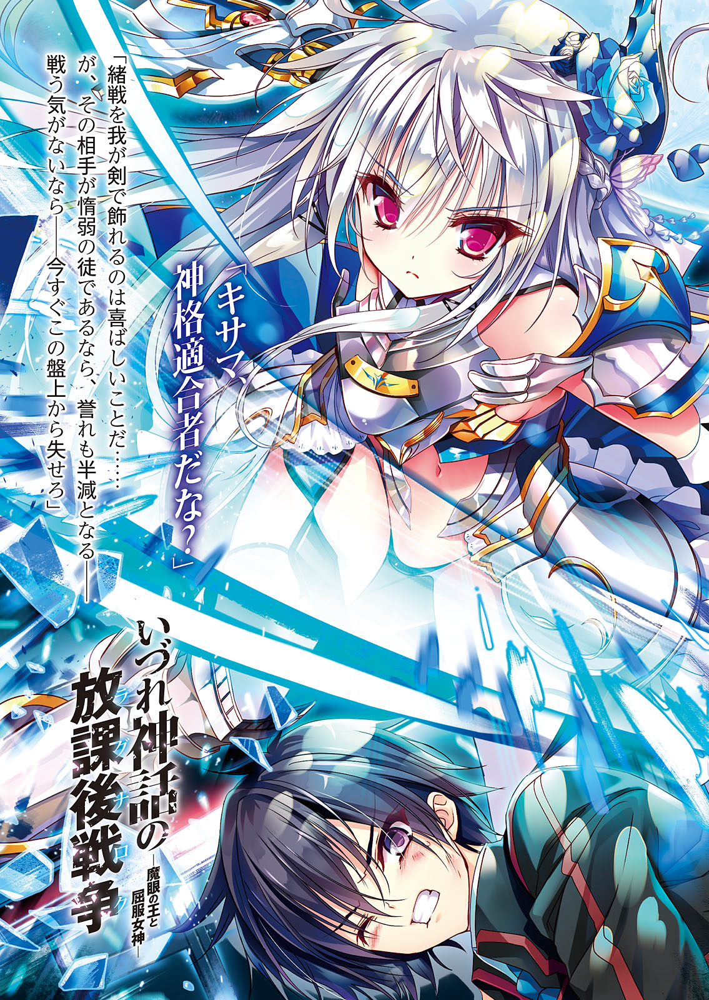

| いづれ神話の放課後戦争〈ラグナロク〉 ―魔眼の王と屈服女神― | |
| なめこ印 & よう太 | |

いづれ神話の放課後戦争
―魔眼の王と屈服女神―
なめこ印
富士見ファンタジア文庫
本作品の全部または一部を無断で複製、転載、配信、送信したり、ホームページ上に転載することを禁止します。また、本作品の内容を無断で改変、改ざん等を行うことも禁止します。
本作品購入時にご承諾いただいた規約により、有償・無償にかかわらず本作品を第三者に譲渡することはできません。
本作品を示すサムネイルなどのイメージ画像は、再ダウンロード時に予告なく変更される場合があります。
本作品は縦書きでレイアウトされています。
また、ご覧になるリーディングシステムにより、表示の差が認められることがあります。
口絵・本文イラスト よう太
プロローグ
深夜の校舎。
蹴散らされた机椅子。
踏み砕かれた床板。
破壊された壁。
鋭い切断面を残す割れた窓。
異変まみれの教室。
その中央に陣取る騎士甲冑を纏った少女。
深夜の学校に甲冑......非現実的な光景だ。
だが不思議とその少女には似合っている。
美しい顔立ちも、凜々しい表情も。
滲み出る清冽な雰囲気も。
月明かりを反射する銀の甲冑とともに、ひとりの少女をある種の神聖な存在へと変えていた。
そして、俺──神仙雷火は今まさに彼女に殺されようとしていた。
「キサマ、よくも手こずらせてくれたな」
少女は眦に苛立ちを込めながら呟く。
その手には竜殺しの神剣が握られ、切っ先は俺の首筋へ突きつけられていた。
教室をここまで荒らしたのも彼女の仕業だ。
と言っても、彼女がやったのは俺の首めがけて剣をひと薙ぎしただけ......それを避けた結果、教室の窓は六枚まとめて切断され、剣圧の余波で机や椅子は壁際まで吹き飛ばされて残骸の山と成り果てた。
当然、人間業ではない。
ゆえに、それを為した彼女は人間ではない。
神。
神様。
彼女は俗にそう呼ばれる存在だ。
常識の埒外。
世界の破壊者。
殺戮の権化。
神は人智を超えた力を持ち、人をあっさりと殺す。
あまりにもあっさりと殺す。
抵抗は無意味。
アリが象に勝てないように。
人は神に勝てない。
絶対。
確実に。
その事実は何があっても覆らない。
つまり、彼女の殺意が本物である以上。
俺はここで死ぬ。
──俺のこの目に宿った力が偽物なら。
「死ね」
単純明快な死の宣告が少女の口から告げられ、銀の刃が閃く──
ここがはじまり。
奪われ続けた俺の物語はここから叛逆を開始する。
これは叛逆の神話。
俺とつまはじき者の魔神が神々を騙り尽くす復讐劇。
さあ、森羅万象を跪かせよう。
大切な物を、奪り返すために。
第一章 夜時間の邂逅
１
その日、終末がやってきた。
世界が焼かれ、大地が砕かれ、空が朱に染まった日。
「はぁ、はぁ！」
俺は瓦礫と化した街中を必死に逃げていた。
父はもういない。
母ももういない。
家もない。
学校もない。
街もない。
頼れる物など何もなかったが、とにかく生き延びるために逃げていた。
死ぬのはもちろん怖かった。
だが、それ以上に家族を──妹を失うことが怖かった。
「──！ こっちだ！」
俺は背後を振り返り、妹の名前を呼ぶ。
肝心の名前は......思い出せない。
つないだ手の指先の感触まで覚えているというのに、名前どころか、俺の目には妹の顔すら、擦り切れた写真のように霞んで見えなかった──
そこで俺はこれが夢であることに気がつく。
これは夢であり、記憶。
十年前に俺が体験した、過去だ。
だから、このあと起きることも知っている。
ズドォン!!
凄まじい激突音がして、ビルが倒壊する。
ビルの瓦礫が俺たちの行く手を塞いだ。
「!?」
思わず立ち止まった俺の目に、信じられない光景が映る。
それは胸を手刀で貫かれた少年と、彼を串刺しにしている少女。
ふたりは瓦礫の山の上に立ち、今まさに殺し合いの決着をつけたところだった。
「ガフッ！」
少年が口から血を吐いて倒れ、瓦礫の上に崩れ落ちる。
「手こずらせおって」
返り血で真っ赤に染まった少女がつまらなそうに吐き捨てる。
その態度からは殺人に対する後悔や動揺はまったく感じられない。
「──ん？」
少女がこちらを見た。
「あ、う」
お互いの距離は充分に離れているというのに、俺は視線に射竦められてその場で金縛りにあった。
俺は俺に、逃げろ、と叫ぶ。
妹を連れて必死に逃げろ、と怒鳴る。
だがこれは過去の出来事なので、その行為には何の意味もない。
過去はどうやっても変えられない。
それに......仮に今の声が届いたとしても、おそらく無駄だっただろう。
「よお、人間」
そいつは妙に気さくな様子で俺に話しかけながら瓦礫の山を下りてきた。
見た目は15、16くらいの少女だった──だが、それは見た目だけで、相手が普通ではないことを俺は知っていた。
普通の人間は空から墜ちてきてビルに激突などしない。
普通の人間は人間の胸を素手で貫けない。
普通の人間はひとつの街を丸ごと焼き尽くすことなどできない。
「う～ん」
人間の外見をした人間ではない少女は、こちらを品定めするようにジロジロと見てくる。
「......ッ、、、」
その間、俺はまったく生きた心地がしなかった。
二十秒ほどその時間は続き、少女は唐突にうんと頷く。
「それ、いいな。私にくれ」
「......！」
少女が指差したのは妹だった。
「ひっ......！」
妹が小さな悲鳴を漏らす。
「あ、あ、、、」
俺は妹の手を握ったままカタカタと震えている。
少女の要求を断れないのは分かっていた。
俺は家の窓から偶然見ていたのだ。
彼女──それと先程殺された少年──がこの街の上空に現れ、戦い始める様を。
そして、少女の手から放たれた閃光が地上に落ちた瞬間、目に映る景色が瓦礫の山に変わり果てるのを。
今の俺は知っている。
この日、俺の街で起きたことが、世界中でも起こっていたのを。
災厄を起こした張本人たちのことも、もちろん知っている。
──神話の神々。
マヤ・アステカ神話。
日本神話。
インド神話。
エジプト神話。
ギリシャ神話。
北欧神話。
ケルト神話。
世界各地で語られる七つの神話。
その神話の神々が実在し、神界から人界に降りてきて、戦争を始めたのだ。
神と神の、神話対神話の戦争を。
十年前、世界に三日間だけ降り注いだ災厄。
たったの三日でユーラシア大陸の三分の一が消滅し、十五億人以上の人が死んだ戦争。
神話戦争。今ではそう呼ばれている。
「ひっ、ぐ」
もちろん、子供の頃の俺に目の前の少女が神であることを知る術はない。
だがその恐ろしさは身に染みて分かっていた。
それなのに──
「う、うああああ！」
──俺は少女に刃向かった。
妹を奪おうとする彼女に殴りかかった。
「おっ」
その行動が意外だったのか、少女は無防備に俺の拳を喰らった......が、６歳の子供の拳はあまりにも無力で、ぽんっ......と弱々しい音を立てるのが精いっぱいだった。
「うわっ、うわあああ！」
それでも必死に俺は殴り続けた。
いや、戦った。
彼我の実力差は語るのもおこがましいほど開いていて、それは戦いと呼ぶことすらできないものだったが、俺は妹を護るために全力で抗った。
「ハハッ」
少女は俺の抵抗を笑いながら蹴散らした。
彼女にとっては羽虫を手で払うようなものだったろうが、俺の体は何メートルも吹き飛ばされて瓦礫の山に頭から突っ込んだ。
「ぎゃあああ！」
右目が燃えるように熱くなって、俺はドクドクと溢れ出す血を両手で押さえた。
「──！ 逃げろ！」
俺は血と涙で曇った視界の向こうに大声で叫ぶ。
「お兄、ちゃ」
最後に、妹がか細い声で俺を呼ぶのが聞こえた。
......この先の記憶は意識が朦朧としていたためか、さらに不鮮明になる。
少女は妹に何かをしたあと、再び俺の方へ近づいてきた。
「...──、...──」
そして、何かを言った。
内容はまったく思い出せない。
それから少女は俺へと手を伸ばし。
そこでいったん俺の意識は途絶える。
再び目を覚ました時、俺の周りには瓦礫の街だけが残されていた。
その代わり、妹の痕跡は何ひとつ残されていなかった。
血だまりも。
死体も。
妹が殺されたことを示す物は何もなかった。
攫われたのか。
跡形もなくなったのか。
それとも......もっとおぞましい何かをされたのか。
手がかりは、ゼロ。
だが......生きている可能性は、ゼロじゃなかった。
「......、ブッ殺してやる......」
殺意。
ドス黒い、マグマのような感情。
腹の底からそれがせり上がってきて、俺は血が出るほど拳を握り締めた。
親を殺した神を殺す。
友達を殺した神を殺す。
俺たち兄妹をこんな目に遭わせた神を殺す。
神を殺して殺して殺し尽くして......妹を奪った神を見つけて、妹を奪り返す。
この日、俺の生き方は決まった。
２
「......さん。雷火さん」
「......ッ！」
肩を揺り起こされ、俺はハッと覚醒した。
その際、ガタンッ、と椅子が音を立ててしまう。
「あっ......」
ここは教室だった。
瓦礫の中じゃない。
今の俺は傷ついた子供などではなく、クラス中の視線を浴びる痛い高校生だった。
「神仙雷火君。お目覚めかい？」
担任の匣ノ木竜斗が無精ひげを生やした笑みで尋ねてくる。
「はい......すみません」
「いやーいいよいいよ。気にしないで」
へらへらと笑い、本当に気にした風もなく匣ノ木先生は授業を再開する。
集まっていた視線も黒板へと戻り、俺は居心地の悪さを感じながら席に着いた。
「雷火さん、大丈夫ですか？ うなされていましたけど......」
隣の席に座るマリア・ミントが気遣わしげに尋ねてくる。
俺を起こしてくれたのは彼女らしい。
「ああ、大丈夫......」
答えながら、本当は全然大丈夫じゃなかった。
必死に隠しているが心臓は早鐘を打ち、気を緩めれば呼吸も荒くなってしまいそうだ。
頭がジーンと窮屈になって、冷や汗で湿って背中が気持ち悪い。
なにより左目がヒドく疼いた。
俺はまぶたの上からドクンドクンと脈打つ眼球を押さえる。
またあの時の夢か......。
左目を押さえたまま心の中で呟く。
十年前の戦争で俺は右目を失い、移植手術を受けた。
そのため左目と右目で瞳の色が違う。
疼いている方の左目は生まれた時からの俺の目だ。
あの日、最後まで妹の姿を焼きつけていた俺の眼球......。
普段の生活に支障はないのだが、あの夢を見た時はいつもこうして疼く。
もう何百、何千と見た夢。
見る度に、俺は何度でもあの時のことを思い出す。
──十年前、世界に大きな傷跡を残した神話戦争はわずか三日で終息した。
神話戦争勃発から三日後、神々が忽然と姿を消してしまったからだ。
以来、今日に至るまで神がこの世界に再臨したことはない。
ゆえに、多くの人はあの三日間を〝悪夢〟として語る。
悪い夢と思って忘れてしまえば、二度と思い出す必要もない出来事として。
だが、俺はあの夢を見続けている限り、決してあの日のことを忘れられない。
十年経った今でも。
「......ッ」
俺が強く奥歯を嚙み締めていると──横から白いハンカチが差し出された。
「どうぞ」
マリアだった。
反射的に、俺は彼女のハンカチを受け取る。
「......ありがとう」
「いえ、無理なさらないでくださいね」
微笑みを浮かべ、マリアはノートを取る作業に戻る。
俺はしばらく迷ったが、ありがたくハンカチを使わせてもらう。
額に当てたやさしい感触に、少しだけ気分が落ち着いた。
「よう、雷火。寝不足か？」
その時、後ろから声をかけられる。
俺の後ろの席に座る國崎小次郎が話しかけてきたようだ。
「ああ、ちょっとな」
「何だ～？ 夜な夜な何か寝不足になるようなことでもしてんのか～」
「......アホなこと言ってないで授業に戻れって」
小突いてくる國崎に軽く小突き返し、俺も授業に戻る。
ふたりのおかげでだいぶ気も紛れたので、その後は俺も普通に授業を受けた。
やがて時間も過ぎ、もうすぐ授業時間も終わろうかという頃。
「さて、次は『診察』があるから、僕の授業はこのくらいにしておこうか」
不意に匣ノ木先生はそう言ってチョークを置いた。
瞬間、教室に一種の緊張が走る。
それを見て、無精ひげの担任は軽く笑った。
「あー、みんなは入学間もないから『診察』は今日がはじめてだったね。じゃあ、軽く説明しておこうか」
匣ノ木先生は教卓に手を突いて生徒を見渡す。
「えーと、まず君たちは世界共通検査で第七感の因子が見つかって、この学園に集められたってところはいいよね」
世界共通検査。第七感の因子。
日常生活では聞き慣れないふたつの単語は、この学園の生徒にとっては重い意味を持つ。
──神話戦争で一度人類が滅びかけたあと、世界では様々な変化が起きた。
枝葉は省くが、大きな変化のひとつとして、聖餐管理機構の発足が挙げられる。
ざっくり言ってしまうと、聖餐管理機構とは神話戦争の後始末をする組織だ。
神々が戦った古戦場には、人智の及ばない神性現象が今なお残留している。
そういった物の管理などが聖餐管理機構の仕事だ。
その仕事の中に、世界共通検査と呼ばれる物がある。
検査の内容は第七感の兆候の有無。
第七感とは第七因子とも呼ばれ、陳腐な言い方をすれば少年少女に発現する超能力のことだ。
これは神々の戦いによって撒き散らされた呪い──因子の影響であると言われているが、詳しいことは分かっていない。
分かってはいないが、危険かもしれないと言われている。
だから大人たちは因子を持つ子供たちを管理することにした。
それがこの学園。正確には、学園のある人工島だ。
島の名はローラシア島。
十年前に砕かれたユーラシア大陸に北極海の海水が流れ込んでできたローラシア海。その中心に造られたのが、このローラシア島だ。
島には神話戦争後15歳になり、因子が発覚した子供たちと、聖餐管理機構の職員のみが暮らしている。
まぁ、いわば隔離施設だ。
大人たちは子供たちの脱走を見張り、俺たちは因子が自然消失すると言われている18歳を過ぎるまで外には出られない。
学園──島にはほかに教育機関がないので単純に「学園」と呼ばれる──はいわばそういう施設で、『診察』とは月に一度ある因子の調査のことだ。
もしここで因子が陽性になったと判断されたりしたら一大事だ。
世間では神話戦争に類することをひたすら忘れたがっている。
そんな中、神の呪いに等しい第七感をその身に宿しているなどと知れたら、とてもではないがまともな人生は送れなくなるだろう。
だからこそクラスは緊張に包まれているわけだが──匣ノ木先生だけは相変わらずへらへらと笑っている。
「まぁ外では第七感についていろいろ噂されてるけど、実はそんなに心配しなくてもいい。実際に陽性が出る確率なんて％以下だ。超能力者が人を殺したなんて噂も聞いたことあるかもしれないけど、それも誤り。実際は超能力の暴走で本人が死んだんだ。それだってこの十年で事例は五件に満たない。人を殺したなんてのは根も葉もないデタラメだよ」
教師の丁寧な説明に、幾人かは安堵のため息を漏らす。
完全に空気が弛緩したわけではないが、匣ノ木先生の安穏とした物言いでだいぶ緊張も和らいだようだ。
俺は最初からその数字を知っていたので、別段代わり映えしなかったが、後ろからは國崎があからさまに安心した気配が伝わってくる。
そこでちょうどよくチャイムが鳴った。
「はーい、じゃあみんな移動してー」
匣ノ木先生の号令でみな思い思いに席を立って、『診察』が行われる体育館へと移動を始めた。
３
『診察』は無事に終わった。
今年の入学者、陽性ゼロ。
その報は帰りのＨＲには担任から全校生徒に教えられた。
「あー、今日から俺もついに超能力が使えると思ったんだけどな～」
國崎などはそれを聞いた瞬間、大袈裟に嘆いてみせたが、まぁ誰にでも分かる冗談だった。
やがて授業が終わり、入学時からの懸念だった不安が取り除かれた生徒たちは、どこか晴れやかな表情でひとりまたひとりと教室をあとにしていった。
平和な放課後。
そう言うに相応しい光景だ。
「よぉ雷火。お前は何してんだよ？ ......って、またクロスワードやってんのか」
國崎は人のクロスワードパズル問題集を見てため息をつく。
「趣味だよ、悪いか？」
「日本語のなら俺も一緒にやるけどさ、お前のそれ外国語じゃん」
「正確にはフランス語な」
「ボンジュールしか分からねーっての」
國崎はつまらなそうに自分の席にドッと腰かける。
今の俺たちのやり取りを見ながら、隣でニコニコしているマリア。
「雷火さんは語学が堪能ですよね。凄いです」
「せいぜい読み書き程度さ。発音はいまいちだって先生にも言われた」
「先生って、匣ノ木先生か？」
横から國崎が尋ねてくる。
「いや、ここに来る前に施設で......」
「雷火さんと私は同じ教会の施設に入っていたんです。勉学などはそこで」
「へぇー、そうなんだ」
「ああ、まぁ」
俺とマリアの首元には同じ十字架が提げられている。
これは俺たちが同じ教会施設の出であることを示していた。
「けどマリアちゃんって、確か英国人だよね？」
「......十年前はいろいろありましたから」
「ああ、そっか」
マリアが曖昧に答えると、國崎もそれ以上言うのをやめる。
誰にとっても十年前の出来事はあまり話したくない話題なのだ。
國崎は話を戻す。
「しかしまぁ、雷火はやっぱりその施設でも優秀な生徒だったんでしょ？」
「はい！」
マリアは曖昧な表情をやめ、ハッキリと答える。
「先生も雷火さんほど優秀な生徒さんを育てられて、さぞ誇りに思っていらっしゃることでしょう」
「それ以上はよしてくれよ、マリア」
マリアはやたらと俺を持ち上げてくれるが、件の『先生』にはロクに褒められた覚えがない。
まぁ、俺があの先生から教わったのは、語学なんかじゃなかったが......。
そこでなんとなくこの話題は終わり、國崎とマリアは雑談を続ける。
俺の方はもう一度パズルを解くのに戻ろうか、と思った時。
「ら・い・か」
「ん？」
後ろから声をかけられて振り返る。
そこにはひとりの女生徒──鹿金涙々が後ろ手を組んで立っていた。
小柄な背丈だが、スラッと伸びた手足。
肩まで伸ばした髪の色はやや色素が薄く、笑顔は子犬のように愛らしい。
制服の襟元はだらしなく開けていて、そこから覗くラインは思った以上に女性的だ。
「涙々。用事は終わったのか？」
「うん。秒殺」
涙々は笑って軽快に頷く。
「秒殺って、呼び出された相手って男じゃ......告白じゃなかったの？」
「うん。だから、秒殺」
「あはは、は」
微動だにしない笑顔に國崎は苦笑い。
「私は好みにうるさいから。特になよなよした男はダメ」
涙々はそう言いながら、俺の手許を覗き込む。
「ねぇ、雷火は何してるの？」
「クロスワードパズル」
「へぇー、見せてー」
涙々はもっとよく見ようと、俺の頰に触れるくらい顔を近づけてくる。
肩に体重がかかる。
......やりづらい。
「涙々さん！」
マリアが少し大きな声を上げる。
「ん？ なーに？」
「雷火さんとくっつきすぎです！ 若い男女は節度を持つべきもの、すぐに離れるべきです！」
「えー、いいじゃんマリアっち～。私は気にしてないよー？」
「ダ・メ・で・す！」
マリアは涙々をぐいぐいと押して、俺から離れさせる。
「いいですか涙々さん。あなたも日本人なのですから、節度ある大和撫子を目指してですね」
くどくどくど
なぜか生粋の英国人のマリアに、大和撫子について諭される純日本人の涙々の図。
微妙にシュールだな。
「で、どうよ？」
「何が？」
耳打ちしてきた國崎に問い返す。
「そりゃもちろん涙々ちゃんのおっぱいだよ。どうだった？ やわらかかったか？」
「......知らん」
「何をー!? お前まさか独り占めする気か!? マリアちゃんの魅惑のＤには及ばないまでも、それに勝るとも劣らない弾力を想像させる膨らみをををを！」
國崎は魂の叫びのような慟哭を漏らす。
あまりの剣幕に俺はたじたじになるが。
「國崎～」
額に青筋を浮かべた涙々が國崎の後ろに立つ。
「あ、ちょぼごぁ！」
國崎は弁解する暇もなく、その頭に強烈なチョップを喰らう。
自業自得すぎて何もコメントができない。
「魅惑のＤとは何でしょうか？」
マリアだけは小首を傾げ、頭にクエスチョンマークを浮かべていた。
「あっ、そういえば天華は？ まだ職員室？」
涙々は國崎から目を離して尋ねてくる。
「プリントと連絡事項だけだし、もう帰ってくると思うけど......」
俺が返事をする、と。
ガラガラガラ
ちょうどいいタイミングで、教室のドアが開いた。
「やっほー、お待たせ」
入ってきたのは涙々よりも小柄な少女。
こちらを振り向いた拍子に、黒髪のツインテールが跳ねる。
見た目は子供っぽいが、七ヶ国語を操る才女であり、入学から五日ですでにクラス委員長も任されている。
「いやいやー、竜斗せんせーが大事なプリントどっかやっちゃってさー。一緒に捜してたらこんな時間になっちゃった」
「あら、それは大変でしたね」
「もうむひゃーって感じだよ！ 机の上は片付けないとダメだよねー」
天華はころころ笑う。
それから彼女は自分のカバンを手に取って。
「じゃあ遊びに行こうよー。今日はクレープ食べたいなー」
「南区にならあるんじゃない？」
「あっ、俺この前クレープ屋見かけたぜ！」
「では國崎さんの案内でそこに行きましょうか」
天華に続く形で、みんなもぞろぞろと立ち上がる。
当然、俺もカバンを持って席を立った。
入学以来、この五人で行動するのがお決まりのパターンとなっていた。
数少ない日本人同士と日本愛好家というグループだが、意外と気が合うため居心地はいい。
それもグループをまとめる天華の手腕だろうが、この島に来た当初はこんなに友人ができると思っていなかった俺は、今でも少し戸惑っている。
こんな風に友達と遊ぶ日がまた来るとは思っていなかったから。
戸惑いはあるが、気分は悪くない。
ただ──
「──っ」
俺は前髪をイジるフリをして、左目を押さえる。
ズクンッ......ズクンッ
まぶたの奥が疼く。
手の平に眼球の熱を感じる。
「ん？ どうしたのー、雷火くん？」
ふと天華が振り返って俺に訊いてきた。
「いや、ちょっとゴミが入って」
俺は誤魔化す。
天華は、ふーん、と頷いて、隣の涙々と話すのを再開する。
......ズクンッ
またか。
たまに、こうなる。
常にではないが......天華を見ると、時折こうして左目が疼くのだ。
まるであの夢を見た時みたいに。
原因は分からない。
思い当たる節もない。
彼女とはこの島で出会ったばかりだ。
当然、十年前の出来事と結びつくような要素は何もない。
「......」
疼きは、ほんの二十秒足らずで収まる。
たいしたことはないのだが、頭の隅に引っかかるのは確かだ。
俺が完全にこの輪に溶け込めきれないのも、もしかしたらそのせいかもしれない。
そうこうしている内に昇降口に着く。
全員で靴を履き替え、南区に繰り出すために校門へと向かった。
すでに左目の疼きも収まった俺は、國崎と軽く談笑しながら歩いていると。
タンッ──
向こうから、ひとりの少女がやってきた。
プラチナシルバーの長い髪に、白い肌。
垂れ目気味の、整った顔立ち。
そんな、まるで妖精のように儚げな美しさを持った少女だった。
「おっ、シャルロッテ先輩じゃん。眼福眼福」
國崎はどうやら知っている人のようだ。
よく見ると、周囲の人間もすれ違う彼女を見て若干ざわついている。
この学園の有名人なのだろうか？
「國崎、あの人のこと知ってるのか？」
何の気なしに尋ねてみると、國崎はニヤッと笑って食いついてきた。
「おっ！ 雷火も興味あるかー？ 意外とお前も女好きだな！」
「いや、別にそういうわけじゃ」
「テレるなテレるな。よしっ、特別に俺が先輩方から仕入れた情報を提供してやろう」
入学五日目にして早くも國崎はその手のコネを築き始めているらしい。
そのバイタリティに呆れつつ、俺は半ば無理やり彼の話を聞かされた。
名前はシャルロッテ・ラブペイン。17歳。
性格は温和だが異性が苦手で、友達少なく恋愛経験なし。
趣味は読書。休日は寮からあまり出ない。
孤独ではなくひとりを好むタイプ。
図書館によくいるので、『本棚の銀妖精』とも呼ばれている。
彼女に密かに憧れている男子はいるものの、話しかけるとすぐに逃げられてしまうので誰も三言以上会話できた例しがない。
「で、スリーサイズが目算で上から......」
「そこまで聞いてない」
本人が目と鼻の先にいるのに、何を口走ろうとしてるんだこの男は。
「んだよー、その道のプロの眼力で正確に測った数字だぞ？」
「いいから黙れ」
「へぶっ！」
カバンで國崎の口を塞ぐ。
幸い、こちらの会話は聞こえなかったようで、先輩はまっすぐこちらに歩いてくる。
「......」
先輩は俺たちとすれ違いそうになり。
目の前で唐突にバランスを崩した。
「っと！」
俺は咄嗟に手を伸ばし、彼女の体を支える。
想像以上に細い腰だった。
（今、何もないところで転んだような......？）
そんな気がしたが、間違いだったら失礼なので言わないでおいた。
「あっ！ ええっ！」
抱き留められた彼女は驚きながら顔を赤らめる。
何か言いたそうだが上手く言葉にできないようだ。
そこでふと、俺は地面に一冊の本が落ちているのに気づく。
さっき転びかけた時、彼女のカバンから落ちたようだ。
俺は屈んで本を拾う。
タイトルは『星の王子と姫』。
表紙から察するに、恋愛物のファンタジーらしい。
「どうぞ」
俺は拾った本を先輩に返す。
「あっ、ありがとう」
彼女は本を受け取る。
その頰はやけに紅潮し、まるで真っ赤なトマトのようだった。
「......大丈夫ですか？」
あまりに様子が変だったのでつい尋ねる。
「だ、大丈夫です！」
先輩はブンブンと首を横に振りながら答えた。
否定なのか肯定なのか分かりづらい態度だが......まぁ大丈夫なのだろう。
ただ彼女はまだ何か言いたそうに、俺のことをチラチラと見ている。
それを無視してこの場を離れるのも微妙に罪悪感があり、俺はもう少し会話を続けることにした。
「......本、お好きなんですね」
「えっ！ あ、うん......好きです」
もじもじとしながら先輩は答える。
彼女はまたチラッと俺の顔を見上げ、
「あの......あなたのお名前は？」
「名前ですか？ 神仙雷火です」
「雷火くん......ね。えっと、わたしは二年生のシャルロッテ・ラブペイン」
シャルロッテ先輩は自己紹介をしたあと、
「その......雷火くんも本読むの？」
と、尋ねてきた。
「はい。読書は嫌いじゃありませんが」
「なら、わたし図書委員だから......図書館に来てくれたら案内できるし......その、お礼に」
先輩はしどろもどろにそんなことを言った。
若干言いたいことが不明瞭だが、察するに、今度図書館に来てくれたらお礼をしたい、と言いたいのだろうか？
（もしかしてさっきからそれが言いたかったのか？）
俺は彼女の態度に納得する。
「分かりました。今度お伺いします」
「う、うん！」
シャルロッテ先輩はうれしそうに頷いた。
「それじゃあ、友達も待ってますのでこれで」
「うん。じゃあ......図書館で、待ってるから」
最後にそう言うと、先輩は小走りに立ち去った。
彼女の姿が見えなくなったあと、不意に近づいてきた國崎が俺の肩をポンッと叩き。
「見てたぜ～雷火～、役得だったな」
「役得？」
「またまた～。雷火だって男の子だもんな～。あんな美人な先輩と密着した日にゃ夜にその感触を思い出して」
「もう一回黙れお前」
「へぶしっ！」
今度はやや強めにカバンを当てた。
「イテテ、けど噂じゃ男が大の苦手な先輩と、随分長いこと話してたじゃないか」
國崎は鼻を押さえながらなおも追及してくる。
「別に、お礼を言われてただけさ」
「お礼ってどんな？」
「今度図書館を案内してくれるそうだ」
俺が答えると、國崎は、アー、と天を仰ぐ。
「お前それ、あの先輩に興味持たれたんじゃねーの？」
「そうなのか？」
「でなきゃまた会う約束なんてしねーだろ。ああいいなー雷火は。俺にもお前くらいのナイス反射神経があれば先輩を助けて、ついでにうっかりあの豊満なおっぱいを」
「......」
今度は無言でカバンの角を國崎の頭に叩きつけた。
「っ～～～！」
悶絶する國崎を無視し、俺は女性陣に軽く頭を下げる。
「悪い。國崎がまたアホなことを」
「まぁ國崎だしね～」
「涙々ちゃんヒデェ！」
まぁそんなやり取りを経て、俺たちは学園前の緩い坂道を下って南区へと向かう。
島の南区はいわゆる繁華街エリアで、主に生徒が必要とする娯楽施設のほとんどが揃っている。
なにしろ商売の相手が生徒一択なので、たとえば紳士服の店とか、そういう無駄な物は一切ない。
完全に生徒が放課後や休日に遊ぶための施設ばかりだ。
そもそもが人工島であるこの島は、区画ごとの役割分担がかなり整理されている。
島の中心を学園として。
発電所など島内設備が集中している東区。
繁華街のある南区。
港のある西区。
自然公園などが多い北区。
このように綺麗に区画分けされているが、生徒が専ら利用するのは主に南区で、他のエリアにはあまり足を運ばない。
ゆえに、放課後の南区は生徒で溢れる。
右を見ても左を見ても制服だらけだ。
制服の洪水の間を縫って進み、國崎の言うクレープ屋を目指す。
途中、寄り道もしたが、概ね三十分ほどで目的地に到着した。
「天華は何にするー？」
「ストロベリーチョコのホイップ増しかな～」
「おー美味しそう。マリアっちはー？」
「私はバナナクレープでしょうか」
「ん？ チョコバナナにしないの？」
「生クリームの方が好きなんです」
「そっかー。じゃあ、私はフルーツサンデーにしよっかな。みんなで味見しようねー」
女子三人組は楽しそうにクレープを選び合っている。
「いやー、女子のこういう会話いいよなー」
「そうだな」
國崎がうんうん頷いていたので肯定しておく。
「ちなみに雷火は何にするんだ？」
「甘い物はそんなに得意じゃない。できればコーヒーが」
「クレープ屋にそれはないだろ。ジュースとか？」
「えー！ 雷火のも味見させてもらおうと思ってたのにー」
話を聞いていた涙々が文句を垂れる。
「こっちのヨーグルトサンデー頼んでよー」
「そう言われてもな」
「頼んでくれたら私と食べさせ合いっこさせてあげるからさー」
涙々はごろごろと猫みたいにおねだりしてくる。
それを聞いて國崎が。
「そういうことなら俺が買うって」
「國崎はいい」
「何でさ！」
「ふぅ、分かった。買うよ。でも、俺はひと口くらいしか食べられないからな？」
たいした出費でもないし、ここはみんなに合わせよう。
注文も決まり、数分と待たず全員分のクレープを受け取って、俺たちは外のテーブルに五人で座った。
「いやー、それにしてもみんな『診察』に引っかからなくてよかったなー」
クレープを食べながらの談笑の合間に、ふと國崎がしみじみと呟いた。
「確かにねー、國崎が超能力に目覚めたらエッチなことに使いそー」
「涙々ちゃんさっきからヒドくない!?」
「國崎さんはそんなことしませんよ。ね、國崎さん？」
「え、あー......」
「そこで口ごもるなよ國崎」
まったくこの友人は。
まぁ、マリアの純真な瞳に見つめられたら、ウソもつきづらくなるだろうが。
「そういえばねー」
その時、ストロベリーチョコをパクパク食べていた天華が口を挟んだ。
「この前ね、変な噂聞いたんだ」
「変な噂？」
「うん」
「何々？ どんな話？」
涙々が食いつき、みんな天華に注目する。
「『診察』に引っかかっちゃった人の噂」
「え？」
思いも寄らぬ話に、全員がきょとんとする。
「でも、今年の『診察』は陽性ゼロだって」
「あっ、ごめんごめん。今年の話じゃないよ」
天華は誤解を与えたことを謝り、話を続ける。
「ほら、竜斗せんせーは陽性が出る確率は％以下って言ってたけど、逆に言うと一万人にひとりの割合で出るってことでしょ？」
「その通りだな」
俺は相槌を打つ。
「で、その陽性反応が出ちゃった子はどうなっちゃうかって噂。なんかねー、超能力を本格的に調査する本物の研究機関に送られて、二度と帰ってこられないんだってー」
「......その噂、誰に聞いたんだ？」
「学級委員会で先輩に聞いたの」
あっけらかんと天華は答える。
「怖ぇー！ じゃあ俺らもヘタしたら、その研究機関に送られてたかもしれないのか!?」
國崎が叫ぶ。
「落ち着きなって國崎。どうせ噂話でしょ」
「そ、そうなんですか？」
マリアも少し怯えているようで声が震えている。
天華も悪気はないんだろうが......助け船を出しておくか。
「間違いなくただの噂さ」
今度は俺に視線が集中した。
「この学園の一学年の平均生徒数は～人。学園設立が神話戦争の翌年だから、今年で開校九年目だ」
この学園は三学年制。
よって初年度の入学者こそ最大で人になるだろうが、翌年以降は～人ずつしか増加しない。
「計算するとこの学園に生徒は卒業生を含めても最大で約人──一万人の三分の一以下しかいない。その中で一万分の一のアタリを引く人間なんて、滅多にいないさ」
「む～雷火くんのお話は数字が多くてこんがらがるよ」
天華は頭をくらくら転がす。
俺は肩を竦め。
「まっ、少なくともその噂をしていた先輩が、実際に研究所に連れてかれた人を見た可能性は限りなく低いってことさ」
「つまり、信憑性がない噂ということですね」
マリアはほっと胸を撫で下ろす。
「もー！ だから噂話だって最初から言ってるでしょ～。ちょっとした都市伝説みたいなものなのにー」
あくまで場に話題を提供したつもりだったらしく、俺たちの反応に不満げな態度を見せる天華。
「『都市』伝説っていうか『島』伝説だけどね」
「む～るいるいまで～」
「あははっ、ごめんごめん。ほら、私のクレープお食べ」
涙々は笑いながら天華に自分のクレープを差し出す。
「あむっ」
天華は彼女のクレープをひと口ぱくり。
「～♪」
あっさりと天華の機嫌は直った。
その頭を撫でながら、今度は涙々が口を開く。
「そういえば『島』の『伝説』っていえばさー、こんな話知ってる？」
「何だまた噂話か？」
「いいから聞きなってー」
涙々は笑ったまま話し始める。
「この島ってさー、人工島ってことになってるでしょ？ でも、どうやってこの島を造ったのか誰も知らないんだって」
「へ？ どういうこと？」
國崎が首を傾げる。
「だから、そのまんま。海のド真ん中に島を造った工法とか、そもそもどこの国のどんな業者が工事を請け負ったのか、一切資料がないんだってー」
「......ちなみにその話は？」
「だから、噂だってば」
俺の質問を涙々ははぐらかして答える。
噂、か。
「まー島を誰が造ったとかはどーでもいいっしょ！」
國崎はそう言って話を切り替えた。
「それより大事なのは遊ぶ場所が揃ってるかどうかだって。俺、みんなでカラオケ行きたい！」
「カラオケかー。私行ったことないから楽しみ」
「えっ、涙々ちゃんカラオケ初体験？ 意外！」
國崎と涙々はカラオケの話題で盛り上がる。
「......」
この島は広い。
入学から五日では、まだまだ回りきれていない場所がたくさんある。
それをこの五人で遊び歩くのは楽しそうだ。
そう、思う。
「遊ぶところが多いのはいいのですが、教会がないのは少々困り物ですね」
マリアが十字架をイジりながら嘆息する。
「へー、この島って教会ないんだ。ていうか、マリアっちは何でそれ知ってるの？」
「事前に調べておいたんです。そうしたらどうも、このローラシア島に教会は置かれてないみたいで、真聖教会の司祭様もいらっしゃらないようです」
「そうなんだー」
「おかげで日曜のミサもなくて、自室で祈りを捧げるしかありません」
「そりゃマリアっちからしたら死活問題だねー、って別に死にはしないか」
信徒でない涙々は共感しづらいのか、やや返事が適当だ。
「はい。死にはしませんが、困ります」
マリアは特に気を悪くした風もなく、頰に手を当てて頷いている。
「けどさー、何でこの島には教会がないんだろーな？」
國崎がなんとなく話を続けるためにといった具合に疑問を呈する。
「......まぁ、真聖教会と聖餐管理機構は不仲だから、教会施設が島に置かれないのは仕方ないさ」
「え？」
まさか答えが返ってくるとは思っていなかったのか、口を挟んだ俺の方を國崎が振り返る。
「そのふたつって、仲悪いんだ？」
涙々も興味をそそられたのか、話を聞いてくる。
少し余計なことを言った気がしたが、まぁ話しても問題ないことだろう。
俺は声量を気持ち抑えて話し始める。
「元々、異端を含む神秘に関するノウハウは旧教会が独占していたんだ。ほら、悪魔払いっていえば昔から司祭の仕事だっただろう？」
ここで言う「旧教会」とは、マリアが口にした真聖教会の前身となった世界三大宗教のひとつのことだ。
十年前の神話戦争によって「神」に対し、世界中の憎悪が膨れ上がったことをキッカケに、旧教会は現在の真聖教会へと姿を変えた。
大雑把に言うならば、宗教の中から「神」という言葉を排除したのだ。
聖書の文言から「神」を排除して「主」に統一したり、司祭を神父と呼ぶことを禁止したり。
一方で、神話戦争を起こした神々は全て「異端の神」ということにした。
そして、神話戦争がわずか三日で終結したのは、主が異端の神々を討ち滅ぼしたからだと喧伝したのだ。
ほかにも天国の定義を改変するなど、教義の大改革が行われた。
まぁ、今の話には関係ないので、閑話休題。
「で、神話戦争の戦後処理に関しても、教会主導で行われるはずだった。なにしろ戦争を起こしたのは異端の神々の仕業だったから。主の御名において、これを清め世界を元通りに正すのは教会の仕事というわけさ」
そこには異端の神々を「悪」として、「正義」の教会がその戦災とも言うべき神性現象を取り除くことで、失墜した権威を取り戻そうという思惑も当然含まれる。
だが、と俺は話を区切る。
「そこに聖餐管理機構が現れ、神話戦争に関する一切の権限を奪っていった」
「要するに、仕事を横取りしたってことか？」
「まぁ、有り体に言えばそういうことさ」
國崎の質問に俺は首肯する。
昔はこの程度の話ですら外部には洩らせなかったらしい。
だが、今や神の実在は明らかになり、神性現象は各地に残っている。
同時に、そういった神秘不可思議に対し、人間が対処法を持っているというのは、聖餐管理機構が世界中で証明してきた。
一方で、日々聖餐管理機構と張り合っている教会も、そういったノウハウを保持していることを世間にアピールしようとしている。だから、この程度のことは言っても問題ない。
もっとも國崎たちの反応を見る限り、そういった広報活動は上手くいっていないようだが。
と、そこで、まだ説明が足りないのか、國崎は再び首を傾げた。
「よく分かんねーな。代わりに仕事やってくれんなら、ラッキーって思うだろ普通」
「その辺はいろいろと大人の事情があるのさ」
教会の本音まで晒す必要性はないので、俺は笑って誤魔化した。
「まっ、そういうわけで教会と管理機構は、常日頃から管轄を巡って衝突を繰り返しているんだ。両者が不仲なのはそういうわけさ」
俺は話を締めくくる。
「雷火くんは物知りだねー」
天華が感心したように頷く。
が、そこで彼女は眉尻を下げ、マリアを見やる。
「けどー、そうするとこの先も島には教会が建ちそうにないね、マリアちゃん」
「そうですね」
マリアは仕方ないといった風に頷く。
「雷火くんは不便じゃないの？」
天華は俺も首から提げている十字架を見て、言った。
俺は、
「元から祈りはさほど捧げてないんだ、不良信徒だから」
と、答えた。
さて、その後もしばらく世間話に華を咲かせていると。
『もうすぐ夜時間です。生徒は寮に帰りましょう』
拡声器を持った警備員が現れてアナウンスを始めた。
ああ、もうすぐ日没なのか。
この学園の寮は門限に厳しいが、実は寮則には「日没前に帰寮すべし」としか書かれていない。
つまり明確な時間が決まっていないのだ。
ではどうやって生徒が門限を知るのかというと、学園側が当日の日没の時刻を正確に調べ、こうして一時間前から島中にアナウンスを始めるのである。
日没後は夜時間と呼ばれ、一切の外出が禁止される。
ルールを無視すれば反省文に謹慎。
その他諸々の罰則が科せられる。
匣ノ木先生もそこだけは念入りに注意していた。
学生だらけの島なので、規律をしっかりしないとすぐ荒れてしまう云々。
個人的には夜の街で遊びほうける性格でもないので、俺としては門限が何時でも構わないのだが、
「えー、もう夜時間かよー」
「遊び足りなーい」
國崎や涙々などといったタイプは不満たらたらのようだ。
「まーまー、明日だって遊べるんだし、おとなしく帰ろーよ」
天華がふたりをなだめる。
どちらにせよ夜時間になれば店は全て閉まってしまうので、あえてルールに逆らう意味もあまりない。
國崎と涙々も渋々立ち上がる。
そうして俺たちは他の生徒たちと同じように帰路に就いた。
学園の用意した寮は島の東西南北に数ヶ所建てられている。
俺と國崎とマリアは南寮、天華が東寮、涙々が西寮だ。
「んじゃ、まったねー」
「また明日ー」
途中の十字路で、涙々と天華のふたりと別れる。
俺と國崎とマリアの三人は南寮へ向かう。
「しっかし、俺たちは南寮でラッキーだったよなー」
「そうだな」
「そうですね」
生徒は放課後になると南区に行く者が多いので、一番近い南寮はアタリだと言われている。逆に北寮はハズレだそうだ。
そうこう話している内に南寮に着く。
学生寮はどこも基本同じ構造で四階建て。
男子寮と女子寮は別棟ではなくひとつの建物となっているが、男子の部屋と女子の部屋は建物の左右で完全に分けられていて、中での行き来は不可能だ。
当然、男女の玄関も別々で、玄関傍の寮監室から常に生徒の出入りは監視されている。
「じゃあ、マリアちゃんもまったあっしたー！」
「また明日」
「はい。また明日」
マリアとも玄関前で別れ、俺はいつまでも彼女に手を振っている國崎の背を押して男子玄関に入る。
「それじゃ、俺は上だから」
「おう。あっ、そういや雷火は何時に飯食うんだ？」
階段をのぼろうとする俺を引き留め、國崎が尋ねてくる。
寮の食堂が開いているのは五～八時の間で、その間ならいつでも食事ができることになっている。
「早く読みたい本があるんだ。いつ読み終わるか、ちょっと分からないな」
「何だよー。俺と本とどっちが大事なんだよー？」
國崎は不満げに言う。
どうやら時間を合わせてくれるつもりだったらしい。
それを断るのは心苦しいが......
「悪いな」
「雷火のいけずー」
「それは気持ち悪いぞ」
「はははっ、んじゃ雷火もまた明日なー」
俺は苦笑気味に手を振り返し、自分の部屋へと向かった。
俺が割り当てられたのは寮の四階の一番端の部屋だ。
つまり、玄関から一番遠い部屋となる。
エレベーターもあるにはあるのだが、慣例で二・三年生しか使えない。
部屋割りは入学時に完全にランダムで決められるため、一階の部屋を引き当てた國崎には運が悪い奴だなと笑われてしまった。
「ふぅ......」
ようやく自分の部屋に辿り着いた俺は、電子キーで鍵を開ける。
室内に入って電気をつけ、カバンを床に置いた。
まぁ、國崎の言う通り、普通ならこの部屋はハズレくじだろう。
だが、俺は逆に運がよかったと思う。
いや、俺たちにとっては、か。
コンッ コンッ
その時、ノックの音がベランダから聞こえる。
俺は特に驚きもせずカーテンを開けた。
するとそこには──先程別れたマリアの姿が。
「お待たせしました」
「待ってないから大丈夫だ。早く入れ」
男子部屋に女子を連れ込むのはもちろん寮則違反だ。
だが俺は気にせず彼女を中に入れる。
どうしてベランダから現れたのかとツッコミもしない。
彼女がこうやって俺の部屋に来るのは分かっていたからだ。
先程の運がよかったというのも、四階の部屋なら屋上からワイヤーを使って降りやすい、という意味だ。
なぜ、俺とマリアがこんなコソコソと密会のような真似をするのか？
それは、俺がこの島に来た本当の目的と関係があった。
４
十年前、全てを失った俺は孤児となった。
俺が引き取られたのはとある孤児院だった。
いや、正確には違う。
俺は意図してその孤児院を探し当て、自らそこに入ったのだ。
そこは当時まだ旧教会の名を冠していた真聖教会の施設だった。
だが、教会が運営していた孤児院自体は、ほかにも無数にあった。
その中からあえて俺がそこを選んだのにはもちろん理由がある。
その施設が──教会の異端討伐者育成所の日本支部だったからだ。
「神どもを殺す方法を教えてくれ」
そう告げて、俺はその施設に入った。
それから十年。
俺は毎日血反吐を吐き続けた。
肉体を虐め抜くことは日課で、そのほかにも語学を含めたあらゆる座学を叩き込まれた。
血も涙もない教官を、何度人でなしと思ったか分からない。
ようやく一人前と認められたのはつい先日。
それと同時に与えられたのが、この島への潜入任務だった。
俺が教会から与えられた指令はただひとつ。
「聖餐管理機構がローラシア島で行っていることの全貌を暴け」
ここ、ローラシア島には謎が多すぎる。
たとえば、涙々は都市伝説や噂話の類のつもりで話していたのだろうが、この島がどうやって造られたのかは本当に誰も知らないのだ。
神話戦争の影響で大幅に信徒を減らしたとはいえ、教会の情報網は世界中に張り巡らされている。
それでもなお、いつ、誰が、これほどの大工事を施工したのか分からないのだ。
しかも、この人工島は浮島ですらなく、海底から基礎が築かれている。
陸地に近い浅瀬を埋め立てるのとはわけが違う。
かつてここに存在したユーラシア大陸は、北欧神話のトールと日本神話の建御雷神──ふたつの神話の雷神がぶつかった地なのだ。
両神話を代表する武神でもある二柱の戦闘は凄まじく、その激突は世界最大大陸の三分の一を砕くに至った。
ローラシア島は、まさにその爆心地に造られた島なのだ。
ここに穿たれた穴がどれほど深いのか見当もつかない。
そんな場所にどうやって、それもたった一年で島を造ったのか？
そもそも現代の技術で可能なことなのか？
島の由来だけでこれだけの謎が浮かび上がる。
さらに最も深い闇に包まれた謎が、聖餐管理機構の成り立ちだ。
管理機構が生まれたのはローラシア島の完成とほぼ同時期。
加えて、未だに混乱の只中にあった教会の隙を突き、世界共通検査の開始や神性現象の後始末など、全ての主導権をかっ攫っていった。
混乱期にあったとはいえ、教会の影響力は当時でも絶大だった。
少なくとも生まれたばかりの新興勢力に遅れを取るようなことは決してあり得ない......普通なら。
しかし、現状はご覧の有り様だ。
聖餐管理機構は神話戦争に関する一切を管理し、教会をまったく立ち入れさせない。
奴らがどうやって教会の影響力を凌駕するほどの力をつけたのか、設立の背景は何なのか、全て闇の中だ。
あまりにも不可解。
あまりにも不気味。
尋常ならざる何かが背後にいるのでは？
教会上層部が──そして俺が知りたいのは──管理機構の背後にいるその何かの正体だ。
神が地上に現れ、去ったのが十年前。
この島と管理機構ができたのはその一年後。
それら一連の流れは、本当に無関係な物なのか？
あるいは、その尋常ならざる何かとは神にかかわるモノなのではないか？
教会は長年の調査で、聖餐管理機構がその何かをこの島に隠していることを突き止めた。
そこで教会は学園への入学条件を満たしていた俺をここへ送り込んだのだ。
管理機構の背後にいるモノと、奴らがこの島で何をしているのかを調査させるために。
「......」
これが教会と管理機構の権力争いの一部であることは俺も理解している。
だが、それでも俺がこの任務に臨んだのは、神々の手がかりが手に入るかも知れないと思ったからだ。
十年前に姿を消した妹。
その行方を知るためには、俺たち兄妹を襲った神を見つけ出すしかない。
無論、管理機構の背後にいるモノが、十年前の神の正体とつながっているかは不明だ。
だが、どんなにか細い可能性の糸でも、妹を見つけるためなら、俺はそれをたぐり寄せるために全力を尽くす。
それが俺がこの島に来た本当の目的。
その目的を果たすための行動を、今夜から始めるつもりだ。
つもり......なのだが。
「マリア、そろそろ離してくれ」
「嫌です、雷火先輩」
と言って、マリアはこの部屋に来てから十分以上も俺に抱きついたままだ。
断っておくが、俺とマリアは同級生だ。
なのに、彼女がふたりきりの時に俺を「先輩」と呼ぶのにはわけがある。
昼間、國崎と話している時、俺と彼女は同じ施設の出身だと言った。
それはそのままの意味で──つまり、彼女も俺と同じく、異端討伐者としての訓練を受けた人間なのだ。
先輩という呼び方は、その施設にいた頃の名残である。
俺と同じく学園への入学基準を満たしていたマリアは、今回の潜入任務のバックアップという形で、一緒にこの島にやってきた、のだが......。
「マリア」
「先輩、教室で涙々さんに抱きつかれていたでしょう。だから私も抱きつきます」
「涙々にはくっつくなと説教していたじゃないか」
「私はいいんです」
しれっと答えて、マリアは密着を続行する。
「......」
仕方なく、俺は抵抗を諦めた。
そのままさらに十分が経つ。
時刻は六時一分。
外は完全に暗くなり、もう警備員の巡回も終わっている頃だ。
いい加減、切り替えるか。
「マリア」
「はい」
今度の呼びかけにはマリアも素直に応じた。
不意に妙な言動を取ることもあるが、基本はマジメな少女なのだ。
「それで？ 学生寮にかけられた魔術の解析は終わったのか？」
「はい」
マリアは頷く。
入学から五日目──今日まで俺たちが動かなかったのは、この建物全体に何らかの魔術的仕掛けが施されていることに初日から気づいていたからだ。
「この建物に仕掛けられているのは、いわゆる人払いの結界の逆──つまり、この建物から出て行きたいという気持ちを霧散させる類の魔術のようです」
マリアはこの五日で調べた建物の魔術的仕掛けについて説明する。
こと魔術に関しては彼女の方が適性は上なので、その解析結果は信用していいだろう。
「人を建物内に留める仕掛け、か」
「そうです。私と雷火先輩はこの十字架のおかげで影響を受けませんが」
そう言って、マリアは自分の十字架を軽く掲げてみせる。
この十字架は異端討伐者に与えられる基本装備のひとつで、心身に害のある呪いや魔術をはじき返す効果がある。
実際、この十字架を着けたマリアは屋上──つまり屋外に出て、俺の部屋まで来た。
だが、そんな物を持っているはずもない一般生徒は、おそらく外に出ようという気にもなれないだろう。
「それと、この仕掛けはどうやら夜時間の間だけ発動する仕組みになっているようです」
「寮則を徹底させるため......にしてはやりすぎだな」
この程度の魔術なら人界の技の範疇だ。
ゆえに、聖餐管理機構がこの仕掛けを施した可能性もあり得る。
仮に聖餐管理機構が犯人であるとするなら、
「何か生徒には見せられないようなことを、夜時間にやっている？」
と、考えるのが妥当だろう。
マリアも無言で頷き、俺の意見に肯定を示す。
これで裏が取れた、とまでは言わないが。
「やはり夜時間の島を調査する必要があるな」
少なくとも、次の行動は決まった。
「予定通り、俺はこれより単独で島の調査を開始する」
「分かりました。武器の携帯は？」
「必要ない」
俺の任務はあくまで潜入捜査だ。
つまり、何よりも見つからないことが第一であって、武器を使わなければならないような状況に陥った時点で任務は失敗である。
仮に失敗したとして、この島からの脱出経路は航路しかない。
逃げようと思ったらシージャックをするほかなく、そんな大事件を起こせば教会も俺を庇ったり匿ったりはしてくれないだろう。
それならまだ武器など持っていかない方がマシだ。
「マリアは自分の部屋に戻れ。万が一、俺が戻らなかった時は教会へ連絡を取れ」
「了解です。雷火先輩なら心配いりませんが、どうかご無事で」
俺はマリアよりも先にベランダに出て、ワイヤーの準備をした。
そして、彼女と同じようにワイヤーを使って、四階のベランダから静かに地上へと降りる。
「......」
俺は寮監室から見えないように注意しながら学生寮から離れた。
５
まず俺は学園へ向かうことにした。
ハッキリと何かがあるという確信があったわけではない。
もし、この島自体が、聖餐管理機構の何らかの目的があって造られたのなら、その中心に建てられた学園にこそ何かあるのでは、と考えただけだ。
元よりアテはない。
ひとまず直感を信じて、俺は普段の通学路と同じ道を慎重に移動し始めた。
......だが、いつもの三倍近い時間をかけても、校舎すら見えてこない。
違和感を覚えて一度立ち止まると、その理由が分かった。
周りが静かすぎるのだ。
そのため自分の足音を消すことに異様に過敏になり、移動速度が極端に低下していたようだ。
「......」
静寂が耳に痛い。
無人の街を通り抜ける風が余計に冷たい物に感じる。
夜時間。
最初聞いた時は安易なネーミングだと思ったが、こうして体験してみると妙にしっくりくる気がする。
昼と夜。
今まで意識したこともなかったが、夜は昼と大きく異なる世界だ。
生き物は息を潜め、空気は冷え、音は絶える。
耳元の血流の音すら聞こえそうなほどの静寂に思わず立ち尽くす。
心がざわつくのは恐怖ではなく畏れ。
雑音の消えた空間というのは、自分の小ささと、世界の広さを実感させる。
自分よりはるかに巨大な物に対し、人は恐れよりも畏怖の念を抱く。
それはかつて人が神や自然に対して抱いていた感情だ。
この街は、この島は、そんなものを人に再認識させる。
『───ぃ』
......ん？
今、何者かの声が。
俺はすぐ物陰に隠れて周囲を窺うが、それらしい人影はない。
辺りは相変わらず、シン......、と静まり返っている。
......気のせいか？
それにしては、やけに耳に残る声だったが。
いや、こんなところで時間を喰っている暇はないか。
俺は移動を再開し、学園へと向かう。
緩い坂道をのぼると、ようやく校舎が見えてくる。
周囲を警戒しながら校門を越え、昇降口へそっと近づこうとして。
その時。
「───あ」
ふと見上げた校舎の屋上に誰かがいた。
髪の長さからしておそらく少女。
月明かりを背負うその少女が着ているのは──銀色の騎士甲冑。
首元にはタイ。鎧の裾はスカートのように広がっている。
まるで学園の制服と甲冑が一体となったような姿だ。
奇妙な格好とも言えるが、不思議とその姿は美しかった。
夜時間の静寂と、今にも落ちてきそうな月影も重なり、彼女の立ち姿はどこか神秘的に映る。
「───」
少女の視線が、くいっ、と下にさがる。
目と目が合った。
「シャルロッテ先輩？」
影になって見えづらいが、その顔立ちには見覚えがあった。
今日の帰り際に校門前ですれ違った学園の二年生。
シャルロッテ・ラブペイン。
昼と夜の違いがそう見せるのか、少しだけ受ける印象が違う。
最初見た時は儚げな雰囲気だったのが、今はまるで抜き放たれた刃のように鋭く清冽な......。
俺が息を吞んで彼女を見つめていると。
突然、その姿が屋上から飛んだ。
「なっ!?」
飛び降り自──違う。
彼女は明らかに俺めがけて落ちて、いや、跳躍していた。
「来たれ、ノートゥング！」
空中でシャルロッテ先輩が叫ぶ。
彼女の手に光が集束し、剣の形を成した。
日本の刀とは違う。やや幅広の騎士剣。
柄に銀の装飾がなされ、紅色の宝珠が嵌まっている。
刃には一切の曇りもなく。
そして、その刃の軌道は俺を狙っていた──！
「くっ！」
俺は跳んできた彼女の下をくぐるように体を前へ投げ出す。
ズガガガンッ!!
コンクリートが抉れる音がした。
地面を転がりながら俺が見たのは、振り下ろされた騎士剣が舗装された地面を割り砕き、巨大な亀裂を作り出す場面だった。
「何!?」
どんな名刀・名剣だってあんな真似はできない。
ハンマーや鉄球じゃあるまいし、地面を割るなんて。
それ以前に人間が屋上から跳躍して、受け身も取らずに両足で着地できるのもおかしい。
立ち上がり、校舎を背にした俺は普通とは思えない少女と対峙する。
こちらを振り向いた彼女は鋭い視線で俺を射抜くように見た。
その瞳から感じる殺気と強い意志力は、昼間に言葉を交わした彼女の印象とは似ても似つかない。
あれはそう、まるで昔瓦礫の山に立っていた......
──かつて天から降ってきた神少女の姿が脳裏にフラッシュバックする。
「ぐ......！」
左目が疼く。
俺が片手で目を押さえていると、シャルロッテ先輩が振り返った。
「キサマ、神格適合者だな」
彼女が切っ先を突きつけ、問うてきた。
「神格適合者？」
俺は左目を押さえ、冷や汗を流しながら答える。
彼女自身も不可解だが、言っていることも意味不明だ。
こちらとしては当然の反応を返したつもりだが、向こうはとぼけたと思ったようだ。
先輩は目に怒りを露わにして。
「夜時間に出歩いておいて今更何を──」
（夜時間？）
確かに寮則違反だが、それが何だと言うんだ？
しかし、それについて尋ねる前に。
「三度目ともなるこの戦争。緒戦を我が剣で飾れるのは喜ばしいことだ......が、その相手が惰弱の徒であるなら、誉れも半減となる」
三度目の、戦争？
十年前の神話戦争以来、この世界で「戦争」と呼べるほど大規模な争いは一度も起きていない。
ゾワッ
何か得体の知れない悪寒が俺の背筋を這い上がった。
「せめて己に恥じぬ戦いをしろ」
「待て！ さっきから何を......」
「チッ」
シャルロッテ先輩は怒りも露わに舌打ちをする。
「戦う気がないなら──今すぐこの盤上から失せろ」
チャキッと音を立てて、騎士は剣を構える。
切っ先から放たれる殺意は紛れもなく本物。
先程の動きといい、昼間の彼女とはまるで別人だ。
聖餐管理機構の調査に来て、なぜ学生の彼女に襲われるのかわけが分からないが......。
今、それを考えている暇はない。
（......正面からの制圧は無理か）
シャルロッテ先輩の身のこなしは俺を上回る。
剣を持つ彼女に対し、素手で立ち向かうのは無謀。
（この場からの離脱が最優先だ）
俺が逃走ルートを思案していると、唐突にシャルロッテ先輩の首元に小さな光が灯る。
それはタイと襟の隙間辺りだった。
入れ墨......ではない。シンプルな線で描かれた紋様が、どういう原理かは知らないが淡く燐光を放っている。
おまけにあの紋様、いや、文字は......。
『──るか』
......またこの声？
さっきのはてっきりシャルロッテ先輩の声かと思っていたが、彼女の口は動いていない。それに改めて聞くと明らかに声色が違う。
ならこの声の主は誰だ？
聞き取りづらい声だったが、かろうじて分かるのは男の声ということだ。
ほかにも誰かいるのか──と、俺が一瞬周囲に目を配った瞬間。
少女が駆けた。
「ッ!?」
反射に任せて体を横へ投げ出す。
傾いた耳の上を剣閃が走った。
ズバガンッ!!
校舎の壁が切断された──！
それこそ真一文字に。
その衝撃で昇降口の分厚いドアガラスは全て粉々になり、飛来した砂礫が俺の全身を打った。
「グッ！」
俺は痛みを嚙み殺し、壊れたドアから建物の中へと入った。
廊下を走りながら俺はひと筋の冷や汗を流す。
（何なんだあの異常な破壊力は!?）
それに、あの剣と対峙する度に感じるぞわりとした悪寒。
あれはダメだ。
この世にあってはならない物だ。
人としての本能が、その脅威を直感している。
ならばこの状況をどう切り抜ける？
俺は思考を巡らせながら階段をのぼる。
逃げ場のない上へ逃げるのは愚策だが、校舎の廊下はストレートで遮蔽物がない。驚異的な身体能力を持つ彼女に追いつかれる危険が高すぎた。
ひとまずどこかに隠れて彼女をやり過ごし、再び外へ脱出する。
完全に受け身の策だが、今はこれしかない。
どう控えめに見ても絶望的な状況だ。
そもそもこの状況が未だに何なのか分からないのもマズい。
せめてあの剣の正体が分からないことには。
確か......彼女はノートゥングと呼んで......い、た。
「!?」
三階まで階段をのぼりきったところで足が止まった。
気づいたからだ。
いや、思い出したというべきか。
俺はあの剣を知っている。
その時、窓の外に影が。
現れたのは灰色の毛並みをした雄々しき天馬。
（空を!?）
天馬は宙を蹴り、空を飛ぶように駆けている。
その背には騎士剣を持ったシャルロッテ先輩。
「征け、グラニ！」
少女の鮮烈な声が窓越しに響く。
グラニ。
ノートゥング。
そして騎士甲冑に、あの文字。
（やはり!?）
彼女の正体についてある確信が浮かぶ。
同時に、天馬の突進が校舎の壁を打ち砕いた。
ドゴォオ!!
「くっ！」
俺は瓦礫を避けて廊下を転がる。
馬が空を飛び、体当たりで校舎を砕く。
理不尽すら感じさせる光景を目の当たりにした時、多くの人は啞然とするだろう。
だが、俺はそれどころではなかった。
ドクンッ
怒りで。
ドクンッ ドクンッ ドクンッ
この心臓が張り裂けそうな感情のせいで、正気を保つのに精いっぱいだった。
「逃げるな卑怯者め！」
シャルロッテ先輩が何かを言っている。
だが、そんなもの、どうでもいい。
俯き加減だった俺は顔を上げ、
「ようやく見つけた」
心の底から絞り出した声で、そう言った。
「───!?」
俺の尋常ならざる気配に気圧されてか、シャルロッテ先輩は馬上で怯みを見せる。
その隙を、俺は逃さなかった。
壁際の消火器を摑む。
「むっ!?」
馬上のシャルロッテ先輩は、俺がその重たい消火器を投げつけるとでも思ったのか、空中で斬り落とそうと剣を構えた。
その隙に俺は消火器のピンを抜き、噴出口を彼女の顔に向けてレバーを握った。
「わぷっ！」
消火剤を顔に浴び、騎士は小さな悲鳴を上げる。
目くらましに成功した俺は素早く天馬の横をすり抜け、その場から離脱した。
６
俺は三階の教室に入り、窓際の壁に背を預けて息を潜めていた。
一階へ降りなかったのは、外へ逃げたところで天馬から逃げ切る自信がなかったからだ。
ましてや向こうは空まで飛べる。
寮へ、つまりは人目のあるところへ逃げることも検討したが、相手の目的が不明瞭である以上、人がいても気にせず襲ってくる可能性が消せない。
そうなったら他人を巻き込んでしまう。
ここへ来て親しくなった國崎、涙々、天華。
まだ親しくもない、これから親しくなるかもしれないクラスメイトたちも。
それは断じて避けなければならない。
それにシャルロッテ先輩に、いや、アイツには訊きたいことがごまんとある。
──彼女の首元に刻まれた光る紋様。
あれはルーン文字だ。
北欧のゲルマン民族が用いた文字であり、とある神話体系に深く関わる文字でもある。
ルーン文字にはひとつひとつに意味が含まれている。
彼女の首にあった文字の意味は──
『──ウヒヒヒ、死にそうだな、人間』
「!?」
声が出そうになるのを必死に堪える。
シャルロッテ先輩とは似ても似つかない男の声。
先程から何度も微かに聞こえていた、あの声だ。
『──おっと、ようやく声が届いたか。その十字架が邪魔で上手く声が聞こえなかったようだが、俺サマの呼びかけを何度も無視するとは不届きな奴だ！』
注意深く周囲を見回すが、教室には俺以外誰もいない。
なら......この声は俺にだけ聞こえている？
（誰だお前は？）
『──名乗ってやってもいいが、その前に敵が来るぞ。首をちょん切られてから俺サマの名前を聞くか？』
せせら笑うように声は答える。
やたらと口が悪い。
だがその声の言う通りでもある。
（敵、と言ったな。それはシャルロッテ先輩のことか？ お前は彼女が俺を襲う理由を知っているのか？）
『──ああ知ってる。俺サマたちはずっとここで戦争をしてるんだ。お前は俺サマの適合者として選ばれたんだよ。まぁ選んだのも俺サマだが』
適合者。さっきシャルロッテ先輩も「神格適合者」という言葉を口にしていた。
それに戦争。彼女もこれを三度目の戦争と言った。
頭の中でいくつかの点がつながっていくが、今は捨て置く。
今必要なのは──
『──ウヒヒヒ、そうだな。今お前に必要なのは戦う力だ。お前には俺サマの能力をくれてやろう。ありがたく地べたに額を擦りつけながら受け取れ』
（能力？ それは......）
何だ、と尋ねる前に──突然、膨大な情報が俺の頭に流れ込んできた。
俺に与えられる能力。使い方。及びその特性。
脳の処理能力を強引に加速させ、流入してくる知識の数々。
眩暈がするほどの情報量は俺にヒドい頭痛と、強烈な左目の疼きを引き起こした。
「ガアアアアア！」
両手で頭を抱え、痛みを堪えきれずに叫ぶ。
同時に、教室の壁が切り裂かれた。
「──見つけたぞ」
現れたのは騎士剣を持ったシャルロッテ先輩。
廊下を移動するには天井が低かったのか、グラニには騎乗していない。
だがこの場で天馬よりも厄介なのはあの剣だ。
教室内では彼女の剣を避けるためのスペースが圧倒的に足りない。
「クッ！」
左目への能力の譲渡はまだ途中だ。
「これで終わりだ」
彼女は剣を構えて突進してくる。
突進の際に踏み込んだ足が床板を割り砕いた。
あんな勢いで甲冑を着た相手に体当たりされたら、それだけで死ぬ。
「このッ！」
俺はとっさに手近にあった椅子を投げた。
だがそれは騎士剣で難なく斬り払われる。
「ッ！」
先輩はすでに次の斬撃──つまり俺を殺すためのモーションに入っている。
俺にこれを躱す術はない。
剣の切っ先が動く。
一ミリずつ一ミリずつ。
死が近づいてくる。
（ここで死ぬのか、俺は。殺されるのか？）
十年前は両親を殺され、街を焼かれ。
妹も奪われて。
挙句に何も奪り返せずに......俺は死ぬのか？
......。
......。
ふざけるな。
ふざけるなふざけるなふざけるな！
それだけは了承できない！
ここで終わるなら、何のための十年だったんだ!?
脳裏をよぎるのは、あの日の瓦礫の山、その上で嗤う神の少女。
奴を見つけ出して、あの時妹をどうしたのか吐き出させるまで俺は。
（死んで、、、たまるか！）
『──いいな、お前』
再び響いた声が時間の流れを元に戻した。
ビュンッ!!
頭の上を風切り音が通り抜ける。
どうやら俺は無意識の内に剣を避けようとして、尻餅をついていたようだ。その頭上を剣が薙いだらしい。
俺の首を切断しかけた一閃は教室の窓をまとめて断ち割った。
斬られた窓ガラスの下半分が外へ落下していく。
さらに巻き起こった剣圧で、近くにあった机と椅子がまとめて吹き飛んで壁に激突した。
『──運のいい奴だ』
声がデキの悪い喜劇でも見たように嘲笑う。
（黙ってろ神が）
俺は悪態をつく。
先程流れ込んだ知識の中にあった。
この声の主は神だ。
神。
それは人間にとって恐怖であり、絶望だ。
彼らのすることに人間は手出しも口出しもできない。
たとえ十年前、神同士の戦争のとばっちりで十五億人が死のうと。
たとえ今、神同士の戦争に巻き込まれ、俺や先輩が殺し合いをさせられようと。
人間は神に抗えない。
神とは人間にとって、絶対者なのだ。
「クズどもが」
その事実に俺は震えるような怒りを覚える。
『──口の悪い奴め』
「チッ」
「チッ」
そこで舌打ちが重なる。
ひとつは俺の、もうひとつは、シャルロッテ先輩の。
いや、違う。
正しくは、あれはシャルロッテ先輩などではない。
今夜、俺を襲ってきたのは、俺の中にいるモノと同じ、神だ。
「キサマ、よくも手こずらせてくれたな」
神がほざき、剣を俺の首筋に突きつける。
「死ね」
単純明快な死の宣告とともに、彼女は俺のノドを突こうと剣を少し引いた。
その瞬間、俺は左目を覆っていた手をどけた。
そして。
「神仙雷火の名において命ず。ブリュンヒルデよ、俺に隷従え」
俺は左目の力で彼女を吞み込んだ。
同時に、剣の動きがピタリと止まる。
「な、に!?」
相手は動かない体に戸惑う声を上げる。
「......ふぅ」
俺は刃で頸動脈を切らないように気をつけながら立ち上がり、制服についた埃を払った。
余裕の態度を見せる俺を、そいつはギロリと睨んできた。
「キサマ......何をした!?」
この期に及んで傲岸な物言いに不快感を覚えて目を細める。
「......俺の魔眼でお前を支配した。動こうとしても無駄だ。お前は腕や足はおろか、指一本、魂にいたるまで俺に隷属させられている」
「支配に、隷属だと......！ だが、なぜ私の名を!?」
その問いに、俺は失笑する。
「竜殺しの神剣ノートゥング。天を翔る馬グラニ。騎士のような格好。これだけヒントを振りまいておいて、自分の正体がバレないと思っていたのか？ 極めつけは、その首元のルーン──」
俺は彼女の首元のタイをズラし、その下に浮かぶルーンを外気に晒した。
「──これは勝利を意味するルーン文字。お前の、ブリュンヒルデを象徴する物だ」
「......ッ！」
完全に言い当てられたことが悔しいのか、ブリュンヒルデは唇を嚙んだ。
ほんの一分前まで彼女は絶対的優位に立っていた。
それが今や状況は逆転し、今度は俺が相手の生殺与奪権を握っている。
「キサマは......何者だ？」
最後に自分を倒した者の名でも知りたくなったのか、ブリュンヒルデはそんな言葉を口にする。
それに俺はまた不愉快な気分になった。
「もう名乗っただろうが......それとも人間の名じゃ不足か？」
俺は吐き捨てる。
「なら、お前らにも分かりやすく言ってやる──俺は、『魔眼の王』バロールだ」
第二章 日常との乖離
１
俺は魔眼で支配したブリュンヒルデを連れて寮へと戻った。
自室に戻るのには出る時と同じように窓を利用した。
俺はワイヤー。ブリュンヒルデはジャンプで四階のベランダに達する。
言いつけ通りマリアは帰ったようで、窓を開けると中には誰もいない。
ブリュンヒルデに鍵を閉めるように命令して、俺は電気をつけた。
「キサマはそこに座れ......さて、もう喋ってもいいぞ」
俺は椅子に座り、床に座らせたブリュンヒルデに命令する。
寮の近くで騒がれてもマズかったので、喋るな、と命じていたのだ。
「くっ......殺せ」
開口一番、ブリュンヒルデはそう言った。
それはここへ連れてくる前にも聞いたセリフだ。
「ダメだ。キサマには訊きたいことが山程ある」
『──おっ、拷問か？ 大得意だ。任せろ』
頭の中でバロールが嬉々とした声を上げた。
（お前にも話は聞かせてもらうぞ、バロール）
俺は威圧を込めて告げるが、
『──ああ？ 俺サマも拷問するのか？ 俺サマはお前の体に入ってるんだぞ。自分の体でも虐めるつもりか？ マゾめ。ちなみに俺サマはどっちもイケるクチだ』
返ってきたのはせせら笑いで、俺は無駄に苛々を募らせる羽目になった。
......神がどうとか云々以前に、こいつは本質的に嫌いなタイプだ。
バロールは後回しにするとして、改めてブリュンヒルデに向き直る。
「......」
ブリュンヒルデは静かに俺を睨んでいた。
「......」
俺も無言で睨み返す。
彼女の武装はすでに解かせている。
甲冑と剣は光の粒子となって消え、今の彼女は学園の制服姿だ。
そうなると見た目だけはただの少女だが油断はできない。
いくら彼女が俺の支配下にあると言っても一抹の不安は残る。
そもそも魔眼の支配は完璧なのか？
少なくとも今のところ彼女は、俺の命令に全て従っている。
しかし、それが全て演技であり、こちらの隙を窺っている可能性はないのか？
または演技でなかったとして、彼女の力で魔眼を解除することは本当にできないのか？
所詮は借り物の能力。思い込みは禁物だ。
（バロール。魔眼がブリュンヒルデに破られる可能性はないのか？）
『──ああん？』
能力の持ち主に確認を取ると、随分と不機嫌な声が返ってきた。
『──『支配』の魔眼は条件こそ多いが、一度嵌まれば最強にして最凶の能力だ。魅入られた者は絶対服従。決して俺サマには逆らえない』
（......ああそうか。ご高説どうも）
自慢話を聞かされた気分になったので、鬱陶しさを隠そうともせず返事をした。
『──おっ、何だキサマ？ 文句があるなら......』
また不機嫌そうに何かを言いかけたバロールの声がふと止まり、
『──いや、そこまで言うなら、魔眼の支配が完全であることを俺サマが証明してやろう』
数秒ほどして、そんな風に言い直した。
なにしろ声だけの存在なので、無言の間に何を考えたのかまったく読めない。
きっとロクでもないことを思いついたのだろうが......。
だが、魔眼の力を証明してくれるというなら、それは望むところでもある。
（分かった。やってみせろ）
『──ああ、任せておけ』
答える声には、紛れもない喜悦の感情が含まれていた。
嫌な予感がして、やはりやめろ──と言う前に。
魔眼の宿った左目がズクンッと鼓動を打った。
『──魔眼の王バロールの名において命ず。ブリュンヒルデ、服を脱ぎ、全てを晒して、己が何も隠していないことを証明しろ』
何を!?
脳内に響いた声は、明らかにブリュンヒルデに向けられた命令だ。
しかも内容がヒドい。
「分かった」
「ッ！」
ブリュンヒルデは立ち上がり、制服のボタンをプチプチとはずし始める。
従順な態度に反し、その顔は羞恥で真っ赤に染まっていた。
服を脱ぐ行為が彼女の意に反しているのは明らかだ。
（おい、何だ今のは!? どういうつもりだ!?）
『──魔眼の支配力の証明だ。見ろ、あの恥じらう表情、たまらないだろ？ ウヒヒヒ』
（ふざけてるのか!? だいたい、この体の主導権は俺が握っているはずだ。何でキサマに魔眼が使える？）
『──体は確かにお前の物だが、魔眼は元々俺サマの物だ。なら俺サマにも使えるのは道理だろう？』
（......ッ！）
確かに魔眼へと変質した左目は、すでに俺の体の一部とは言えないかもしれない。
事前にその可能性に思い至れなかったのを悔やむ。
いや、それよりも目の前の状況をどうするかだ。
......腹が立つのは、バロールの命令自体は理に適っているところだ。
敵の眼前で服を脱ぐなど、天界の女騎士たるブリュンヒルデからすれば屈辱の極みだろう。
それをやらせてしまうということは、翻って魔眼の支配の強固さを如実に物語る。
やり方はゲスすぎるが。
しかし......今更バロールが与えた命令を俺が覆すのは後々面倒だ。
なぜかと言えば、このあとにブリュンヒルデの尋問を控えている。魔眼の支配があるとはいえ、精神的優位性はできるだけ保っておきたい。
この程度のことで俺がおたつけば、あちらに余裕を与えてしまうか......。
「チッ」
小さく舌打ちし、俺はブリュンヒルデがスカートのファスナーをおろす姿を黙って眺めた。
２
いっそ殺せと百回は思った。
しかし、魔眼で支配された私──ブリュンヒルデにそんな自由はない。
私は神仙雷火に言われるがままに、この身を覆う布地を一枚一枚脱いでいった。
ファスナーをおろしたスカートがパサリと足許へ落ちる。
続けて私の手はブラジャーのホックをはずした。
カップに包まれていた胸が解放され、ぷるんっ、と外へ放り出される。
たくさんの乳を出しそうな大きさの、形のよい胸だ。
白い肌にはシミひとつなく、キメ細やか。
すでに見られている腰のくびれも、健康的な四肢も、全てが美神の現し身のごとく整っている。
天上の戦乙女である私をしても、それを羨むほどに──
（これは、私の胸では、ない......！）
私は幾度目か分からない自己暗示をかける。
この体は人間シャルロッテの物であって、私はただそれに受肉しているに過ぎない。
だからこれは、己の裸身を晒しているわけではないのだ。
そう......何度も自分に言い聞かせているのに。
「......ひぅ」
言うことを聞かない手がショーツのゴムにかかった時、か細い悲鳴が漏れた。
騎士にあるまじき声......。
布地を一枚剝がれる度に、己を着飾っていた誇りも一枚ずつ地に墜ちていくようだ。
それはまるで鉄壁の甲冑の下にあった剝き身の自我が晒されるような感覚で。
自分がヒドく弱々しい存在に堕とされた気分だった。
「脱ぎました」
私の口が、淡々と義務的に報告する。
姿勢は直立不動。手はピンと伸ばし、体を隠す物は一切ない。
（見られている......）
「......」
神仙雷火は椅子に座り机に顎肘をついたまま、無言で私を注視していた。
その視線は冷たく、虫けらでも見るような目だ。
こちらを侮蔑するような表情には傷つくが、では下卑た笑みを浮かべられたらどうかと問われれば、どちらがよいとは答えられない。
どちらにせよ、今の私はあまりにも惨めだ。
私の意思を完全に無視され。
虫けらのごとき扱いをされ。
胸の頂に咲く桃色の蕾も乙女の花園も全て視姦され。
騎士として戦場で散ることすらも赦されない。
「はぁ......はぁ......」
羞恥と屈辱で息が荒くなる。
ここまでされても何もできない無力感に脚が震える。
感情の昂ぶりから体は火照り、雪のような肌が桜色に染まっていた。
肌にはじわりと汗が浮き、玉となって胸の谷間や太ももを流れ落ちる。
恥辱のあまり悶死しそうだった。
そして、まだこれで終わりではない。
私の足は静かに相手に近づく。
細部に至るまで、全てを晒すためだ。
神仙雷火の前で立ち止まると、反動で胸が震えた。
相手は眉ひとつ動かさず、そそり立つピンクの先端を見つめている。
（そんなに見るな......ッ）
思いとは裏腹に、奴に支配された私の体は自動的に動く。
私は長い後ろ髪をかき上げ、その場でゆっくりと半回転し。
それからお尻を突き出すような格好で、腰を折り曲げた。
「......ッ！」
自覚ができるほどに、顔の温度が上がる。
全身が熱い。
相手の目の前に晒している秘部など焼けるようだ。
（あ、、ダメ、、、）
涙だけは、最後に残った一縷の誇りにかけて、流すわけにはいかなかった。
私はギュッとまぶたを閉じ。
反対に、両の手は自らの秘部を左右に開き、私が「何も隠し持ってないこと」を証明しようとする。
「どうぞ、奥までご覧ください」
口だけは淡々と動く。
（見られている......全部、見られて）
もう心はズタズタだった。
筆舌に尽くしがたい敗北の味を嚙み締めながら、私は嗚咽を押し殺した。
３
「ぐっ......うぐ......」
......目元を赤くしながら服を着るブリュンヒルデを見ながら、俺は言い知れぬ罪悪感を覚えてこめかみを指で押さえていた。
断っておくと、俺はブリュンヒルデに対して悪いとは一切思っていない。
辱めることで口を割りやすくなるなら、いくらでも辱める用意がある。
俺はいちおう聖職者だが、聖人にはほど遠い人間だ。
神が人をゴミのように扱うなら、俺も神をゴミのように扱うことを躊躇しない。
だが、こいつの体はシャルロッテ先輩の物なのだ。
十年前の神話戦争においても、神々は人間の体を奪い、その体を用いて戦っていたことが確認されている。
俺たち兄妹を襲った神が少女の体を使っていたように......
おそらくシャルロッテ先輩もブリュンヒルデに自分の体を奪われたのだろう。
彼女の印象が昼間とまったく違っていたのはそういうことだ。
だが、たとえ中身が違うとしても、体はあくまでシャルロッテ先輩の物。
俺はその隅々を......細部にいたるまで見てしまった。
彼女に対する申し訳なさで頭が痛い。
それもこれもバロールが勝手な命令をしたせいだ。
今後はバロールにいいようにされないように注意が必要だろう。
ブリュンヒルデの方を見やる。
随分のろのろとした動きだったが、ようやく制服を着終えたようだ。
「......」
再び床に座ったブリュンヒルデは、気持ちうなだれて見えた。
表情は憔悴しきり、今までの威勢は微塵も感じられない。
......なるほど。確かに魔眼は最強にして最凶の能力だ。
──元来、魔眼とは古今東西を問わず、広く散見される異能である。
そもそも「視線」とは古くから呪いの源とされていた。
目は口ほどに物を言うと日本のことわざにもあるが、まさにそれだ。
羨望。嫉妬。憤怒。人は視線に多くの感情を込める。
その負の感情こそが呪いであり。
渦巻く呪いの数だけ魔眼が生まれた。
幻覚・催眠・石化・麻痺・魅了・致死エトセトラエトセトラ。
魔眼の持つ能力の多様性が、人の視線に対する恐れの複雑さを物語る。
そして、バロールの魔眼には古今東西のあらゆる魔眼の能力が宿っていた。
『魔眼の王』と呼ぶに相応しい王の魔眼だ。
その能力の破格さ。神の尊厳すらも根こそぎ奪い去る力に戦慄すら覚える。
同時に、この力を唾棄する感情も俺の中には存在した。
所詮はこれも神の力。
俺がこの世で最も嫌悪する物だ。
だが、その感情は脇に置いておこう。
バロールの悪ふざけのせいで無駄に時間を食ってしまった。
「さて、質問する前にまず、確認しておきたいことがある」
俺はブリュンヒルデを睨み、尋ねる。
「十年前、俺と妹を襲った神はキサマか？」
「違う」
即答。
魔眼に『支配』された状態の質問に、ウソを答えることはできない。
どうやらブリュンヒルデは違うようだ。
「なら次は、キサマらの戦争について洗いざらい吐いてもらう」
「了解した」
従順に、だが嫌そうな顔で、ブリュンヒルデは頷く。
「まず神格適合者とは何だ？」
「神格適合者とは、我ら神の魂の器となり、代理戦争を戦う者のことだ」
「代理戦争......？」
昇降口の前でも三度目の戦争云々という話を聞いた。
昼の平和な学園生活......その放課後に行われていた真夜中の戦争、か。
「......キサマの言う戦争の概要を説明しろ」
ただならぬ不吉なワードに背筋を冷やしながら、俺は質問を続けた。
「第三次神話代理戦争は、通算で三度目となる神の代理戦争のことだ。各神話の神々が、この島の中で戦っている」
「各神話というのは、十年前の神話戦争時に降臨した七つの神話のことか？」
「そうだ。
マヤ・アステカ神話。
日本神話。
インド神話。
エジプト神話。
ギリシャ神話。
ケルト神話。
そして我が北欧神話。
各勢力は代表を一柱選び、戦争に参加させる」
「......チッ」
薄々勘づいていたが、俺は舌打ちせざるを得なかった。
念のため確認を取る。
「神は十年前に全てこの世界からいなくなったと、聖餐管理機構は発表したはずだが？」
「それは神と人間が取引してついたウソだ」
予想通りの答えが返ってきて、ますます舌打ちしたくなった。
さらに詳しく聞くと、十年前の真相はこうだ。
神々は戦争を始めて三日目、自分たちの戦いがこの星そのものを砕きかねないことに気がついた。
そこで奴らは戦争を一時休止し、極一部の人間と話し合いの場を設けた。
神と人間は取引し、神々が世界各地で無秩序に暴れ回らない代わりに、人間は戦争継続のために必要な物を全て用意することを承諾した。
そうして新たな神話戦争の舞台として用意されたのが、この神工島ローラシアだ。
その次に行われたのは神同士の話し合い。
即ち、星を砕かずに済む戦争──神話代理戦争のルールの制定。
「神話代理戦争のルールは禁戒と呼ばれる。各神話の最高神同士が定めた絶対不可侵の盟約だ。これには最高神七柱の神力が込められていて、たとえ最高神でも一柱の力では破れない強制力を持っている。
【１】三年に一度、神話代理戦争を行う。
【２】各神話から一柱ずつ代表者を選出し、地上で神格適合者を選んで最後の一柱になるまで一年間戦う。
【３】戦闘行為は夜時間の間のみとする。
【４】学生寮・職員寮は安全地帯とし、建物の破壊は不可能とする。
【５】日曜日は安息日とし、一切の戦闘行為を禁ずる。
【６】勝利した神の属する陣営から『唯一神』を選出する。
以上が禁戒の六箇条だ」
「......随分と簡素なルールだな」
それもやたらと穴が多い。
「寮は安全地帯と言うが、神の力をもってすればこんな建物、簡単に破壊できるのではないか？」
「ふたつの寮はこの島と同じ神工物だ。絶対に破壊されることはない」
「フンッ、なら外から建物ごと一般生徒と神格適合者をまとめて虐殺する、という手段に訴えられる心配はないわけか」
「そんな卑劣な手を使う者がいるわけがない！」
「......」
ブリュンヒルデの戯言は放っておくとして。
「ほかに、ルール外の取り決めはないのか？」
「ほかには、戦争の存在を人間から秘匿するというのが暗黙の了解としてある」
「あれだけ校舎を派手に破壊しておいて、どう戦争を秘匿する？」
「夜時間、つまり日没から日の出までの間、学生寮と職員寮を除く島内全域が異界化する。寮の中にいる人間は外の異変に気づけない。異界化が終わる朝には全てが元通りだ」
「それは都合のいい話だ」
俺は嘆息するが......我慢しきれず、拳を強く握り締めた。
落ち着け。
自分に言い聞かせる。
落ち着け。
もう一度。
そうしなければ狂ってしまいそうだ。
神が十年前からずっと戦争を続けていたことや。
今もこの島に神々が蔓延っている事実に対する恐怖のためではなく。
はらわたが煮えくりかえるような怒りのせいで。
（おい、バロール）
俺は頭の中のバロールに問いかける。
『──何だ？』
（お前らはこの学園に集められた生徒たちの中から器を選ぶ、そうだな？）
『──ああ』
（つまり......この学園を管理する聖餐管理機構こそが、キサマら神々と取引し、戦争の舞台を用意した人類の裏切り者どもということか？）
『──察しがいいな』
バロールは楽しそうにせせら笑う。
『この学園は世界中から器の素質を持つ人間を集め、戦争に必要な神格適合者を作りやすくするためのシステムだ』
聖餐管理機構が主導で行う世界共通検査。
あれは第七感の因子を発見するための検査だと言われていた。
おそらく人の体内に何らかの因子があるというのは本当だろう。
だが、それが第七感発現の予兆であるというのは真っ赤なウソで、本当は神の器となる素質の因子だったのだ。
偽りの検査で世界中から素質を持つ人間を集め。
神には生徒たちの中から神格適合者を選ばせる。
そして、選ばれた生徒に神の代理戦争をやらせてきたのだろう。
要するに、俺たちは生け贄にされたのだ。
誰に？
決まってる。
聖餐管理機構と、奴らに協力する各種国家機関に、だ。
これで奴らが短期間で教会を凌ぐ影響力を持った理由と、各国がそれに従順な態度を見せる理由に説明がつく。
神にかかわる何かどころではない。
聖餐管理機構の裏には、神々自身が関わっていたのだ。
神とは人間に対する絶対者。
逆らえる道理がない。
が。
かといって......！
俺たちを生け贄にしたことに対する怒りが薄れるわけじゃない。
クラス担任の匣ノ木先生の、あのへらへらした笑いを思い出す。
へらへらと笑いながら、あの人は俺たちを地獄に連れてきたわけか。
いや、あの人だけじゃない。
この島にいる大人たちはみんな......。
「クズどもが」
憎しみを込めた呟きが漏れる。
「！」
それを聞いていたのか、ブリュンヒルデがビクンッと肩を竦ませた。
ああ、そういえば。
（......この神の生殺与奪権は今、俺が握っているんだったな）
生かすも殺すも俺の気分次第。
魔眼の命令は絶対だ。
口先ひとつで、こいつに自分の首を絞めさせることもできる。
いや、その気になれば、どんな屈辱的な死でも与えられる。
ドス黒くサディスティックな考えが脳内で渦巻く。
『──何だ、やっぱり殺すのか？』
バロールは例の癇に障る笑い声を漏らした。
『──だが、すぐに殺しちゃもったいない。殺す前にあの体をたっぷり愉しもう。どれだけ弄んでも、奴は悲鳴ひとつあげられない。どんなことでもさせられるぞ』
（少し黙っていろ）
俺はバロールの口を噤ませようとするが、奴は嘲笑を返してきた。
『──何だ？ 度胸がないのか？ お前、童貞か？』
（そういう問題じゃない）
『──分かった分かった。なら俺サマが手本を見せてやるから少し体貸せ』
（うるさい。お前はそれしか興味がないのか？）
『──なにしろ魔神だからなぁ。享楽と堕落と破滅は大好物だ』
（......いいから黙ってろ莫迦が）
こいつと話してるとアホらしい気分になってくる。
だが、おかげで少しばかり頭も冷えた。
俺は握り拳を解いて、ブリュンヒルデに話しかける。
「念のため訊くが、キサマは北欧神話の代表として第三次神話代理戦争に参加したのか？」
「無論だ」
何を当然のことを、という顔でブリュンヒルデは即答してくる。
「そうか......」
「？」
疑問はあるが、魔眼に対しウソはつけない。信じてもいいだろう。
「次の質問だ。『唯一神』とは何だ？」
「『唯一神』とはこの世界の絶対定義者だ」
「世界の絶対定義者？」
「この世の理。ルール。定理。全てを定義するのが絶対定義者であり、『唯一神』はそのルールをいつでも好きなだけ改竄することができる」
「......」
この世界を支配するルールの全てを好きに塗り替えられる。
それはつまり世界を意のままに変えられるということだ。
まさに全能の神と呼ぶに相応しい。
「『唯一神』とは神の序列の最上位。神とて本来は全能には程遠い。しかし、『唯一神』だけは例外だ。各神話の神々はその唯一絶対の座を巡り、十年間争い続けている」
「傍迷惑な話だな」
「......」
「最後の質問だ」
俺は目を細め、ブリュンヒルデとバロールの両方に問う。
「シャルロッテ先輩の体から神を追い出す方法はあるか？」
「無理だ」
『──無理だ』
両者から同じ答えが返ってきた。
「神は普段、通常空間から隔離された神界にいる。神界での我々は魂のような状態で存在するが、地上に降りる際は肉を得る必要があるのだ」
『──だから、俺サマたちはわざわざ器に入って戦ってんだよ』
器に入り、「受肉」し、はじめて神は地上で活動できる。
「受肉の際、神の魂が人間の中に入る。だが神の魂の持つエネルギーに人の魂は耐えられない。結果、人の魂は神の魂に取り込まれ、人格の上に神格が上書きされる」
神格による人格の上書き。
それは即ち、自我の消滅を意味する。
「......しかも人には神の魂の受け入れを拒否する権利もない、と」
どこまでも神は人に理不尽を強いるらしい。
俺の場合は首から提げた十字架のおかげで、運よくバロールに体を奪われずに済んだ。
しかし、シャルロッテ先輩は......
この先輩のことを、俺はたいして知らない。
フルネームはシャルロッテ・ラブペイン。
年齢は17歳。
読書が趣味でひとりを好む性格なため、休日もあまり寮から出ない。
だが、彼女にも友達がいたはずだ。
異性は苦手だったらしいが、これから恋もしたかもしれない。
その全てを彼女は一瞬で奪われた。
神の理不尽によって。
俺も彼女も神に大切な物を奪われた......。
左目がズキリズキリと疼く。
この世界に生きている人間はみんな多かれ少なかれ、大切な物を奪われたのだ。
神どものくだらない争いのせいで。
前髪をイジる。
「質問の追加だ」
俺は口を開く。
くだらない質問をするために。
「キサマがシャルロッテ先輩の体を奪ったのはいつだ？」
「今日の夕刻だ」
夕方。
放課後。
......あの時、俺はシャルロッテ先輩と少しだけだが話をした。
あの時点で、彼女はまだブリュンヒルデではなかったと思う。
だとしたら。
俺には彼女を救えるチャンスがあったのではないだろうか？
「......」
それはくだらない感傷だ。
あの時にああしておけばなんて考えに意味はない。
なら、諦めるか？
もう二度とチャンスは訪れないのか？
いや。
俺が先輩と交わした最後の会話を思い出す。
──図書館で、待ってるから──
別に、たわいもない約束だ。
何か大きな意味のある話でもない。
だが、俺は、彼女は、もう二度と、そんなたわいもない約束すら果たせない。
......冗談じゃない。
前髪をイジるのをやめる。
「神仙雷火の名において命ず」
椅子から立ち上がり、俺は魔眼を起動する。
『──おっ、何をする気だ？』
バロールが野次馬のような声を上げる。
どこまでも鬱陶しい魔神だ。
しかし、今は無視する。
「......ようやく、殺すのか？」
諦観した声を漏らすブリュンヒルデを黙殺する。
「......ッ」
魔眼をより大きく見開く。
見開いた目で、ブリュンヒルデの魂をも吞み込むように。
命じる。
「ブリュンヒルデの魂よ、取り込んだシャルロッテ・ラブペインの人格を元に戻し、肉体の主導権を彼女に返せ」
魔眼が発動する。
バロールは無理だと言った。
ブリュンヒルデも無理だと答えた。
知ったことか。
神の言いなりになってたまるか。
人間は神の下僕か？
ふざけるな。
俺は俺だ。
俺は俺だ。
彼女は彼女だ。
それを穢されてたまるか。
奪われてたまるか。
震える怒りが原動力になり、左目に力がこもる。
ふと視界の半分が朱に染まった。
眼球の毛細血管が切れて、血が流れたらしい。
構うものか。
魔眼の起動は止めない。
魔眼が輝きを強める。
俺の意志に応じて。
神の敷く理不尽に抗うために。
奪われた物を奪り返すために。
『──おもしろいな、お前』
バロールの、声。
そして、唐突に。変化。
眼球の上で血が躍る。
自然の朱が紅に。
血液が魔術的触媒として機能を果たす。
「......はぅ！」
ブリュンヒルデが大きく痙攣する。
「おっと！」
ガクンッと項垂れた彼女の体を支える。
集中が途切れたせいで魔眼の輝きが止まった。
数秒経ち、彼女が目を覚ますと、
「あ、れ......？」
その表情から凜々しさが抜け落ちていた。
彼女は寝ぼけているような垂れ目気味の眼を見開き、
「......キャアアアアア！」
悲鳴を上げたかと思うと、俺の頰を思いっきりビンタした。
４
「ご、ごめんなさい」
シャルロッテ先輩は肩を縮こまらせ、小声で俺に謝る。
「いえ、その......当然の反応ですから」
俺は紅葉の咲いた頰を押さえながら、気にしないでくださいと手を振る。
これは俺も予想外のことだったが、シャルロッテ先輩はブリュンヒルデに魂を取り込まれている間も、薄らと自意識があったらしい。
俺が叩かれたのは、彼女の裸を見たから──要するにバロールのふざけた命令のせいだ。
とりあえず、あれは俺の意思ではないことを説明し、何とか誤解は解いた。
「......」
シャルロッテ先輩はかなりそわそわとしていた。
椅子が一脚しかないのでベッドに座ってもらっているが、落ち着きなく俺と床との間で視線を行ったり来たりさせている。
何か言いたいことがありそうだが......。
「大丈夫ですか？」
「えぅっ、ひゃ、ひゃい！」
嚙み嚙みだ......。
そういえば國崎情報によると、シャルロッテ先輩は異性が苦手だったか。
男の部屋にいるのがストレスになっているのかもしれない。
「すみません。朝になったら裏口からこっそり帰しますから」
「う、ううん！ 大丈夫！」
先輩は気にしないでと言うが、その笑顔はやはりぎこちなく感じる。
可能なら今すぐにでも自分の部屋に帰してやりたいが、それはできない。
なぜなら、学生寮の中が安全とは言い難いからだ。
確かに、建物の破壊は禁戒で不可能とされている。
だが、たとえば寮内に侵入して神格適合者を暗殺することは禁止されていない。
無論、その手段には返り討ちのリスクも伴うし、実際のところ非効率的な手段ではある。
しかし、それを実行に移す者がゼロとは断言できない。
ゆえに彼女の安全のためにも、今日の夜時間が終わるまでは俺の部屋にいてもらう必要があった。
幸い、先輩が住んでいるのは俺と同じ南寮の女子寮側だ。
朝になってからこっそりと帰せば、誰にも見咎められずに済むだろう。
「......」
シャルロッテ先輩はまだもじもじとしている。
『──おいおーい、いつまで黙りこくってるんだよ。やることないならヤっちまえ』
エロ魔神がまたアホなことを喚いている。
まぁ、アホは放っておくとして。
「......コーヒー飲みますか？ 缶のしかないですが」
「あ......うん」
彼女が頷いたのを確認し、俺は私物のミニ冷蔵庫から缶コーヒーを二本取り出す。
「どうぞ」
「うん......あっ」
手渡す時に指が触れ、シャルロッテ先輩は顔を赤くして俯いた。
『──随分と初心な娘だな』
本当に。
触れた指は細く、実に繊細だった。
おそらく、その手で男と手をつないだこともないのだろう。
俺はそんなことを想像しつつ、プルタブを開けてコーヒーを飲む。
と、そこでふと気がついた。
「先輩はブラック大丈夫で......」
「!? ケホッ！ コホッ！ に、にぎゃい......」
......大丈夫ではなかったらしい。
俺は衣装ケースからタオルを取ってくる。
「すみません。先に言うべきでした」
「う、ううん。わたしこそ床汚してごめんなさい......」
「いえ、タオルを」
俺は彼女にタオルを渡し、ティッシュで床を拭く。
「......あ、あの！」
「はい？」
汚れたティッシュをベッド脇のゴミ箱に投げ捨て、俺は彼女を見上げる。
「ありっ、ありがとう！」
胸元でタオルを握り締めたシャルロッテ先輩はそう言って、頭を下げた。
彼女は感謝の意を伝えたかったのだろうが、あまりに俺との距離が近すぎた。あと頭を下げる勢いが強すぎた。
結果。
ゴちんっ!!
「はうっ！」
シャルロッテ先輩は額を押さえて悶絶。
「～～～っ！」
これはさすがに俺も痛かった。
「あうう......ごっ、ごめんなさい......！」
「平気ですよ。先輩こそ大丈夫ですか？」
「あ、うん......」
シャルロッテ先輩は額を両手で押さえたまま、また顔を真っ赤にして小さく頷く。
かわいい。
素直にそう思った。
中身が違うだけでこうも変わるか。
「その、汚れたついでと言ってはなんですが、シャワー浴びてきてください。着替えは俺のシャツしかないですけど」
「......！」
途端に先輩の顔が真っ赤になる。
「俺のシャツでは嫌でしたか？」
「うっ、ううん！ 全然！」
慌てたように彼女は立ち上がる。
「じゃ、じゃあシャワー借りるね」
「はい。タオルはこれ使ってください」
俺は先程のケースからバスタオルを取り出し、先輩に渡す。
彼女はそれを受け取り、バスルームへと消えていった。
「ふぅ」
ひとまず息をつく。
妙に緊張してしまった。
俺が缶コーヒーを片づけていると、頭の中で、よし、と声が聞こえて。
『──覗くか』
「お前、死ね」
５
シャワーのノズルから出るお湯が体の表面を流れていく。
「はぁ......」
わたしは目を閉じながら気持ちよさに思わず吐息を漏らした。
ずっと緊張していたので、シャワーが肩の凝りを落としてくれるのを感じる。
なぜそんなに緊張していたのかといえば。
それはもちろん。
「雷火くん......だったよね」
自分を助けてくれた。
一歳年下の。
知的な雰囲気を持った黒髪の少年。
「左目、大丈夫なのかな？」
わたしを助けてくれた時、彼の左目からは血の涙が流れていた。
本人は平気だと言っていたけれど、本当に大丈夫だったのだろうか？
......まぁ、意識を取り戻した直後にビンタしておいて、何を言ってるんだろうという感じではあるけれど。
「はぁ......」
ため息が出る。
何てことしちゃったんだろう......
それも、命の恩人に対して。
落ち込む。
気分が沈んで、俯く。
胸はこんなにドキドキしているのに。
「......」
ブリュンヒルデが自分の中に入った時の感覚は今でも覚えている。
奇妙に温かい布に魂がくるまれていくような、不思議な気持ち。
そっと、自分のつるりとしたお腹を撫でる。
ここにブリュンヒルデの魂がまだ眠っている。
人間よりも上位の神様の魂に自分が乗っ取られるというのは、異様な多幸感があって、溢れんばかりのうれしさと異常な喜悦があった。
わたしがわたしでなくなろうとしているのに。
それがとんでもなく幸福なことに思えたのだ。
だからこそ余計に恐ろしい。
「......！」
思い出して、ぶるり、と体が震える。
でも。
わたしは雷火くんに助けられた。
茫洋とした意識の中で、こちらの目を真剣に覗き込む彼の瞳を覚えている。
あの眼差しを思い出すと、お腹の底がキュッとなる。
心臓がまた高鳴る。
「ほぅ......」
ため息が出る。
今度は、熱いため息。
彼がわたしを助けてくれたのは、これで二度目だ。
一度目は学園の校門で、転びかけたところを助けてもらった。
あの時、わたしは読み終えた本を図書館に返しにいくところだった。
返そうとしていた本の内容は、星の王子と姫の素敵な恋物語。
昔から大好きな本で、もう何度も読み返している。
この本を読む度に、わたしは思うのだ。
こんな素敵な恋と出会いをわたしも体験してみたい。
そんなことを考えている時に、わたしは雷火くんと出会った。
普段のわたしなら男の子というだけで逃げ出していた場面。
けれどあの時の雷火くんは、あまりにもタイミングがよかった。
運命と言うのは大袈裟だけれど、強烈にこちらの心に刺さる、そんな瞬間に、彼はわたしの前に現れたのだ。
だから、わたしはいつもでは考えられないくらい、男の子とお喋りをした。
あそこで、あのまま、ただ別れるのがどうしても惜しいと感じて。
最後に、ささやかな約束までして......。
それだけでもわたしにとっては一世一代の大冒険だった。
いつ図書館に来てくれるかな。
次はいつ会えるかな。
と、彼と別れた直後からずっと考えていた。
だけど交わしたのは所詮ただの口約束。
もしかしたら明日にはそんな約束忘れて、彼は二度とわたしの前に現れないかもしれない。
そんなことも考えて、悲しくなった。
だがそんな心配は杞憂だった。
彼との再会は思ったよりも早く、想像を超えて劇的に訪れたからだ。
（雷火くんを見てるとドキドキが止まらないよ）
心の中で呟くと、また胸の辺りがトクンッとなる。
「......」
こんな気持ちは体験したことがない。
だから、若干この気持ちを持て余してしまう。
もっと雷火くんのことを知りたいと思う。
でも、男の子にどう接すればいいのか分からない。
というか、恥ずかしい。
自分の中でいろんな感情がごちゃ混ぜになって、まだ彼の顔を正面から見られない。
けど、いつまでもシャワーを浴び続けているわけにも......。
「！」
ふと気づく。
雷火くんは、朝までわたしの部屋には帰れないと言っていた。
朝まで。
つまり......今夜はこの部屋で彼とふたりっきりで。
「先輩」
「わわわ！」
突然、脱衣所から声をかけられ、素っ頓狂な声をあげてしまう。
「......大丈夫ですか？」
脱衣所から、雷火くんの怪訝な声。
「だ、大丈夫！ な、何？」
「いえ、着替えのシャツをここに置いておきます」
「わ、分かった。ありがとう」
返事をする。
声が裏返ってなかったか、いまいち自信がない。
しししっかりしなければ。
わ、わたしの方が年上なんだし......。
「念のため、もう一度洗っておこうかな」
わたしはできるだけ体を綺麗にしておくため、さっき使ったボディーソープをもう一回手に取った。
６
「どうだ？」
『──ダメだな。全然見えん』
「となると、視覚は俺の左目と共有しているわけか」
『──そのようだな』
俺とバロールは今後のために、お互いの状態を確認していた。
まず五感。
視覚は左目のみ共有。魔眼が左目に顕現したからだろうか。
聴覚と触覚は完全に共有している。
逆に、味覚と嗅覚は完全に非共有のようだ。
「しかし......視覚が左目のみ共有なら、さっき左目だけ閉じていればよかったのか」
俺は先程ブリュンヒルデにストリップさせた時のことを思い出しながら言う。
『──ウヒヒヒ、ご馳走さん』
バロールはおもしろがるように笑った。
このクソ魔神が。
「......」
『──ん？ どうした？』
（このクソ魔神が）
『──相変わらず生意気な奴だ』
どうやら俺がバロールに伝えようと意図したこと以外、こちらの思考は向こうに届かないようだ。
聴覚は共有しているので声に出しても聞こえるようだが、この辺りは状況に応じて使い分けていくとしよう。
「あとはここで確かめるわけにはいかないが、魔術の方はどうだ？」
バロールといえば魔眼が一番有名だが、魔術に秀でた神でもある。
特にダーナ神族を虐殺した邪竜クロウクルワッハ。
これを召喚したのもバロールと云われており、使えるなら重要な戦力になる。
『──ダメだな。ある意味で俺サマはお前のせいで受肉を妨げられている状態だ。顕現している魔眼の増幅はともかくとして、他の魔術は使えそうにない』
「そうか」
『──キサマが肉体を俺サマに明け渡せば魔術も好き放題使えるぞ？』
「抜かせ」
体を明け渡すなんて冗談じゃない。
『──そーかい、残念』
バロールも本気ではないのか、さして残念でもなさそうに言う。
まったくもって喰えない奴だ。
『──で？ ほかに聞きたいことはないのか？』
「ある。魔眼のことだ。キサマが人の頭に流し込んだ情報が多すぎて、細かいところが把握しきれない」
言うなれば分厚い説明書をいきなり渡されたような状態だ。
目次くらいならすぐに目を通せるが、能力の詳細を読み込むにはしばらく時間がかかる。
「とりあえず、『支配』の能力にはいくつか〝使用条件〟があるようだな。それと、ほかにも重要な事柄があればすぐに教えろ」
『──物を頼む態度ではないなぁ。まぁいい』
バロールは魔眼の話を続ける。
『──まず基本的に、『支配』の能力は格下にしか効かない。この場合、格というのは神格のことだ。つまり、俺サマを超える神格の持ち主は『支配』できないということだな』
「キサマも魔神とはいえ、それなりに高位の神格の持ち主だろう」
『──まぁな。だが、これは神々の覇権をかけた神話代理戦争だ。当然、各神話の上位神格たちがぞろぞろと出てくる。ブリュンヒルデを軽々支配できたのは幸運と思っておけ』
幸運、か。
「しかし、思ったよりも制限が多い能力だな」
『──何だ文句でもあるのか？ この俺サマの超強力な『レガリア』をもらっておいて』
「『レガリア』？」
また知らない単語だ。
『──『レガリア』というのは、神の象徴、神そのものと言ってもいい能力や装神具のことだ。俺サマの場合は魔眼だな』
神とは即ち象徴。
あるいは自然現象の具現。
あるいは軍神・豊穣神・鍛冶神など。
神は必ず何らかの特徴や役割といった存在理由を有する。
それは神が偶然生まれたのではなく、人の畏怖や願望を反映し、認識された存在だからだろう。
バロールの云う『レガリア』とは、その神の存在理由に等しい物のようだ。
『──まぁ、確かに使う能力によっては面倒な使用条件や制約はあるが、その多彩な能力を使いこなせば無敵となる。それが俺サマの『レガリア』だ！』
「......フンッ、まぁいい。ほかに覚えておくことは？」
『──そうだな。これも受肉が上手くいかない弊害だが、一日に使える魔眼の回数に限りがある。キサマでは、一日に三回が限度といったところか』
「三回、か」
それは重要な情報だ。先に把握できてよかった。
『──しかし、お前は随分とこの戦争に〝乗り気〟だな』
「......乗り気だと？」
『──俺サマに魔眼や魔術のことを聞き、あの女を尋問して戦争の詳細を聞き出して、乗り気にもほどがあるだろ』
「......」
『──普通、パニックになりそうなものだがな。お前は冷静だ。冷静に、戦う算段を整えてる。お前を支えてるモチベーションは何だ？ 『唯一神』に興味でもあるのか？』
「そんな物に興味はない」
『──なら、何だ？』
こいつに話す義理はないんだが......黙っていてもしつこく聞かれそうだ。
「妹を見つけるためだ」
『──妹ぉ？』
「そうだ。十年前、俺たち兄妹は神に襲われ、妹だけ姿を消した」
妹の身に何があったのかは未だに分からない。
真実を知るには、あの日俺たちを襲った神を見つけるしかない。
だが奴の──いや、全ての神々の行方はこの十年、杳として知れなかった。
だからある意味で、七大神話の神全てがこの島にいるという事実は、俺にとっては探し求めていたモノをついに見つけたとも言える。
あの神野郎もこの島にいるということなのだから。
「......あの時俺たちを襲った神を見つけ出すのに、神話代理戦争に巻き込まれたのはむしろ好都合だ。戦い続ければ、いずれ全ての神話の神と接触できる」
『──はぁん......まぁ、なるほどな』
バロールはややどうでもよさそうに答える。
自分から聞いてきておいて......勝手な奴だ。
そんな風なやり取りをしていると。
「ら、雷火くん」
「ああ、シャルロッテせんぱ......！」
俺は咄嗟に左目を閉じ、そっぽを向く。
『──あ！ おい、キサマ！』
バロールが喚くが無視する。
とてもではないがこいつには見せられないし、俺も直視できない。
なぜなら、シャルロッテ先輩は上にワイシャツを着ただけの、非常に目のやり場に困る格好をしていたからだ。
「あの......なぜそんな格好を？」
「えっ？ あ、だって、これしかなかったから」
戸惑うように先輩は答える。
一瞬視界に入っただけだったが、湯上がりの火照った体を薄着で包んだ彼女はとても色っぽかった。
もしかして、彼女にはその自覚がないのだろうか......？
「その......下は先輩の体格に合う物を用意できなかっただけなんですが、できればご自分の制服を着ていてもらえると......」
「......あっ！ う、うん！ そうだよね、当たり前だよね！」
慌てた声を出して、シャルロッテ先輩は脱衣所に引っ込む。
『──自分だけ愉しむとはキサマはヒドい奴だ。汚いなさすが人間汚い』
「誰も愉しんでない」
俺はため息をつき、頭を悩ませる。
これからしばらくこいつが頭の中に棲み着くのかと思うと頭痛がしてくる。
「ご、ごめんなさい。お見苦しい物を......」
若干頰を赤くした先輩がスカートを穿いて戻ってくる。
「......」
「......？ ど、どうしたの？」
「いえ」
俺はしばし考える。
そして。
「先輩。提案があるのですが」
「？」
俺は彼女の目を見て、その提案を口にする。
「明日から、俺と一緒に戦いませんか？」
「え？」
シャルロッテ先輩は虚をつかれた顔で俺を見返してくる。
「詳しい話は明日にしましょう。今日はもう寝ないと」
「えっ!? あっ、うん！ そうだね！」
なぜか先程よりも大きなリアクションが返ってきた。
「それじゃあ先輩はベッドを使ってください」
「えっ、でも雷火くんは......？」
「俺は床でも寝られますから」
そういう訓練を積んでいるので問題はない。
「そっか......」
「？」
なぜか残念そうな彼女をベッドに寝かせ、俺は電気のスイッチに指を伸ばす。
「朝になったら起こします。おやすみなさい」
「おやすみなさい」
電気を消し、俺は床に寝転がった。
同時に、自分の内側へと意識を向ける。
（バロール）
『──ん？ まだ用か？』
（さっきの続きだ。『支配』の能力、さっきお前は基本的に格下にしか効かないと言ったな）
『──ああ、言った』
（なら、その〝例外〟を教えろ）
格上の神を『支配』する方法。
それが、俺の目的のためには是が非でも必要だった。
『──ウヒヒヒ、そこに気づいたか。なかなか聡い奴だな』
（俺も眠い。無駄話してないでさっさと教えろ）
『──だったらそこで寝ている女に夜這いでもしろよ。触覚と聴覚は共有しているからな、喘ぎ声や感触くらいなら俺サマも愉しめる』
（くたばれ）
頭の悪い交換条件を出してくる魔神相手に四苦八苦しつつ、俺はその方法を聞き出すのにしばらく無駄な時間を費やした。
７
翌日。
昼休み。
俺はマリアたちに断りを入れて、先輩の待つ図書館へと向かった。
学園の図書館は校舎とは別棟にある。
二階建てで非常に広い敷地面積を持ち、かなりの蔵書数を持つ。
「あっ、雷火くん」
そこで図書委員をしているシャルロッテ先輩は、俺を見つけて貸出カウンターから軽く手を振ってきた。
「じゃあ、こっちで話そ」
「当番はいいんですか？」
「今日は当番じゃないの。待つ間カウンターに座らせてもらってただけだから」
「そうですか」
納得してシャルロッテ先輩のあとについていく。
彼女が俺を案内したのは、図書館にある書庫だった。
あまり読まれなくなった本がやや過密的に棚に並べられていて、古いインクと紙の匂いが鼻腔をくすぐる。
「ここなら人も来ないし、内緒の話をするのにはいい、と思う」
「そうですね。いいと思います」
俺とシャルロッテ先輩はふたり分の椅子を持ってきて、互いに向き合って座る。
「少し埃っぽいかな？」
「いえ、俺は気になりません」
俺は購買で買ってきたパンを取り出して袋を開ける。
先輩は弁当のようだ。
小さめの箱を開けると、手作りらしいおかずが目に入る。
「今朝送っていったあとに作ったんですか？」
「えっ、あ、うん」
「凄いですね」
彼女は一般人だ。
あんな異常な体験をしたあとで、いつもと同じ日常を維持できるのはたいしたものだ。
そう思って褒めたら、彼女はことさらテレて、
「そう、かな？ ら、雷火くんも食べる？」
と、なぜか自分のお弁当を勧めてきた。
「いいんですか？」
「うん」
「じゃあ、いただきます」
俺は卵焼きをひとつ摘まみ、口に運ぶ。
卵焼きは絶妙な焼き加減で、嚙むと口の中でふわりと解けた。
「美味しいです」
「そ、そう」
シャルロッテ先輩は顔を赤くし、自分でも卵焼きをひと口食べる。
なんだかその頰が緩んでいる気がする。
やはり自分で食べてみても美味しいのだろう。
......さて、そろそろ本題に入るか。
「先輩。昨日の話ですが」
「んむっ!? けほっ！」
急に話しかけたせいか、先輩は驚いてむせてしまった。
俺は慌ててペットボトルのお茶を手渡す。
「どうぞ」
「んっ、こくっ......」
ノドに詰まりかけた物をお茶で流し込み、彼女は安堵の息を吐く。
「ありがとう、雷火くん」
「いえ、驚かせてすみません」
俺は謝罪し、お茶を返してもらう。
それから改めて話を切り出した。
「それで、共闘の件なのですが」
「......」
「？」
彼女の視線が妙に俺の手許に戻ったペットボトルに注がれているような気が？
「もっと欲しいんですか？」
「えっ!? う、ううん！」
シャルロッテ先輩は連続で首を横に振った。
なんだか挙動不審な気がするが......まぁいいか。
少し妙な間ができてしまった。
俺はひと呼吸入れるためにパンをかじり、お茶を飲む。
「あっ！」
「......どうしました？」
「うううん！ 何でもない！」
さっきよりもさらに首を振るシャルロッテ先輩。
まぁ、本人が何でもないと言うなら。
「それで、共闘の件なのですが」
「うん。えっと、共闘っていうことはつまり......わたしと雷火くんが、一緒に戦う、ってことだよね？」
「その通りです」
俺は頷く。
「神話代理戦争は一年間。その間、俺はシャルロッテ先輩を護ります。代わりに、先輩には俺の目的に協力して欲しいんです」
「目的？」
先輩は首を傾げる。
俺は、少し声を落として。
「......俺は十年前、妹と一緒に逃げている最中に神に襲われました。俺は妹を護ろうとして、敗れ、気を失いました。妹はそれ以来、ずっと行方不明になっています」
ひと言ひと言嚙むように喋って、俺は深呼吸を挟む。
「俺の目的はこの神話代理戦争に乗じて、行方不明の妹を捜すことです」
「......」
シャルロッテ先輩は黙っていた。
ただ何か物言いたそうな顔をして、一瞬口を開きかけたが、また閉じて。
「それで......その、わたしにして欲しい協力って？」
「ひとつ目は、お互いの生存率を上げるための同盟。ふたつ目は、ある種のスパイのような物です」
「スパイ？」
「先輩の中には北欧神話のブリュンヒルデがいます。そこを通じて、北欧神話の神々の中に、十年前俺たち兄妹を襲った神がいないか探って欲しいんです」
俺は先輩の目を見る。
「危険なことを頼んでいるのは分かっています。私的な目的に、先輩を巻き込もうとしていることも。ですが、万が一の時は俺の命を賭して先輩を護ると約束します。だから」
「うん。分かった」
説得するための言葉をさらに重ねようとしていた俺に、シャルロッテ先輩は言った。
それは肯定の言葉......だが、あまりにあっさりと頷かれてしまい、俺は逆に戸惑う。
「......いいんですか？ おそらく先輩が考えているより、ずっと危険ですよ？」
「それは分かってるつもりだけど......どっちにしろわたしひとりじゃ、この戦争を生き残れるとは思えないし、それに」
「......？」
それに、と言ってから、シャルロッテ先輩は少し口ごもった。
俺は続きの言葉を待つ。
数秒ほど間を置いて、彼女は再び口を開く。
「わたし、雷火くんの役に立てるならうれしいの。だってもう二回も、雷火くんはわたしを助けてくれたから」
「二回？」
一回は昨夜のことだと思うが、もう一回は？
「ほら、校門のところで転びそうになったわたしを助けてくれたでしょ？」
「あんなのたいしたことじゃ」
「そっ、それでもわたしはうれしかったの！」
シャルロッテ先輩は珍しく大きな声で言った。
それから、急にごにょごにょと小声になって。
「それに雷火くんと一緒にいられるなら、わたしはむしろ構わないっていうか......」
「ありがとうございます」
俺はお礼を言う。
ともあれ、ひと安心だ。
シャルロッテ先輩が能動的に俺と行動をともにしてくれるなら、こちらも彼女を護りやすい。
事前に説明した通り、同盟の提案はお互いの生存率を上げるためでもあるのだから。
『──おもしろいこと考えるな、お前』
その時、不意にバロールが口を挟んだ。
（......何の用だ？）
『──神格適合者同士の同盟か。三度にわたる戦いで、そんなことを考えた奴はお前がはじめてだぞ、ライカ』
神たちが求めるのは唯一絶対の座。
譲り合うことも分け合うこともできない物を奪い合う戦いである以上、同盟を結ぶという発想はこいつらにはなかったのかもしれない。
『──『支配』を駆使して手駒を増やしながら戦争を優位に進めつつ、ついでにスパイも作って自分の目的も果たすつもりか。魔神も驚くしたたかさだ』
（だったらどうした？）
『──別に貶しているわけじゃない。言っただろ、おもしろいって』
ウヒヒヒ、とバロールは嗤う。
『──好きなだけ俺サマの魔眼を使って暴れ回れ。人間ひとりの思惑がどこまでこの戦争をブチ壊すのか愉しみだ』
（断っておくが、俺はキサマのために神話代理戦争を勝ち抜くつもりはないぞ）
『──それでいい。俺サマも端からルーなんぞのために戦争に勝つつもりなどないからな』
（......）
──太陽神ルー。『百芸に秀でたる者』。通称〝長腕のルー〟。
ケルト神話における最高神で、ダーナ神族の王となる神だ。
一方、バロールはダーナ神族を長く苦しめたフォモール族の王。
両者はやがて激突し、ルーが神槍ブリューナクでバロールの魔眼を射抜き殺し、ダーナ神族を勝利に導いた。
つまりルーとバロールは不俱戴天の敵同士ということだ。
（そういえば禁戒によれば『唯一神』は勝利した神がなるのではなく、勝利者のいる陣営から「選出される」んだったな。キサマの口振りからすると、ケルト神話が勝った場合はルーか）
『──まぁ、そうだろうな』
（そんなにルーが嫌いなら、なぜキサマはこの戦争に参加した？）
『──俺サマの意思じゃない。強制だ。神話代理戦争は神にとっても命懸けの戦いだからな』
（ダーナ神族でないお前なら死んでも惜しくないし、もし勝てば儲け物、というところか）
要するに神々のつまはじき者というわけか。
『──おい、まさか俺サマを憐れんでいないだろうな？』
（誰がキサマなんかを憐れむか）
俺がそう吐き捨ててやると、バロールは黙った。
......まさか拗ねたんじゃないだろうな？
意外と打たれ弱い？
まぁ、だとしても慰めてやる義理もないが。
「あの......雷火くん？」
「いえ、すみません。どうしましたか？」
少しバロールの話に耳を傾けすぎたようだ。
俺は意識をシャルロッテ先輩の方に戻す。
「あ、あのね、さっきからわたしの中でブリュンヒルデさんが、ふざけるな、って怒ってるみたいなんだけど」
「ブリュンヒルデが？」
どうやら先輩とブリュンヒルデも頭の中で意思疎通ができるようだ。
「ちょうどいい。先輩、奴にも少し話があるので、ブリュンヒルデを起こしてもいいですか？」
「えっ？ お、起こす？」
「はい。魔眼を使って起こします。目を見せてください」
「う、うん」
俺は失礼して、シャルロッテ先輩の目を覗き込む。
「あ、あわわわ」
何か狼狽するような声が彼女の口から漏れた。
「大丈夫ですよ。ブリュンヒルデに、また先輩の体を奪うような真似はさせませんから」
「そ、そうじゃなくて、顔、近......」
「......？」
最後が小声でよく聞こえなかった。
とりあえず、拒絶の意思は感じられないので、俺は左目の魔眼を起動する。
『支配』されたブリュンヒルデの魂──先輩の奥底で眠るそれを引っ張り上げる。
「起きろ、ブリュンヒルデ」
「───」
瞬間、先輩の首がかくんと倒れ、
「......何の用だ？」
次に顔を上げると、不機嫌面のブリュンヒルデに替わっていた。
「先輩の中で話は聞いていただろう。キサマには俺のスパイになってもらう」
「ふざけるな。なぜ騎士の私がそんな真似を......」
「拒否権があるとでも思ってるのか？」
「むぐぐぐ......！」
くだらない問答を続ける気はないので、さっさと済ませるか。
「キサマにはスパイと同時に、先輩の護衛も担ってもらう。彼女の身に危険が及んだ場合、あるいは戦闘が必要になった時は、即座にキサマが表に出て彼女を護れ。これは命令だ」
「了解した」
俺の命令に、ブリュンヒルデは素直な言葉を口にした。させたと言うべきか。
「......あ、あれ？」
ブリュンヒルデが返事をした直後、再び首がかくんとなって、先輩が目を覚ました。
今は非常時ではないので、命令通りブリュンヒルデが奥へ引っ込んだのだ。
これでブリュンヒルデが表に出る条件付けは済んだ。
そこでちょうどチャイムが鳴る。
「これからはできるだけ昼休みや放課後も一緒にいましょう。先輩を護らないといけませんから」
それを聞いて、先輩の顔がまた赤くなる。
「え？ でも、夜時間にしか戦争はやらないんじゃない？」
「敵がルールの穴を突いてこないとも限りません。それと......」
俺は制服のポケットから一本の鍵を取り出す。
「南寮のマスターキーです。戦争が行われない日曜日以外の夜は、毎日この鍵を使って俺の部屋まで来てください。屋上を移動すれば女子寮側からでも男子寮側に来られますから」
このマスターキーは今朝の内に寮監から手に入れた。
無論、魔眼を使ったので、寮監がマスターキーの紛失に気づくことは絶対にない。
「わわわわたしが、まっ、毎日雷火くんのへへへ部屋に!?」
やや大袈裟に動揺する彼女に、俺は、はい、と頷く。
「さすがにブリュンヒルデのように先輩も窓から、というわけにはいきませんから。俺の部屋は四階の隅ですが、いちおう人に見つからないよう注意して来てください」
「で、でも」
「先輩を護るためです」
常に傍にいてもらわなければ彼女を護れない。
最初は動揺していたが、最後には先輩も納得してくれたらしく、小さく、こくんと頷いてマスターキーを受け取ってくれた。
「じゃあ、もう教室に戻りましょう。放課後は校門で待ち合わせでいいですか？」
「う、うん」
俺は先輩と約束を取りつけ、一緒に図書館を出る。
「それじゃ、放課後に」
「うん。またね」
先輩とは学年が違うので、階段のところで別れた。
その時ふと、背後に気配を感じる。
「雷火先輩」
その呼び方で、相手が誰か分かった。
「マリアか」
振り返って彼女の顔を見る。
その目は完全に任務の時のそれになっていた。
「立ち聞きはするなと言っておいたはずだが？」
「ふたりが何を話していたかは聞いてません。ですが......」
「ですが？」
そこで、不意にマリアの目が潤む。
「あんな密室で！ ふたりで！ いったい何の話をしていたんですか!? しかもあんな長時間......気になって私、今夜は眠れません！」
そう大声で叫びながらマリアは俺の腕を摑み、こちらをがくがくと揺さぶった。
英国美少女の突然の奇行に、通りがかった生徒が怪訝な目を向けてくる。
「ひとまず落ち着けマリア」
俺は彼女の手を振りほどき、逆に相手の肩を摑む。
「......」
マリアはとりあえず正気に戻ったようだが、泣きそうな、恨みがましそうな、そんな視線で俺を見上げてくる。
俺たちは階段の物陰に移動し、声をひそめる。
「それで......教会からの返答あったのか？」
「はい」
俺の質問に、マリアはまだ憮然とした表情で答えた。
彼女は魔術を用いて教会の術師と交信できる。これは大きな利点だ。問題点は送信返信に時間がかかることだが。
「雷火先輩が巻き込まれた神話代理戦争について、バチカンは『引き続き任務を続行せよ』と仰せです」
「まぁ、だろうな」
魔術的通信はできると言ったが、基本的にこの島は外界から隔絶されている。
島を出るには船しかなく、容易く人員を送り込むことなどできない。
仮に輸送機を使ったとして、神々が跋扈するこの島にはたして辿り着けるものなのか疑問だ。
俺の身に宿ったバロールは大きな証拠だろうが、それだけで聖餐管理機構を追い詰められるとも思えない。
そもそも管理機構の背後には七大神話の神々がいる。
ヘタに藪をつつけば、真聖教会ですら地上から跡形もなく消し飛ぶかもしれない。
ならば俺とマリアに調査を続けさせ、奴らのはらわたを一挙に食い破れる機を待つのが得策だろう。
「状況が変わった。以後は任務においても戦闘を要する可能性が高い。悪いが早急に禊の準備をしておいてくれ」
「分かりました」
マリアは頷く。
と。
「......それで、シャルロッテ先輩とは何の話をしていたんですか？」
事務的な話を終えた直後、彼女はまたしつこく尋ねてきた。
「シャルロッテ先輩も例の戦争に巻き込まれた顚末はもう話しただろう？ それで、俺は彼女に同盟を申し込んでいたんだ」
「同盟？」
「ああ、互いに生き残るためにな。話していたのはそのことだけだ」
「そうですか......でも、それなら事前に私に言ってくれても」
「先輩が了承してくれたから何も問題はなかったが......もし断わられていたら、お前は彼女を殺していただろう？」
「それは......」
マリアは目を逸らす。
同盟を拒否するなら、シャルロッテ先輩は俺の敵──少なくともマリアは、そう判断した可能性が高い。
彼女には俺の身を害する可能性を極限まで排除する傾向がある。
施設での訓練でも、俺とチームを組んだ時の方が、他の者と組んだ時より数段上のスペックを発揮していた。
特に俺を護ろうとする場面では、時に味方を犠牲にしてでも俺を生かすことを優先するほどだ。
そうした彼女のある種の危うさ。それが分かっていたから、実際に同盟が結ばれるまでこのことを話すのを控えていたのだ。
「仮に同盟がなくとも、彼女は異端の神々の争いに巻き込まれた被害者だ。俺たちが護り、救うべき対象であることを忘れるな」
「......分かりました」
一度目を伏せたあと、マリアは小さく頷いた。
「雷火先輩がそう判断したのでしたら、私は全て従います」
「そうか」
俺は安堵のため息をつく。
『──おいおい、口約束なんか信じるのか？ 魔眼で支配した方が確実だぜ？』
（黙ってろ）
バロールの忠告じみた小言を無視し、俺はマリアに礼を言う。
「ありがとう、マリア」
「いいえ。私は雷火先輩のパートナーですから」
そう言ったあと、マリアは急に人の服の裾を引っ張ってきて、
「だから、先輩を一番サポートできるのは私なんですよ？ もし何かあった時はまず私を頼ってください」
と、上目遣いに頼んできた。
その念の押し方が妙にかわいらしくて、俺はつい苦笑いしながら彼女の頭を撫でた。
「ああ、俺も頼りにしてるよ、マリア」
「はい！」
８
放課後。
校門前。
わたし──シャルロッテ・ラブペインは緊張していた。
（どうしよう。どうしよう。どうしよう）
なぜか流れで雷火くんと待ち合わせすることになってしまった。
このあとどうするかは聞いていないけれど、彼は「一緒にいましょう」と言っていた。
つまり、放課後を「ふたりで」過ごすということだろう。
（それって......デート、だよね）
上に「いちおう」とか下に「みたいなもの」とかつきそうだが、ほぼ間違っていないはずだ。
ドキドキドキドキ
自分の心臓の音が聞こえる。
今にも破裂しそうだ。
『──フンッ、あんな男のどこがいいのか、理解に苦しむな』
その時、ふと自分の内側から声がする。
わたしの第二の人格とか、裏の顔とかそういうわけじゃない。
今、わたしの中に棲んでいる（？）神様、ブリュンヒルデさんだ。
（あんな男って、雷火くんのこと？）
『──私とお前はアイツらと違って、常に魂がつながっている状態だ。さっきからお前の、その......ハ、ハレンチな感情がこちらに流れ込んできて堪らん』
（ハハハハレンチって！ べべべ別にそんなこと考えてません！）
『──ウソをつくな！ お前が変な気分になるとこっちまで変な気持ちに！』
（変な気分になんてなってません！）
ヒドい風評被害だ。
人権侵害だ。
勝手にこちらの感情が相手に伝わってしまうなんて。
プライバシーも何もあったもんじゃない。
だ、だいたいわたしは変な想像なんかして......
「シャルロッテ先輩。お待たせしました」
「ひゃひぃ!?」
とんでもないタイミングで声をかけられ、思わず悲鳴を上げてしまう。
「どうしました？」
「ううん！ 何でもないの！」
わたしは一生懸命頭を振って、何でもないことをアピールする。
それで納得してくれたのか、雷火くんは軽く笑って。
「じゃあ、とりあえず南区の方に行きましょうか」
「う、うん」
わたしはドキドキしながら雷火くんの少し後ろをついていく。
彼が来た途端、ブリュンヒルデさんはすっかり黙り込んでしまった。
変なことを言われるのは困ったけれど、ああやって話している間は緊張せずに済んだ。緊張しすぎて変な人って思われてないよね......？
ちらりと彼の方を盗み見る。
「......ん？ どうかしましたか？」
「えっ!? う、ううん！ 何でもないの！」
視線に気づかれ、慌てて誤魔化す。
ますます顔が赤くなるのが自分でも分かる。
こんな風に男の子と一緒に歩くのははじめての経験だった。
（ちゃ、ちゃんとできてるかな......？ おかしなことしてないよね？）
経験がないので、こういう時の作法とかがよく分からない。
とりあえず、制服でよかった。
もし私服に着替えてからとかだったら、何を着ていけばいいのか散々悩んだ挙句、自分でもよく分からないコーディネートをしてしまう自信がある。
制服でよかった。
制服素晴らしい。
制服ハラショー。
「シャルロッテ先輩？」
「はっ、はひゃい！」
また変な声が出てしまった。
「どうかしましたか？ シャルロッテ先輩」
雷火くんは怪訝な顔をする。
「え、え～と......」
わたしは何か言わなきゃと考えて、つい、
「そ、その、ふたりでいる時は、シャロ、って呼んでくれない？」
なんて、とんでもないお願いをしてしまった。
言ってから、思いっきり赤面する。
（何言ってるのわたし！ いきなり愛称で呼んで欲しいなんて......）
完全に自分の願望だ。
今ならまだ冗談で済む。うん、そう言ってしまおう。
そう思って、雷火くんの方を振り返った。
と、そこで彼と目が合って。
「シャロ先輩」
「!?」
「これでいいですか？」
真正面からそう訊かれて、わたしはただ頷くことしかできなかった。
は、恥ずかしい。
しかも、凄い、クる。
心臓の高鳴りが、もう、さっきよりさらに数倍跳ね上がってる。
雷火くんの顔をまともに見れない。
「それで、どうしますか？ どこかお店に入りますか？」
彼がやや困った声で尋ねてくる。
わたしが挙動不審すぎて困ってる......!?
「あわっ、わっ、あの」
やってしまった。
やらかしてしまった。
（へ、変に思われたくないのに～）
そう思った矢先にこれだ。泣きたくなる。
ともかく早く彼の質問に答えなければならない。
しかし、普段あまり外を出歩かないわたしは、実はこの辺りのお店に詳しくない。どこに何があるのか見当もつかなかった。
ど、どうしよう～。わたし、先輩なのに......ら、雷火くんをリードしなきゃ！
けれど気持ちばかりは早く早くと急いて、冷静に周りを見る余裕もなくなっていた。
「じゃ、じゃあそこ！」
テンパッた頭で、目を瞑ったまま適当に近くのお店を指差す。
「......ブティック、ですか？ いいですよ」
「え？」
雷火くんの声を聞いて、思わず目を開ける。
確かに自分の指先は、小洒落た服飾店を指していた。
「っ！ え、、、う、、」
しゃっくりみたいな声が出てしまった。
自分の指とお店の間で視線を往復させるが、何度見直しても現実は変わらない。
そりゃあ寮から出ないと言っても、服くらい買ったことはある......下着とか。
だけどこんな、女子力が試されるようなオーラを放つお店での買い物経験は皆無だった。
だってこの島には学園しかないから。制服でいれば、どこにだって入れるし、変にも思われないし、不自由しないのだ。
だから、わざわざお洒落な服を買おうという発想を今まで持ったことがなかった。
こうなるとさっきまであんなに讃えていた制服の存在を、今度は恨めしく思ってしまう。
便利さは毒だ。向上心を奪ってしまう。
勝手に自滅したのは、わたしなのだけれども。
「シャロ先輩？」
「あっ!? うぁ、は、入ろっか！」
また名前を呼ばれ、つい返事をしてしまう。
今のがたぶん、やっぱり別のお店にしよう、と言う最後のチャンスだった。
（わたしのバカバカバカ）
後悔するがもう遅い。
わたしは沈痛な面持ちで雷火くんと一緒にスライドドアの中へと入る。
お店に入ってまず感じたのは、木材と布の香り。
それは量販店で嗅ぐよりもずっと重厚なものだった。
人工的に作られた清潔感溢れる匂い。
不快ではないけれど、どこか落ち着かない感じがして、わたしはあまり好きじゃなかった。
「いらっしゃいませ」
「はっ、はい」
キリッとした声の女性店員さんに迎えられ、一瞬で萎縮するわたし。
「何かお探しですか？」
「えぅ、えーと、、、」
そんなこと尋ねられても......。
店員さんも雷火くんもわたしを見ている。そ、そんなに見ないで欲しい。
何の装備もナシにいきなり戦場へ放り込まれたような錯覚を覚える。
あわわわわ。
必死に何か、わたしにも扱い方の分かる武器を探す。
そして、
「しっ、下着を」
口をついて出たのは、そんな単語だった。
「......！」
それを聞いて、隣で雷火くんが目を丸くする。
「ランジェリーでしたら、あちらの奥にございます。どうぞお連れ様もこちらへ」
「......っ!?」
そこまで聞いて、ハッとする。
そういえば今日は雷火くんと来てるんだった......！
つい日頃のクセで下着だなんて言ってしまったけれど、このままでは彼と一緒に選ぶことになってしまう。
考えただけで顔から火が出るほど恥ずかしい。
けどお洒落な服なんて分からないし、変な服を選ぶところを見られたくなんてないし......
そんな風に自分の中で見栄と意地がごちゃごちゃになっている間に、店員さんに先導される形で下着を並べた区画に着いてしまった。
白、黒、赤、紫。
ブラにショーツに、あとわたしにはよく分からない物がたくさん。
「ごゆっくりどうぞ」
店員さんは薄情なことを言って、さっさとどこかへ行ってしまう。
取り残されたわたしは途方に暮れる。
「......」
雷火くんも女性下着を前に何を言っていいのか迷っている風で、前髪をイジりながら沈黙している。
こんなところに彼を連れてきてしまって本当に申し訳なく思う。
しかし、余裕がないのはわたしの方だった。
（どうしようどうしようどうしよう）
今更別のお店に行こうとは言い出せなかった。
だけど男の子の前でどんな下着を選べば恥ずかしくないのか分からない。
いつもなら白だけれど、本当にそれでいいのだろうか？
男の子は黒が好き？
それとも赤？ 紫？
......雷火くんはどれが好きなんだろう？
そんな考えがチラリとよぎる。
と。
『──さっきから何を厭らしいことばかり考えている？』
唐突に、自分の内側から声をかけられる。
そうだ。そういえばブリュンヒルデさんには、わたしの思考が筒抜けに......！
ボンッ!!
恥ずかしさのあまり顔が一瞬で茹でだこみたいになった。
全身が羞恥で熱くなる。
なんだか涙目になってきた。
頭がくらくら。足はぷるぷる。
第三者から見たら相当怪しい人に見えると思う。
「シャロせんぱ......」
「あーっ、雷火くんだー！」
雷火くんが何か言いかけた時、誰かの明るい声が彼とわたしの間に割って入る。
ひょこっと現れたのは、天真爛漫という形容がよく似合いそうな、非常に明るい小柄な少女だった。黒髪のツインテールが、彼女の動きに合わせて揺れている。
「天華」
その少女を見て、雷火くんは驚いた表情を浮かべた。
ふたりは知り合い？
「先輩。こっちは俺の友達の天華です。天華。こちらは二年生の」
「シャルロッテ先輩でしょ？ 知ってるよ。昨日も会ったし」
「え？ 昨日？」
「ほら、校門前で転びそうになった先輩を雷火くんが助けたじゃないですか。あの時、あたしもいたんですよ」
「あっ！ あの時の！」
そこまで言われてようやく思い出した。
雷火くんばかり見ていて、彼の周りにいた人たちのことをすっかり忘れていた。
と、そこへ。
「も～、天華ー。いきなりどこ行くのよー？」
また新たな少女が天華さんを追って現れた。
こちらも天華さんと同じくらいかわいい人だった。
胸元のボタンをふたつも開けていて、深い谷間を露わにしている。
「ごめーん、るいるい」
「って、雷火だ」
るいるい、と呼ばれた少女も雷火くんを見て、よっ、と手を挙げる。
「やあ、涙々。さっきぶり」
「ぶりぶり～。元気だった？」
「おかげさまで。先輩、こっちは鹿金涙々。彼女も俺の友達です」
「こ、こんにちは」
「どうも～」
涙々さんは軽い調子で会釈を返してくれた。
年下の子と話すなんて滅多にないけど、ちゃ、ちゃんとできただろうか？
そんな風にわたしが心配していると、天華さんが雷火くんの脇腹を肘でつついた。
「それにしてもやるねー、雷火くん。急に用事ができたって聞いた時はどうしたのかと思ってたけど、まさかカノジョの下着選びなんてさ」
「やめてくれ」
このこの、とはしゃぐ天華さんを、雷火くんは困ったように押しのける。
............!?
え？ あれ？
何か今、耳を疑うような単語が聞こえた気が......
「あ、あの、あの......」
「何ですか、シャルロッテ先輩？」
天華さんは小首を傾げる。
「えっと、、、カ、カノジョって、ど、どういうこと？」
「え？ 違うんですか？」
「違うっていうか、その、何でそんな風に？」
わたしはアワアワしながら尋ね返す。
それに天華さんはさらっと、
「だって、つき合ってでもいなかったら、女の子が男の子に下着を選んでもらうなんてしないじゃないですか」
「......!?」
確かに、よほど深い仲でもない限り、男女がこんなところに来るものじゃない。
もしかして、さっきの店員さんにも同じ勘違いをされてたの？
わ、わたしが雷火くんの、カ、カノジョだって......!?
「っ、、、！ 、ッ!? !?」
そこでわたしの頭はキャパを超えた。
脳天をガツンッと殴られたみたいになり、そのまま目の前が暗くなった。
９
「───」
急な覚醒に、私──ブリュンヒルデは思わずよろけて膝をついた。
（何だ......いきなり体の主導権が......？）
突然シャルロッテの意識が奥に引っ込み、私が表に出てきた。
（確か、シャルロッテが窮地に陥った時のみ、私が表に出て彼女を護るはずだが......）
まさか羞恥のあまり気絶してしまうとは。
いや、確かにピンチではあったと思うが......。
「シャロ先輩？」
「!?」
突然、神仙雷火が私の顔を覗き込んできて、心臓が止まりそうになった。
どうやらいきなりよろけたシャルロッテのことを心配しているようだ。
「あー、大丈夫ですかー？」
「天華がからかうからだろ。先輩とは昨日の一件でお礼を言われて、それで少し仲よくなっただけなんだ」
「えー、でもそれだけで下着なんて」
神仙雷火は天華と呼ばれる少女と話し続けている。
これは不意を突くチャンスか？
いや、しかし、そんな卑怯な真似......。
心の中の葛藤が決断を鈍らせる。
私はひとまず奴の様子を窺おうとして──
「......！」
──神仙雷火と目が合った。
「......お前」
私の目を見て、奴は視線を鋭くする。
こちらの変化に気づいたようだ。
奴の左目が──魔眼が妖しく輝き、紋様が浮かぶ。
それだけで私は何の抵抗もできなくなった。
魔眼の支配。
ひと睨みで私は行動不能になる。
なんと忌々しい能力だろう。
騎士道精神の欠片もない卑怯者に相応しい力だ。
「シャルロッテ先輩、大丈夫ですか？」
天華が心配そうな表情で尋ねてくる。
口が動かせない私に代わり、神仙雷火が答える。
「ただの立ち眩みみたいだ。心配いらない」
「そっかー。あっ、そうだ。お詫びに先輩の下着選び、あたしたちも手伝ってあげるよ」
天華はふとそんな提案をしてくる。
「おっ、いいわねそれ。雷火が先輩と不純異性交遊に及んだ時、目にするのは私たちが選んだ下着ってわけね」
彼女のツレの鹿金涙々という少女も、にまにま笑いながら賛意を示す。
冗談ではない。
いかに同性とはいえ、初対面の者に肌を見せるなど言語道断だ。
「いや、私は......」
断りの言葉を口にしようとした時。
神仙雷火がその左目を私に向けて、
「──それはちょうどいいな。俺もこういうのは疎いし、ぜひふたりに選んでもらってください」
と、命令を下した。
「分かった」
丁寧な言葉でも命令は命令。
魔眼に支配されている私は抗うこともできずに頷いた。
「わーい、先輩美人だから選び甲斐ありそう」
「私も自分の買おっかなー」
天華と鹿金涙々は楽しそうに何着か下着を手に取ると、ボーッと立っている私の手を引いて試着室へと向かった。
「どうぞごゆっくり」
そう言って店員がカーテンを閉める。
この店の試着室はかなり広く、三人一緒に入っても余裕があるくらいだった。
私は逃げることもできず、ただ無意味にその場に突っ立っていた。
（クッ！ 何でこんなことに......ええぃ！ シャルロッテ、起きろ！）
私は肉体の内側へ向けて呼びかけるが、返事はない。まだ気絶しているようだ。
「じゃあ、シャルロッテ先輩。まずは何色にします？」
「あ、ああ......好きにしてくれ」
天華の無邪気な質問に、私はやや引きつり気味の笑顔で答える。
どうせならこの表情で嫌がっているのを察して欲しいものだが。
「うーん、それじゃあまずはスタンダードに白？ それとも黒？ ねー、るいるいはどれがいいと思う？」
「まーまだ夜まで時間あるし、全部試してみてもいいんじゃない？」
「そだねー。そうしよっか」
こちらの気持ちなど露知らず、ふたりは楽しそうに話し続ける。
とりあえず最初は白、と決まったところで。
「それじゃ、シャルロッテ先輩、脱いでください」
「分かった」
普段なら絶対に承知しない要求に、私はあっさりと頷いてしまう。
命令のせいで、今の私は彼女たちの下着選びに全面的に協力せざるを得ないのだ。
私は素直に制服を脱いでハンガーにかけ始める。
ま......またなのか。
思い起こされるのは昨日の記憶。
あの時も私は自分の意に反し、この裸体を人前に晒した。
男の前で脱ぐことに比べればまだマシかもしれないが、恥ずかしいものは恥ずかしい。
「おおっ！ シャルロッテ先輩ってばいい脱ぎっぷり！」
「ていうか、脱ぐとさらに凄いですね」
ふたりに好き勝手な感想を言われながら今度は下着に手をかける。
窮屈な布地に隠されていた胸を、ぽろんっ、と曝け出す。
「「おお～」」
「じ、じろじろ見ないでくれ！」
ふたりの視線に堪えかねて私は体を腕で隠す。
こういった命令に反しない行動の自由は多少あるようだ。何の慰めにもならないが......。
「はいはーい。それじゃあ、まずは上から行ってみましょう！」
「そっちは天華に任せるね。私は自分の試着してるから」
「おっまかせー」
天華はそう言って、ブラジャーを持って私の背後に回り込む。
「じゃあシャルロッテ先輩、少し前屈みになってくださーい」
「こうか？」
「はーい。んじゃ、つけますねー」
協力して肩紐を通し、背中のホックを留める。
恥ずかしいものの、それで終わり......かと思いきや。
「って、えっ!? ちょっな、何を!?」
「いやー、あまりに見事な物なのでつい」
恍惚とした笑顔で天華は答えた。
その間も彼女は私の脇からブラのカップの中に手を突っ込んでくる。
「うわー、ホントやわらかーい」
「やっ、やめ......！」
「それにしてもホントおっきいですねー。るいるい完全に負けてるねー」
「むむっ、そんなことないし！」
鹿金涙々はムッとして、着替え途中の体を見せつけるように反らす。
黒いブラに包まれた胸が派手に揺れ、その存在感を見せつけた。
彼女の胸はツンと上向き、綺麗な形をしていた。
美しさではシャルロッテと互角だろう。
ただその胸を彩るブラには大きな違いがあって、私など見ただけで赤面してしまうようなデザインをしていた。
それ以外にも雰囲気そのものがどこか扇情的というか......。
......この人間の雰囲気、どこかで？
似たような雰囲気を以前も肌で感じたことがあったような気がした。
いや......気のせいだろう。
ヴァルキリーである私に人間の知り合いなどいるはずもない。
その証拠に鹿金涙々は私のことなどたいして気にも留めず、天華と話を続けている。
「というか、この中で一番まな板の天華に言われたくないんですけど」
「ひどーい！」
と、天華は叫んだあと、
「こうなったらふたりのおっぱい、あたしが徹底的に比べてあげる！」
「ひんっ!?」
さっきよりも力強く胸を鷲摑みにされる。
さらにそこから揉みしだかれた。
むにゅむにゅむにゅ
「シャルロッテ先輩の肌すべすべ～」
「あっ、あっ、やめ、やめ、、あぅ！」
「ほらー、るいるいも触ってみなよー」
「え～どれどれ？」
悶える私がおもしろいのか、鹿金涙々まで悪ノリして加わる。
彼女は胸というか、脇腹や太ももの辺りを厭らしく触ってきた。
なんだこのゾクゾクする感覚は......！
その手つきは相手に快感を与える術を心得ていて、触られる度に得も言われぬ快楽が背筋を駆けのぼる。
「ッ......！」
この体、んっ、、敏感で......！
慣れない感覚にただ戸惑う。
思えば、こんな風に体をイジられるのははじめての経験だ。
未知の刺激が、背筋を這う。
「......ッ、ふぅーっ、ッ、、、！」
「シャルロッテ先輩かーわい」
天華の小さな手に余る胸を激しく揉まれる度に変な声を上げてしまう。
「あ、、、やめっ」
「ねぇ先輩。さっき雷火くん、先輩のことシャロって呼んでましたよね？ あたしもそう呼んでいいですか？」
「い、いから、やめ......」
「わーい。じゃあ、改めてよろしくお願いしますねっ、シャロ先輩」
天華は喋りながら、いっこうに手を休める気配がない。
とんだ変態だ。
可能なら剣で叩っ斬ってやりたい......！
だがそれも魔眼で支配された私には叶わぬことだ。
「そういえば先輩」
ふと鹿金涙々が問いかけてくる。
「実際のところ、雷火とはつき合ってるんですか？ いないんですか？」
「わ、私とあいつは、そっんんん！ そんな関係では、、ない、、っ！」
「へぇー」
鹿金涙々は安堵のような笑みを浮かべる。
「よかったー。私もカレのこと結構気になってるんですよね」
「えぇー、るいるいってばそうだったの？」
「そういう天華はどうなのよ？」
人の体を挟んで、ふたりの女子は神仙雷火の話題に華を咲かせている。
「ひあああっ！」
せ、先端をイジられたら......！
脳髄をビリビリと貫く快感に呼吸が乱れる。
「シャロ先輩ホントかーわいーなー。もっといじめたくなっちゃうよ」
天華の手つきはますます厭らしくなっていく。
「もっ、だめぇ」
立っていられなくなった私はその場に膝をつく。
それでも相手は手を緩めてくれない。
ふたりして、さらに指をこちらの柔肉に沈み込ませてくる。
私は完全に彼女たちのおもちゃになっていた。
こ、こんな風に弄ばれるために私は......。
私は人間に辱められるために神界から地上に降りたのだろうか？
そんなはずないのに、そんな錯覚に陥る。
それもこれも私が神仙雷火に敗れたから......。
あの男に負け、支配されて以来、私は完全に奴の所有物だ。
奴にも、彼女たちにも、何をされても抗えない玩具。
なんと惨め......
目尻に、快感のせいではない涙が浮かびそうになる。
だいたい、最初にこの店に入ったのはシャルロッテなのに、なぜ私が代わりにこんな目に......たかが下着選びで......ん？
ふと気づく。
私が命じられたのは下着選びをふたりに手伝ってもらうことだ。
なら、もしかして。
「んんっ！」
「わっ！」
私がお尻で天華の体を押すと、彼女は驚いて後ろにバランスを崩し、ガッチャーンと盛大な音を立てて倒れた。
やはり、命令外のことなら抵抗できるようだ。
もっと早く気づいていれば......いや、悔やんでも仕方ないか。
「はぁ、はぁ......」
すでに立っていられなくなっていた私は膝をつき、床に四つん這いになった。
まるで畜生のようなポーズだが、腰が抜けて力が......
「何をやってるんだお前ら......」
「......は？」
驚いて振り返れば、そこには怪訝な顔をした神仙雷火が立っていた。
奴の足許には引きちぎられたカーテンと、尻餅をついた天華。
さっき私が押した時に彼女が試着室のカーテンを引きちぎってしまった......と考えが至ったところで、別のことに気づく。
ズレてブラからはみ出した胸。
弄ばれている間にすっかり湿ってしまったショーツ。
試着室の出口に向けてお尻を突き出した四つん這いのポーズ。
そして、そんな私を見下ろす神仙雷火。
「ひっ、、、き、、」
また見られた。
また見られた。
また見られた。
目尻にたまる涙の嵩が増える。
「きゃあああああ！」
我ながら女々しいほど甲高い悲鳴が試着室に響き渡った。
10
あれから俺とブリュンヒルデは天華たちと別れ、少し離れた喫茶店に移動した。
「大丈夫か？」
「......」
向かいに座るブリュンヒルデからの返事はない。
彼女はテーブルの上に突っ伏し、顔も上げようとしなかった。
その脇には例のブティックのロゴが入った紙袋が置かれている。
中身は当然、試着していた下着だ。
あの騒ぎのあとレジに持って行かせたわけだが、店を出るまでずっと彼女の顔は真っ赤なままだった。
（恥ずかしいのは分かるが、少し落ち込みすぎじゃないか？）
『──お前に二回も見られたのがショックだったんじゃないか？ 俺サマとしては眼福だったがな、ウヒヒヒ』
相変わらず鬱陶しい笑い方だ。
とはいえバロールの言い分も一理あるかもしれない。
なにしろ俺は彼女にとって最大の敵だ。
だがこちらからしてみても神は最悪の敵だ。
すでに決着はついているが、結局そこは変わらないということだろう。
しかし、それでは少々困る。
──ブリュンヒルデ。勝利のルーンを持つヴァルキリー。
ヴァルキリーとは北欧神話に登場する戦死した英霊を運ぶ女神のことで、その中でも最も有名なのがおそらくブリュンヒルデだ。
武勇に優れた高潔な騎士でもあり、数多くの逸話を持っている。
俺との相性はともかく、こいつが戦力として優れているのは間違いない。
ゆえにこいつには俺の剣になってもらわなければ困るのだ。
「ブリュンヒルデ。顔を上げろ」
「......」
やはり返事がない。
「......次はこの場で服を脱ぐか？」
「ッ！」
その脅しは効いたようで彼女はガバッと顔を上げた。
「キサッ、キサマなァ！」
「静かにしろ、店の中だ」
「......っ」
ブリュンヒルデは忌々しそうな目で俺を睨みつけてくる。
と、そこへ喫茶店の店員が注文を取りにきた。
「ご注文はお決まりですか？」
「蜂蜜酒を」
「はい？」
「コーヒーをふたつ。ホットで」
「かしこまりました」
店員は俺の言葉に頷き、下がっていく。
「今のお前は人間の学生だ。飲酒は禁止されている」
「......」
ブリュンヒルデは憮然とした表情でまた睨んでくる。
「酒を吞んで忘れたいほど嫌なことでもあったのか？」
「キサマが言うか、それを」
「もちろん冗談だ」
俺は肩を竦め、別の質問をする。
「シャロ先輩はまだ気絶中か？」
「ああ、まだ私の中で眠っている」
「ウソではないだろうな？」
「......疑うなら魔眼で命令してみろ」
ブリュンヒルデは苛立たしげに告げて腕組みをする。
「だいたいこの体の主導権はシャルロッテにある。私が無理やりに表に出てくることなど土台無理な話だ」
「そうか」
俺は頷く。
「お待たせしました」
店員がホットコーヒーを持ってきて、俺と彼女の前に置く。
ちょうど会話も途切れたところだったので、ふたりともカップに手を伸ばした。
......いちおう豆から挽いているみたいだが、挽き立ての香りじゃない。
蒸らしも不十分に思える。
缶コーヒー信者でも味くらいは分かるものだ。
「聖餐管理機構の怠慢だな」
どうせこの喫茶店も聖餐管理機構の経営だ。
学生相手と思って、たいしたスタッフを用意していないのだろう。
そんな風に俺がこの店のコーヒーに評価を下していると。
「......」
「どうした？ 黙りこくって」
「......何でもない」
そう答えつつ、ブリュンヒルデは渋面を作っていた。
......まさか。
「ミルクと砂糖ならそっちのバスケットに入ってるぞ」
俺は店員がコーヒーと一緒に持ってきた小さな籠を指差してやる。
「先に言えっ！」
ブリュンヒルデは怒りながらミルクと砂糖をどばどば入れ始めた。
さっきも蜂蜜酒を頼もうとしていたし、元々甘党なのだろう。
......にしても砂糖を入れすぎのような気がするが。
とりあえず、こいつが落ち着くまでここにいるとしよう。
また変なトラブルが起きても困るからな。
「......」
「......？」
ブリュンヒルデが妙にテーブルの上をジッと凝視している。
その視線を追ってみると、喫茶店のデザートメニューが目に入った。
期間限定季節のパフェ。
そんな文字がデカデカと躍っている。
奴はそのパフェの写真に完全に目を奪われているようだ。
「......食いたいのか？」
「なっ！ バ、バカを言うな！」
よだれ垂れそうになってるぞ。
「......」
別に奢ってやる義理などないのだが。
「すみません。その期間限定のパフェをひとつ」
俺は傍にいた店員に注文する。
店員はお辞儀して、今の注文を厨房に伝えにいった。
しばらくして、季節のパフェが運ばれてくる。
「おぉぉ......」
目の前に置かれたパフェを見て、ブリュンヒルデがなぜか戦慄の声を上げる。
そんなに震えるほど食べたかったのか。
と、そこで奴はちらりと俺の方を睨む。
「こ、これは何のつもりだ？」
警戒しているようだ、一丁前に。
「目の前でおあずけされた犬みたいな顔をされていたら鬱陶しい。さっさと食え」
「んなっ!? い、いつ私がそんな犬のような表情をした!?」
「うるさい。それとも味わう間もなく一気食いしろと命令されたいか？」
「卑怯だぞキサマ！」
ブリュンヒルデは喚くが、俺が左目を向けるとおとなしくなった。
そして、どうせ食べるなら自分の意思で食べた方がいいと判断したのか、おずおずとスプーンを手に取り、パフェを口へ運ぶ。
「......美味しい！」
「そうか。よかったな」
「むぐっ！ いや、別によくないぞ！ よくないよくない」
何の意地なのか、俺の言葉を否定するブリュンヒルデ。
そう言いつつ、パフェはパクパクと食べ続けている。
よっぽど気に入ったようだ。
......調子が狂う。
こいつは十年前に世界を破壊した神の一味だぞ。
何でそんな......普通の少女のような......。
「......ちっ」
相手に聞こえないように舌打ちをして、俺は苦めのコーヒーをもうひと口飲んだ。
11
「もうすぐ夜になるな......」
すでに黄昏時の外を喫茶店の中から見ながら、俺は独り言を呟く。
夜時間のアナウンスはもう随分前から始まっている。
店員にも何度か注意されたが、シャロ先輩の意識がまだ戻っていなかったので、俺はツレの体調がよくないとウソをつき、もう少し休ませて欲しいと粘り続けていた。
「うぅ～......苦しい」
まぁ実際、ブリュンヒルデは調子に乗って食べ過ぎて腹痛を起こしていたので、あながちウソでもない。アホだこいつは。
「おい、まだ先輩は目覚めないのか？」
「うぅ......ま、まだだ」
俺は小さくため息をつく。
南寮だから門限には間に合うと店員には言ってあるが、そろそろ限界か......。
俺がこんなに帰るのを渋っているのには理由がある。
ブリュンヒルデが表に出たまま帰った場合、どうしても学生寮の玄関で彼女と別れる必要性が出てしまう。
もちろん魔眼でそのあとまっすぐ俺の部屋に来いと命令はできるが......それでも、俺の監視が届かない空白の時間をブリュンヒルデに与えることになる。
それはできれば避けたかった。
（この前のようにジャンプでベランダから入らせるか......いや、門限ギリギリで帰ってくる生徒はほかにもいるかもしれない。無駄なリスクを冒すわけには......）
『──なんだ、さっきからやたらと悩んでいるな』
（うるさい。というか、こうして話しかけているんだ。少しは察してお前もアイディアを出せ）
『──なんて理不尽な物言いだ。人間のクセに』
バロールは文句しか言わない。
まぁ、こいつに八つ当たりをしていても解決にはならないか。
仕方ない。
こうなったらどこかで警備員をやり過ごして、そのまま夜時間に入ろう。
夜時間になれば寮の中にいる人間は外の異変に気づけなくなる。
そのタイミングなら彼女が窓から入っても誰も変に思えないはずだ。
「おい、帰るぞ」
『──何だ？ 今日は戦争をしないのか？』
ブリュンヒルデが返事をする前に、バロールがつまらなそうな声音で尋ねてくる。
（マリアの禊が済むのは明日だ。最初から今日は動くつもりはない）
俺はバロールに答えてから、まだテーブルに突っ伏しているブリュンヒルデの肩を揺する。
「そら、起きろ」
「ゆ、揺らすなキサマ......」
文句をぬかすブリュンヒルデを無理やり立たせようとした時。
カラン カラン
喫茶店のドアベルが音を立てる。
「？」
こんな時間に来店？
妙に思って振り返ると、警備員がふたりほど入ってきていた。
俺たちがまだ店内にいるのを見咎められたか？
「すみません。もう帰りますから......」
「......」
警備員ふたりは答えない。
「......」
そこで俺は妙な違和感を覚えたが、奇妙なことはそれだけで終わらなかった。
カラン カラン カラン カラン
警備員に続き、さらに別の人間がぞろぞろと喫茶店に入ってくる。
バックヤードの奥から喫茶店の店員も現れた。
「......」
「......」
「......」
全員無言。
集団で取り囲んだ上で俺たちに説教するつもり......なんて雰囲気ではなかった。
「何の御用で？」
それでも念のため、丁寧に尋ねてみる。
「......」
ブンッ！
返答は、無言の拳だった。
「！」
それを躱し、俺は一歩退がる。
「何だキサマらは！」
怒鳴りつけたのは、同じく後ろに退がったブリュンヒルデだ。
さっきまで腹イタで死にそうになっていたクセに、随分な元気のあまりようである。
「私と戦うというなら手加減せんぞ！」
そのままブリュンヒルデは周囲の人間たちに突っ込んで行こうとしたので、
「止まれ」
命令で止めた。
「ぬあーっ!!」
勢い余ってブリュンヒルデは転ぶ。
盛大にスカートが翻り、バロールが喜ぶが、俺は舌打ちひとつで済ます。
「何をするかキサマァ!?」
「キサマは加減を知らん」
万が一、聖餐管理機構の職員を殺しでもしたら一大事だ。
「キサマは役立たずだからそこで見てろ」
「ふざけるなぁあああああ！」
ブリュンヒルデは喚いているが、命令があるので地面に這いつくばったままだ。
俺はそれを無視して敵を見る。
よく観察すれば、俺たちを囲む大人には全員見覚えがあった。
喫茶店の店員にブティックの店員、あの警備員ともすれ違った覚えがある。
つまり、今日南区で俺と接点のあった人間ばかりだ。
「俺たちが何か気に障ることでもしましたか？」
「......」
答えないか。
まぁ、返事は最初から期待してない。
こちらを囲んでいるのは六人。
態度、無言、敵対的。
問いを置いて交渉の余地を探ってみたが、反応なし。
歩き方からして、戦闘訓練を受けている可能性は極低。
武装、喫茶店のコックらしき男が包丁を一本所持。
「十秒で無力化する。キサマは手を出すな」
ブリュンヒルデに言い捨てて、俺は手前の警備員ふたりを狙う。
こちらの一歩に対し、返ってきたのは大振りなパンチのモーション。
それを躱しながら腹に一発。
次。
同じく殴りかかってきたもうひとりの警備員。
足捌きで後ろに回る。
隙だらけの首筋へ一撃。
これでふたり。
あと四人。
俺は四人の中で若干危険度の高い包丁を持つコックに的を絞る。
「───」
まっすぐに振り下ろしてきた包丁を跳んで避け、テーブルの上に乗る。
そのまま水平蹴りの要領で相手の顔面を蹴り飛ばした。
コックは仰向けに倒れ、包丁は遠くのテーブルの下へと滑っていく。
残る三人は全員女性だ。
『──よし、正当防衛の名の下に陵辱しよう』
「......」
『──乱交は嫌いか？』
「くたばれエロ魔神」
こいつは女と見るとすぐこれだ。
呆れつつ、俺は残り三人の意識も刈り取る。
この程度は一瞬だ。十秒もかからない。
さて、あとはどうするか......。
「おい！ いつまで私はこのままでいればいいんだ！」
ブリュンヒルデの怒声。
そういえば転んだ姿勢のままだったか。
「もう動いていいぞ」
「私をこんな屈辱的な格好で固定するなんて......」
何かぶつぶつと文句を言っているが無視した。
奴は服やスカートについた埃を払いながら、倒れた男たちを跨いでこちらに歩いてくる。
その、後ろに。
先程倒したはずの男が立ち上がって。
「避けろ！」
「何だ？ って、うわっ！」
不意を突かれたためか、ブリュンヒルデは男の拳をよろけるように躱した。
そのせいで体勢が崩れる。
あのままでは二撃目をもらう。
「チッ！」
俺は両脚に意識を瞬間集中させる。
人体が持つ枷。
それをはずす。
ドンッ!!
踏み込みからの掌底で男を突き飛ばし、ブリュンヒルデの体を支える。
「なっ、キサマ、私を護って......」
「シャンとしろ。キサマの役目は先輩の体を護ることだ」
彼女と喋りつつ、俺は周囲を警戒する。
おかしなことが起きていた。
「......」
「......」
「......」
無力化したはずの奴らが立ち上がる。
当たり前のように。
だが、ダメージはある。
腹に拳を入れた男など、口の端から泡を吹きながら、それでも立っている。
『──ウヒヒヒ、しくじったのか？』
俺がゾンビのような連中に取り囲まれる状況に対し、バロールはヤジでも飛ばすように笑い声を上げる。
（そんなわけあるか）
最初のひとりは尋問のために、肺の中の空気を全部出させて、意識を残したまま悶絶させた。
残りの五人は間違いなく一瞬で昏倒させた。
ひとりくらいなら、偶然によるミスもあるだろう。
が、素人相手に五度連続で失敗するようなこと、あるはずがない。
そんなミスが許されるような訓練はしてこなかった。
でなければ俺はここに立っていない。
なら、考えられるのは。
想定のミス。
対人用に放った殴打では不十分だった。
その可能性は、あり得るが。
だとすれば、これは。
「敵対する神格適合者からの攻撃か」
「何!?」
隣に立つブリュンヒルデが驚愕する。
「おそらく心か体を操る術か何かだろう」
それで無理やり彼らを戦わせているに違いない。
であれば、彼らの動機のなさや、人形のような動きにも納得がいく。
「ぬぬぬ、無関係の者を戦いに巻き込むとは卑怯な」
ブリュンヒルデが俺の話を聞いて拳を握り締める。
その拳は怒りで震えていた。
「......こいつ」
『──どうした？』
（何でもない）
敵は前に四人。後ろにふたり。
俺はブリュンヒルデの方に目配せする。
「状況が変わった。少し手伝え。ただし、あの剣や天馬は使うな」
「分かっている。それくらいの分別はある」
その先は互いに視線を切った。
ただ呼吸だけを合わせる。
「行くぞ」
俺は先程よりも強く拳を握り締め。
前へ駆け出し。
ブリュンヒルデが動かないことに驚いて、足を止めた。
「......うぷっ」
奴は手で口を押さえ、苦悶の表情を浮かべていた。
あンの......莫迦！
このタイミングで気持ち悪さがぶり返したのか!?
『──ギャハハハハハハ！』
バロール大爆笑。
確かにこれがコメディなら笑いどころだ。
だが俺は全然笑えない。
動けないブリュンヒルデに向かって、警備員ふたりが襲いかかる。
「チッ！」
もう一度リミッターをはずし......
ビキッ
「......!?」
短時間に二連続ではずすのは負担が大きいか。
膝に走った痛みが、コンマ一秒の出足を遅らせる。
その一瞬が、致命的な時間になる。
もう男の攻撃から彼女を庇うことができない。
ならば。
「全員、俺に隷従え！」
魔眼発動。
六人の襲撃者を隷属させる。
「......」
彼らは攻撃の手を止め、その場に棒立ちとなった。
「......ふぅ」
俺は安堵のため息をつき、膝の具合を確かめながらブリュンヒルデの方へと近づく。
「キ、キサマ......」
「役立たず」
「ぐっ、ぬぅ......」
さすがのブリュンヒルデも言い返せず、バツの悪そうな顔をする。
それはひとまず置いておくとしよう。
予想外の襲撃だったが、それも無事に切り抜けられた。
だが......
俺は目を細め、店の外を見やる。
陽はすでに沈み、南区の街路を染めていた緋色の残影も消えかけていた。
黄昏時は終わり。
夜が来る。
第三章 放課後の前哨戦
１
夜時間。
平穏な昼間とは区切られた、闘争の時間。
神格適合者同士が殺し合う時間帯でありながら、島は思いのほか静かだ。
ここ、南区も昼間の賑やかさがウソのような静寂に包まれている。
「......」
俺は建物の角から顔を覗かせ、周囲の安全を確認する。
「ついてこい」
「......ああ」
次の角へ移動する俺の後ろをブリュンヒルデがついてくる。
結局、夜時間になってもシャロ先輩は目を覚まさなかったので、ブリュンヒルデの意識が表に出たままだ。
ちなみに喫茶店で支配した大人たちからは、何の情報も得られなかった。
どうやら記憶までも操作されていたらしい。
仕方がないのでそのまま職員寮まで帰れと命令しておいた。
その後、俺たちは学生寮へと帰るために、こうして慎重に移動を続けていた。
「......おい、いつまでコソコソするつもりだ？」
ふと、焦れたようにブリュンヒルデが文句を垂れた。
俺は呆れも隠さずに、
「堂々としている方がおかしいだろう」
と言った。
が。
「バカな」
ブリュンヒルデは眉を八の字に寄せる。
「ビクビクと隠れてばかり......こんなもの、臆病者のすることだ」
「慎重と言え」
不満げなブリュンヒルデを窘める。
「むぐぐぐ～」
魔眼の支配がなければ、今にも走り出していきそうだ。
敵など全部迎え撃てばいいと思っているのだろう。
日本なら猪武者と呼ばれるような奴だ。
直前に襲撃を受け、こんな敵がどこに潜むかも分からない状況で、迂闊に姿を晒そうという神経が俺には信じられない。
そういえばこいつ、はじめて会った時も校舎の屋上に堂々と立っていたな。
神話のブリュンヒルデは武勇に優れたヴァルキリーだったが、知勇兼備とまではいかなかったようだ。
「キサマは俺の奴隷だ。黙って隷従え」
「私は騎士だ！」
ブリュンヒルデが喚くので命令して黙らせた。
「とにかく、気になる物があればすぐに報告しろ。罠が張られていないとも限らん」
俺はあまり期待せずにそう言って、次の物陰を目指す。
南寮まではあと半分くらいの道程だ。
このまま何事もなければいいが......
「むっ！ おい、神仙雷火！」
「何だ!?」
いきなりブリュンヒルデが声を上げた。
振り返ると、奴は真剣な面持ちで、
「あれは何だ!?」
と、一方向を指差しながら尋ねてきた。
奴が指差していたのは、とある店舗の壁だ。
すでにシャッターは下りているが、その店のメニュー表が壁に直接写真つきでプリントされていた。
「クレープ屋？」
そこはつい昨日、みんなと来たクレープ屋だった。
見る限り、昨日から特に変化はない。
「ここがどうかしたのか？」
「だから、これは何なのかと訊いている！」
「......クレープの写真だが」
「おおぉ、この旨そうな物はクレープというのか」
ブリュンヒルデは興奮気味に頷く。
その目と心は完全にクレープに奪われていた。
「......」
喫茶店のパフェといい、甘い物が好きなのか？
「クレープくらい、神界とやらでいくらでも食えるんじゃないのか？」
「人間からの貢ぎ物は上位神の方々の物だ。私のような下っ端の口に入ることは滅多にない」
「下っ端......か」
「むっ！ 何だキサマ！ バカにしているのか!?」
「そんなつもりはない」
ただ少し引っかかるだけだ。
だが、まぁいい。
「さっさと行くぞ」
「むぅ～」
ブリュンヒルデは名残惜しそうにクレープ屋をちらちら見ている。
「どうせ店は昼間しかやっていない。諦めろ」
「だ、だったら今度昼に連れてこい！」
「なぜ俺が......」
勝手に約束を取りつけてくるブリュンヒルデに嘆息してみせる。
「い、いいではないかそれくらい！ こうして協力してやってるのだから」
「それはお前が俺に負けたからだろう」
「負けてない！ これはキサマが魔眼などという卑怯な手を使うから......」
「負け犬の遠吠えにしても、もう少しマシなことを言え」
「むぐぐぐ！」
なんだか話せば話すほどにガキっぽくなってないか、こいつ。
それとも単に素が出てきただけか？
......
......
「調子の狂う奴」
「？」
「いいから行くぞ」
俺はもう奴を無視して先に行く。
「あっ、待て！」
ブリュンヒルデは慌てたようについてくる。
再び建物と建物の隙間に隠れたところで、いったん停止。
もう少しで南区の繁華街を抜ける。
そうしたら道が広くなり、かなり見通しがよくなる。
障害物がなくなり、遠距離からの不意打ちにも注意しなければならない。
この先はさらに意識を張り詰める必要がある。
話し合うべきことは、先に話しておくか。
「ブリュンヒルデ」
「何だ？」
若干、不機嫌そうにブリュンヒルデは返事をしてくる。
「キサマは人間たちを使って俺たちを襲撃してきた奴をどう思う？」
「断じて赦せん！」
「そういうことではなく、敵はどんな思惑があって、あんな襲撃を仕掛けてきたと思う？」
俺は丁寧に言い直す。
だが伝わらなかったのか、ブリュンヒルデは小首を傾げた。
「それはもちろん、私たちを斃すためではないか？」
「ならお前はただ操られただけの一般人に負けるのか？」
「そんなわけあるか！」
「そうだな。当然だ」
「......？」
「神の力を持つ神格適合者にただの人間をぶつけても勝てる見込みはない」
策を弄すればその限りではないだろうが。
少なくとも、あんな正面から戦って勝てるはずがない。
その程度のことはブリュンヒルデですら分かる。
「つまり、敵が、俺たちのことを神格適合者だと知っていたなら、あんな無意味な襲撃はしないということになる」
「？ だが、知らなかったらそもそも襲ってなど来ないのではないか？」
「......」
「どうした？」
「いや、キサマに真っ当な反論ができたことに驚いている」
「莫迦にしているのかキサマ！」
ブリュンヒルデは激高する。
「キサマが莫迦かどうかは置いておくとして、考えられる理由はさほど多くない」
「置いておくな！」
無視。
「敵は俺たちが神格適合者だという確信はないが疑っている、という状況だ」
「......何？」
切り替えが早いのか、それとも引きずらない性格なのか、ブリュンヒルデはさっと話題に戻ってきた。
「要するに、あの襲撃は俺たちが神格適合者かどうかを確かめるためのものだった......ということならあり得る」
彼らは敵に操られ、ゾンビのような状態だった。
普通の人間では勝ち目などない。
だが神格適合者なら簡単に皆殺しにできる。
「......ん？ だったらキサマが魔眼を使ったのはマズかったのではないか？」
「そうだな。俺も使う気はなかった。キサマがドジを踏まなければ、な」
「......」
あの戦闘を敵が観察していたのなら、俺の能力はすでにバレているだろう。
「だが問題はほかにもある」
「ほかに？」
「敵がなぜ俺たちを神格適合者と疑うに至ったのか、という問題だ」
「どういう意味だ？」
「俺もお前も神格適合者になったのは昨日のことだ。そして襲撃されたのは今日。いくら何でも気づかれるのが早すぎる」
昨日と今日で、俺自身は特に大きく生活サイクルを変えていない。
シャロ先輩もおそらく同様だろう。
いったいどこに、敵に疑われる要素があったのか、ということだ。
「念のため確認するが、キサマは俺以外の神格適合者と顔を合わせたことはあるのか？」
「あるわけないだろう。キサマがはじめてだ」
「だろうな」
奴は昨夜、緒戦を我が剣で飾れるのは、と言っていた。
こいつに妙な腹芸ができるとも思えないし、あの場面でそれをする動機も見当たらない。
「......だが、どこか遠くから私たちの戦いを覗いていたのかもしれないではないか？」
「それなら俺たちが神格適合者だと敵は確信しているはずだ」
疑いというのは結局、確信の一歩手前の状態だ。
直接俺たちの戦いを見ていたのなら、そんな曖昧な状態に陥るはずがない。
「なぜ敵が俺たちに疑いを持てたのかというのも問題だが、それ以上になぜ疑い止まりなのか、という謎がある」
「ややこしいな」
ブリュンヒルデは頭がパンクしそうな顔で唸る。
「その通りだ。だが、逆に敵の正体を探るチャンスでもある」
難解な謎であるほど、その答えに辿り着いた時、敵の正体に大きく近づける。
「それで？ キサマはその謎がもう解けているのか？」
「......よし、行くぞ」
「おい」
「黙ってついてこい」
「おい」
「黙れ」
しつこいブリュンヒルデを黙らせ、俺は先に行く。
と。
不意に、空から人影が降ってきた。
「!?」
「───」
その影はふわりとタイル敷きの道路に着地する。
昨夜のブリュンヒルデの跳躍のように、地面を陥没させなかった。
（つまり、空を飛んできたということか）
『──だろうな。空を飛ぶ魔術や装神具などごまんとある』
（元々飛べる奴なら魔術も装神具も必要ないんじゃないのか？）
『──デフォで飛べる神もそりゃいるが、今の俺サマたちは人間の体を借りてる。人間は飛べないだろう？』
神の肉体そのものに備わる能力は、神格適合者に適用されないということか。
バロールの魔眼のような、肉体そのものが『レガリア』である場合は例外らしいが。
「来たれ、ノートゥング」
ブリュンヒルデが竜殺しの神剣と鎧を召喚する。
彼女が剣を構えても、敵はその場に佇んでいる。
「......」
敵は全身をすっぽり覆うローブを着て、フードで顔を隠していた。
それでも体つきから性別くらい分かりそうなものだが......なぜか分からない。
見えているのに見えていない、奇妙な齟齬。
合わせようとしたピントが勝手にズレてしまう感覚がする。
『──おおかた、正体を隠す装神具の類だろう。あのローブを脱がさない限り、奴が誰か分からないようになってる』
たとえフードの下から顔を覗き込んでも、その顔を〝認識〟できなくなる。
あれはそういった類の装神具らしい。
敵が自分の正体を隠すのは当たり前だが、それよりも厄介なのは。
（あれでは魔眼がほとんど使えないな）
魔眼とは当然「視る」ことで能力を発動する。
視るとは即ち、対象を認識することにほかならない。
認識し、掌握し、術中にかける。
それが魔眼の基本原理。
ゆえに、その認識の段階で妨げられると魔眼は役に立たない。
（対策してきているということは、奴は俺たちを襲った奴らの黒幕か？）
『──さあな。自分の正体を隠すのは基本だ。偶然ということも考えられるぞ』
（そうだな）
事前に得られる情報はそんなところか。
「おい、どうするんだ？」
ブリュンヒルデが問うてくる。
「逃す理由はないが、慎重にやれ。可能であれば生かして捕らえろ」
「ふんっ！ 注文の多い奴だ！」
言い捨て、ブリュンヒルデは突っ込む。
「はあああ！」
神剣を振り上げ、敵の脳天めがけて叩き落とす。
ズバガンッ!!
タイルが爆ぜる。
敵はローブを翻し、鋭い剣閃を避けていた。
敵は飛び、ブリュンヒルデは跳ぶ。
一方的に攻めているのは後者だが、両者ともに人智を超えた動きだった。
（そういえば、身体能力が器となった人間の肉体に準拠するなら、奴らのあのスピードは何なんだ？）
『──あれは魔力でブーストをかけてるんだよ』
（便利だな）
『──キサマには使えないがな』
（俺はいらん）
奴らの動きはデタラメだが、それにまったくついていけないほどヤワな鍛え方はしていない。
タイルを踏み割り、屋根を越えていく二柱を俺は地上を走って追いかける。
やがて南区の中央にあるショッピングモールからやや西側、大型の娯楽施設が揃った地区へと移動していく。
「喰らえ！」
「───!?」
ブリュンヒルデの放った一撃が、敵が魔力で編んだ楯を真っ二つに切り裂く。
ついでに、その後ろの施設の壁も破壊した。
肝心の敵はといえば、ギリギリのところで剣を避けていて、ローブの裾すら切れていない。
だが、さすがは竜殺しの神剣。
竜の鱗すら突破する切れ味は、おそらく魔術に長けているであろう敵の防御すらもやすやすと突破してみせた。
『──おつむが弱くても使い道がありそうでよかったな』
バロールがウヒヒヒと笑う。
まったく同意見だったが、いちいち同意してやるのも面倒だ。
フードの敵は破壊された壁から施設の中へと逃げ込む。
「待て！」
ブリュンヒルデもあとを追う。
俺もそれに続いた。
２
施設は温水プールだった。
なみなみと張られた水面が、深夜の闖入者に抗議するように揺れている。
敵はプールの天井すれすれ辺りに浮いていた。
ブリュンヒルデはプールの縁ギリギリに立ち、油断なく相手を睨みつけている。
と、その時。
敵が動く。
いや、正確には、敵の周囲に変化が起きた。
無から輝きが生ずる。
輝きの正体は。
「金塊......？」
卑金属を金に変える錬金術という魔術体系があるが、それを軽く飛び越えている。
無から黄金を生み出すとは......。
「化け物め」
俺の呟きに応えたわけではないだろうが。
敵の生み出した黄金が形を変える。
ただの塊から、鋭利な刃を持つ剣に。
黄金の剣。計五本。
その切っ先は全て俺たちに向けられていた。
次に何が起こるかは火を見るよりも明らかだ。
「俺たちを護れ！」
「チッ！」
嫌がるような舌打ちが聞こえたが、ブリュンヒルデは俺を庇う位置に立って、剣を構えた。
敵が、指をタクトのように振る。
瞬間、黄金の剣が射出された。
剣は異様に不規則な軌道を描いて飛来する。
が。
「ハアアア！」
ブリュンヒルデが、舞う。
まるで剣舞のような美しさ。
流れるような動きで黄金の剣を縦に斬り、横に斬り、その全てを、ただの残骸にした。
ドパンッ ドボンッ
破壊された黄金の剣がプールに沈む。
水飛沫が俺たちの頰にかかる。
「───」
敵は新たな黄金の剣を生み出す。
その数は先程の倍。
「......」
何だこの違和感は。
敵は明らかに力を出し惜しみしている。
その気になれば、いくらでも黄金の剣を出せるだろうに。
（いったい何を狙っている？）
『──おいおい、考え事してる場合か？』
バロールがいちいちツッコミを入れてくる。
そんなことは分かってる。
「ブリュンヒルデ。キサマは下から行け」
「何──？」
ブリュンヒルデは何か言いかけたが、その前に黄金の剣が降ってきた。
それに対し、彼女は迎撃態勢を取らない。
俺の命令の方が優先されるからだ。
一方、俺は降り注ぐ剣を視界に収めつつ、意識を足に集中する。
ズガガガガン!!
プールサイドが破壊される。
粉々になった床片が粉塵となって立ちのぼる。
その煙の幕を突き破って。
敵の攻撃を避けたブリュンヒルデが前へと飛び出す。
彼女はプールのレーンを分ける浮きに着地し、跳ぶ。
その跳躍は不安定な足場を物ともしない勢いで、敵へと肉薄しようとした。
だが。
相手にはまだいくらでも余力があった。
今度は一瞬もかからぬ間に黄金の剣を生成する。
「何ッ!?」
空中で避けようのないブリュンヒルデは、せめてノートゥングを楯として黄金の剣を防御した。
それで致命傷は避けたが、受けた衝撃までは流せない。
ブリュンヒルデはそのまま真下へと落下し、盛大な水柱を立てた。
その一部始終を見届けながら、俺は。
カンッ カンッ カンッ
と、窓枠を蹴って駆け上がり。
真上から、敵を強襲した。
「───」
下に気を取られていた敵が、ようやくこちらを振り仰ぐ。
「シッ！」
握った拳を顔の中心めがけて叩きつける。
しかし、それはすんでのところで張られた魔力の楯に阻まれる。
その半透明の楯の向こうで。
「───くすっ」
奴が笑った気がした。
装神具に邪魔されて顔は認識できないが、空気が漏れた音が聞こえた。
余裕の笑みか？
ならば。
俺は魔眼を見開く。
敵の正体が認識できなくとも。
奴の姿を隠しているローブは認識できる。
ビシッ
硬い音を立て、奴の着るローブが胸の辺りから石化していく。
──バロール第二の魔眼『石化』。
魔眼の能力は多岐にわたる。
バジリスクやゴルゴーンに代表される対象を石に変えてしまう能力も、魔眼の一種だ。
敵のローブ自体に呪いを跳ね返す魔術的措置か、呪いそのものを無効化する聖性付与でもない限り、バロールの魔眼がもたらす石化の呪いは避けられない。
石になってしまえば装神具も力を失う。
それを狙っての一手だったが、思った以上に石化時の音が大きかった。
「おっと」
ローブが石になる音に気づいた敵は、素早く楯を解除して退避する。
「チッ」
支えを失った俺は当然、自由落下するしかなく、そのままプールへと落ちた。
「むぐぐ、口に水が、って、のわー！」
ちょうどすぐ近くにいたブリュンヒルデが、俺の落下で生じた波に吞まれる。
「ぷはっ」
俺はすぐに水面から顔を出し、敵の姿を捜す。
が、捜すまでもなかった。
ローブの敵は、破壊されてない方のプールサイドに降り立ち、俺に拍手を送っていたからだ。
「凄い。凄い。驚いた」
声は聞こえているのに、どんな声なのか分からない。
どうやら認識阻害の効果は声にまで及ぶようだ。
敵もあえて口調を変えているようで、喋り方から男か女かも判別できそうにない。
「妙に粉塵が多いとは思ったけど、こちらの剣も脆い石に変えていたんだ。プールサイドに落ちてそのまま砕け散ったんだね」
奴の不意を突くための小細工だったのだが、なぜか妙に感心されている。
「君、気に入ったよ」
やけに俺を褒める。
「じゃあ、今日のところは帰るよ。このローブもボロボロだからね」
しかもさっさと帰ろうとする。
何なんだこいつは？
目的は何だ？
俺が訝しみ。
敵が去ろうとして。
この日の戦争が終わったという空気が流れた瞬間。
ザパァ!!
大きな水音を立てて、ブリュンヒルデが水面に急浮上した。
現れた場所は、プールサイドの敵の目の前。
さっき波に吞まれたあと、潜水であそこまで近づいたのか!?
「!?」
油断か、あるいは眼中になかったのか、敵はブリュンヒルデに反応しきれない。
「もらった！」
「クッ！」
それでもギリギリで展開した魔力の楯で、剣閃の軌道を逸らしてみせた。
自身も身を反らし、剣を躱す。
が。
バキッ
それでもなお避けきれなかった剣先が、先程石化させたローブの胸部分を砕いた。
脆くなっていたその箇所には大きな穴が開き、さらにその下の衣服も破る。
結果、ローブの下に隠れていた胸の谷間が露わになった。
『──おおっ、美乳だ！』
バロールはこんな時でもそればっかりだ。
一瞬で人を呆れさせることのできる魔神に俺は心底侮蔑の念を送る。
と。
チャリッ
ローブの女の胸元に、黄金の首飾りが見えた。
首から提げているであろうそれは、見る者の心を奪う異様な美しさを誇っていた。
おそらく人界の細工師による作品ではない。
装神具か。
俺は直感的に、そう思った。
「このッ！」
ローブの女が苛立ったような声をあげる。
「戻れ！」
俺は反射的にブリュンヒルデに命令した。
「なっ!?」
追撃を仕掛けようとしていた戦乙女は、自らの意思に反して後ろへ跳ぶ。
同時に、直前まで彼女の立っていた場所を、四方八方から黄金の剣が滅多刺しにした。
「......！」
奴が本気だったなら、まばたきする間もなく俺たちは串刺しになっていたようだ。
舐めていたのは俺の方か......！
「わぶっ！」
ブリュンヒルデが背中から着水し、バタバタと手足を動かす。
自分の意思で跳んだわけではなかったから、着地まで上手くいかず、いつもより慌てているようだ。
やや滑稽なその姿に、ローブの女はため息をついて。
「ふんっ」
あとは身を翻して宙に浮き、そのまま壁の穴から外へ出ていった。
今度こそ、本当に戦いは終わった。
「わっぷ！ うぐっ、どっちが上だ!?」
ブリュンヒルデはまだおぼれかけていた。
戦闘時はともかく、どうも突発的な出来事に弱いようだ。
「ほれ、摑まれ」
俺は仕方なく彼女に腕を摑ませ、プールサイドまで泳いで移動した。
「うぐぐぐ、神仙雷火、キサマ～」
プールサイドに座り込みながら、ブリュンヒルデは抗議の視線を送ってくる。
「何か文句でもあるのか？ あのままだったら、キサマは死んでいたぞ」
「だが、もっとやり方というものが......」
「それより、俺の上着を着ておけ。目のやり場に困る」
「えっ、うわわわ！」
彼女の服は水をたっぷり吸って肌に張りついていた。
透けた純白のブラが艶めかしい。
ブリュンヒルデは片腕で胸を隠しながら俺の上着を受け取り、小声で、すまん、と言った。
「帰ったらすぐに着替えろ。先輩が風邪を引く」
「着替えか。分かっ......！」
返事をしかけたブリュンヒルデは、ふと何かに気づいたように顔を真っ赤にして、
「ま、まさか今日買った下着を穿けということか!? ハ、ハレンチな！」
などと喚いた。
「誰がそんなことを言った......」
俺はため息をつきながら先に歩き出した。
「ま、待て！」
ブリュンヒルデは慌ててついてくる。
奴は俺の隣に並び。
ふと。
「ん？ ......キサマ、その左目どうした？」
「左目？」
「あの奇妙な紋様が消えているぞ」
「紋様......!?」
気づいて、俺はバッと手で左目を覆い隠す。
（おい、バロール！ どういうことだ？）
『──ん？ ああ、そういえば教えてなかったか。三回魔眼を使い切ると、眼球に浮かぶ紋様が消えるぞ』
（だから、そういうことは先に言っておけ！）
『──ワルいワルい』
バロールは軽い調子で言う。
使用回数制限のことは聞いていたが、紋様が消えるとは知らなかった。
事前に把握していれば、こいつに見られる前に魔眼の発動自体をオフにしておいたのに。
「おい、どうしたんだ？ 大丈夫か？」
「......」
どうする、誤魔化すか？
しかし、これから先もこいつと行動を共にするなら、魔眼の紋様が消える様子は何度も見られることになるだろう。
そうなればさすがに、いつかは気づかれる。
ここで無駄に話を逸らせば不信感も持たれるだろう。
それに曲がりなりにも共闘し続けるのなら、俺が魔眼を使えない状況・タイミングというのも、こいつに知っておいてもらう必要もなくはない。
たとえば、俺が魔眼を使い切って撤退したい時に、まだ戦えるとこいつにごねられたら非常に困る。
そして、この猪突猛進の騎士がごねる可能性は非常に高い気がした。
「俺が魔眼を使えるのは一日に三回までだ。紋様が消えたのは、使い切った証拠だ」
「なんだと......！」
ブリュンヒルデは驚き、そのあと思案顔になる。
何か不埒なことでも考えていそうだったので。
「跪け」
「ぬがぁ！ 何をする!?」
「今なら俺を裏切れると思ったなら無駄だ。新たな能力が使えないだけで、すでに行使した支配の効果は永続する」
「むぐぐぐー！」
地面にへばりついたままブリュンヒルデは悔しそうに呻く。
その格好は非常に滑稽で。
『──オシオキするか、エロい奴』
（隙あらば話をそっちに持っていこうとするな）
俺は一分後にブリュンヒルデの命令を解除してやってから、自販機の陰に置いてきた荷物を取りに戻って、そのまま寮へと帰った。
３
翌日。
放課後。
俺はカラオケに来ていた。
「よっしゃー！ 歌うぜー！」
マイクを持っていきなりシャウトする國崎。
今日のカラオケは彼の発案だ。
いや、あれは発案というか、懇願というか......。
今朝。学園の教室で。
「雷火あぁぁ！ お前シャルロッテ先輩とデートしてたんだって!? ズルいッ、ズルいぞお前ぇぇぇ俺との友情はどこ行ったんだあぁぁ!?」
と、國崎は朝から首を絞めてきた。
俺は昨日の天華たち同様、先輩とはあくまで仲よくなっただけだと誤解を解いた。
「なら先輩も遊びに誘ってくれよおぉぉ俺もお近づきになりたいなりたいカラオケ行こうぜカラオケ！」
だが俺の話を聞いた國崎は余計にまくし立て始め、気がつけばなし崩し的にみんなでカラオケに行くことになっていた。
で、今に至る。
カラオケに来ているのは俺、シャロ先輩、マリア、天華、涙々、國崎の六人。
一番手の國崎以外は、みんな一曲目を選んでいる最中だ。
「俺の歌を聴けぇぇぇ！」
國崎、ハリキッてるところ悪いが、みんな曲選びに夢中であんまり聞いてないぞ......。
「ねぇー、これどうやって選べばいーの？」
「んー？ 貸してみーるいるい」
初カラオケらしい涙々は天華に曲を選ぶ機械の操作を尋ねている。
前にも國崎がツッコんでいたが、遊び慣れていそうな涙々がカラオケに来たことがないというのは意外だ。
かく言う俺も、幼少時に一度行ったきりで、記憶が曖昧なのだが。
マリアも俺と似たようなものだ。
と、そこまで見回したとこで、くいっと横から袖を引っ張られた。
「どうしました、シャロ先輩？」
隣に座るシャロ先輩は、泣きそうな不安顔で。
「ら、雷火くん。なんか動かなくなっちゃった」
「え？」
先輩の手許を覗くと、機械がエラーを吐いていた。
少し借りて操作してみるが、いっこうにエラーが直らない。
「これは新しいの持ってきてもらいましょうか」
「ご、ごめんね」
「いえ、大丈夫ですよ」
俺は室内電話で受付に新しい機械を持ってきてくれるよう頼む。
それからすぐにスタッフが機械を持ってきてくれた。
「どうぞ、先輩」
「あ、その、わたし機械苦手みたい。島に来る前も携帯電話持ってなかったし......」
「俺も持ってませんでしたよ」
ずっと教会で訓練ばかりしていたので、そういった物は持ったことがなかった。
だが、この島には基地局がないのでそもそも携帯電話が使えない。
なので、持ったことがなくても特に問題なかった。
國崎などは日に何度か、ソシャゲーでアイドル育ててー、と意味不明なことを言っているが、俺にはよく分からない。
「操作が苦手なら、俺が代わりに入力しますよ。何が歌いたいですか？」
「えっ、あっ、雷火くんが先に入れていいよ？」
機械の画面を見せるために少し肩を寄せると、シャロ先輩は慌てた感じでそう言った。
実はあまりカラオケで歌える曲を知らないのだが......。
とりあえず適当に入力しておく。
「じゃあ、次は先輩のを探しましょう」
「う、うん」
シャロ先輩はなんだかカチカチになりながら頷いた。
ふわりと、彼女の銀髪からいい匂いがする。
「......」
触れた肩から伝わる感触は、ひどく華奢だ。
伏せた横顔の作りは繊細で、前髪を直す指先ひとつ取っても美しい。
銀の妖精。
二年生の間では密かにそう呼ばれているらしいが、なるほどその通りだな、と思った。
「？ どうしたの？」
「いえ。曲は決まりましたか？」
「えーと、まだ......」
彼女が申し訳なさそうに言うので、ゆっくり選んでください、と答えた。
やがて國崎が歌い終わり、次は天華たちが歌い始めた。
それぞれ意外な美声を披露したり、なぜか賛美歌を歌ったり、俺は俺で十年前の古いアニソンを歌って笑われてみたりとしている内に、時間は過ぎていった。
「すみません。ちょっとお手洗いに......」
「あっ、私もー」
ふとシャロ先輩が席を立ち、涙々も同時に立ち上がった。
「一緒に行きましょー、先輩」
「う、うん」
シャロ先輩はまだ緊張しているのか、ややぎこちない笑みで答えた。
ふたりが出て行き、部屋には四人が残る。
俺も少し歌い疲れた。
「飲み物を取ってくるよ」
「おー、悪いな雷火」
「ありがとー」
國崎と天華は手を振りつつ、次の曲を選んでいる。
あのふたりが特にたくさん歌っているのだが、まだまだ歌い足りなそうだ。
意外とよく歌う人ほど疲れていないような気がする。
「......ふぅ」
俺は空のグラスとトレイを持って一度部屋を出た直後、無意識に肩から力を抜いた。
もしかして、俺も先輩と同じように緊張しているのだろうか？
友達とこんなところに来る感覚なんて、久しく忘れていたからな。
「......」
みんなはこの島で起きている血生臭い戦いを知らない。
知らなくていい。
どうかみんなだけはこんな戦いに巻き込まれないで欲しい。
心からそう思う。
『──何を不安に思ってるんだ、ライカ？』
不意にバロールが話しかけてきた。
（......何のことだ？）
『──おいおい誤魔化すなよ。お前の思考は読めんが、魂の揺らぎくらいは分かる』
（鬱陶しい）
『──そう言うなよ。パートナーが不調じゃ俺サマも困る』
（別に、不調というわけじゃない）
俺は答える。
少しだけ不安に駆られただけだ。
......戻るか。
俺はトレイにドリンクを載せ、来た道を戻る。
その時、いつもよりも注意力が散漫になっていたのか。
横から伸びてきた手に肘を摑まれるまで、その気配に気づかなかった。
「!?」
抵抗する間もなく暗い個室に引きずり込まれる。
反撃を、、、
「雷火」
握った拳を止める。
聞き覚えのある声だった。
「涙々？」
「アタリ～」
明るい声で答えられる。
強張った体から力を抜く。
「いきなりイタズラしないでくれ。こぼすところだった」
「あはは、ごめ～ん。でもこぼさなかったじゃん。さすが雷火だね」
涙々は悪びれなく笑う。
どうやら連れ込まれたのは使われていない個室のようだ。
電気が点いていないため暗いが、夜目が利くので彼女の顔くらいは判別できる。
『──暗い密室でさて何をする気かなぁ～、うひひひ』
バロールはいつものように下卑た笑いを漏らす。
俺は相手にせず、涙々に話しかける。
「それで、何の用？」
「とりあえず、ドリンク置きなよ」
涙々は質問に答えない。
また何かの悪ノリだろうか？
おとなしくトレイをテーブルの上に置く。
それで？ と、空いた両手を開いて涙々にジェスチャーで尋ねる。
「雷火」
「？」
涙々は顔が近すぎるくらい俺の懐に入ってくる。
それから、急にこちらの首に腕を回し、体重を後ろに倒した。
「、、、っと！」
慌てて彼女が後頭部をぶつけないように庇ったが、ちょうどソファに倒れ込むように計算していたらしく、その心配は杞憂だった。
が、結果として俺も彼女の頭を抱くような形で押し倒した姿勢になってしまう。
誰かに見られたら誤解を受けそうだ。
「......大丈夫か？」
「雷火庇ってくれたの？ うーれし」
会話が嚙み合っているようないないような。
「いや、自分で倒れたじゃないか」
「自分で押し倒したかった？」
「......？」
彼女が何をしたいのか分からない。
「こういうの何て言うんだっけ？ ネトラレ？ あっ、ネトってるのは私か。ネトってるってなんだかネトネトしてるみたいでえっちぃよね」
「何を言ってるんだ？」
「つまり～こういうこと」
そう言って。
涙々はいきなり唇を押しつけてきた。
「......！」
口腔内に舌が入ってくる。
さすがの俺も動揺する。
『──おーおー、お盛んだね～』
（バロール、黙れ！）
魔神に八つ当たりするが、状況は変わらない。
ぴちゃぴちゃと音を立てて、涙々は俺に舌を絡めてくる。
敵に不意打ちされた時にどう動けばいいかは分かるが、こういう時はどうすればいいのか対処法が分からない。
我が麗しのクソ師匠は女心を勉強しろと言っていた。
それを俺は鼻で笑っていたが、今更になって後悔している。
そして、長い長いキスが終わり、ようやく涙々は唇を離してくれる。
「私さ、強い男の子が好きなんだよね」
「......？」
「会った時から好みの顔してるなーと思ってたんだけど、最近雷火のことますます好きになっちゃって」
涙々は俺に語り聞かせるように囁く。
「私、雷火が欲しいの」
その頰は紅潮し、唇を舐める仕草は淫靡だった。
『──雌の顔だな』
バロールが嗤う。
『──だが捕食者の貌だ。喰われるぞ、ライカ。俺サマはどっちにしろ愉しめるがな』
「......っ」
そうだ。バロールは俺と触覚を共有している。
涙々がそういうことをするつもりだとして、それはこいつに覗き見されてしまう状況なのだ。
それ以前に諸々の問題や疑問点はあるが、何よりもこのままでは彼女が知らぬ内に辱められてしまう。それが一番大きな問題だった。
「涙々。頼むから、一回離れてくれ」
「今更？ やっぱり先輩がいい？」
「そうじゃなくて、こんなところで変なことをするのはマズいだろ？」
「私は気にしないよ。好きだもん」
バロールのことを言うわけにはいかないので、いまいち説得が上手くいかない。
どうすれば、と俺が戸惑っていると。
涙々は、今度は自分の制服のボタンをはずし始めた。
「先輩は純情そうだし、こんなことしてくれないでしょ？」
小悪魔的な笑顔。
見る者を蕩けさせるような表情だ。
彼女の手が俺の背中を撫でる。
太ももが密着する。
足が絡み合う。
「やめてくれ」
もはやほかに手はないと、率直に頼む。
「やーめない」
だがあえなく断られた。
どうすれば？
二度目の問い。
答えは出ない。
いや、出ている。
目の前の少女を突き飛ばし、部屋を出て行くくらい簡単だ。
だができない。
なぜ？
友人に暴力は振るえないから？
それとも......。
この、鹿金涙々という少女に、抗いがたい魅力を感じているからか？
「ほら、触ってよ」
涙々が促し、胸を押しつけてくる。
どこを触ればいいのかは明白だった。
それをしたいと思いつつ、嫌だとも思う。
相反する感情がせめぎ合う。
だが、なぜか自分の意思に反して、視線が下へとさがる。
ボタンがはずれ、露わになった彼女の谷間が目に入った。
『──ん？』
不意に、バロールが怪訝な声を漏らす。
それから、苦笑。
『──何だそういうことか。魅了の催眠くらい、少し魔術を聞きかじった程度でもできるだろうと思って見逃していたが、こりゃーしゃあない』
（何だ？ 何を言ってる......）
『──ライカ。そいつの目を見ろ』
（俺に命令するな）
『──いいから』
（断る）
何を意地になっているのか、俺はバロールに従うのをよしとできなかった。
しかし。
『──その女が昨日のローブの襲撃者だ』
「!?」
驚愕に目を見開く。
動揺が広がる。
それでも──相手を敵と認識した瞬間、体は自動的に動いた。
顔を上げ、涙々と目を合わせる。
左目が、俺以外の意思で魔眼を発動する。
『──』
「ッ！ 殺すな！」
反射的に叫び、左目を手で押さえる。
『──あン？』
バロールが怪訝な声を上げ、魔眼が停止する。
その、間隙を突いて。
「あれー？」
涙々の、急に冷めた声。
「どうしたの、雷火？ そんな怖い顔して」
「......」
俺は無言で離れる。
涙々もするりと首から腕を離し、互いに距離を取った。
「もしかして、私の胸見て気づいたの？ いやんっ、雷火のエッチ」
「何を莫迦な......」
『──いや、そいつが昨日の奴だと俺サマが気づいたのは、胸の谷間のほくろに見覚えがあったからだぞ』
「......」
バロールの観察眼に感心すればいいのか呆れればいいのか、その狭間で眩暈がする。
こんな奴に窮地を救われたのか、俺は。
頭を振って思考を切り替える。
服をはだけ、ソファに座ったままの涙々を見据える。
彼女の手にはいつの間にか俺が首から提げていた十字架が握られていた。
首に腕を回してきた時にあれを奪い、魅了の催眠をかけてきたようだ。
「......十字架を返せ」
「ン？ あ、これ？ はい」
涙々は十字架を投げて寄越す。
彼女は、にやにやと笑っていた。
別人のように変貌したわけではない。
いつも通りの......見慣れた笑顔だ。
いつもと変わらない。
いつもと違う。
涙々が、俺を見る。
部屋が暗かろうと、夜目が利くので目と目が合うのをハッキリと認識できる。
あの認識を阻害するローブも今は着てない。
今なら魔眼が効く。
「あっ、魔眼はやめてね」
こちらの思考を読んだように涙々が告げる。
それだけなら聞く耳持たないが、
「じゃないとシャルロッテ先輩殺しちゃうぞ？」
そう言われては、止まらざるを得ない。
『──おい、やめるなよ』
しかし、バロールは止まろうとしない。
俺は慌てて左目のまぶたを閉じた。
放っておけば、奴は勝手に魔眼を使う。
さっきも俺が止めなければ、涙々を殺していただろう。
中身の神は当然として、その器である人間の彼女まで。
『──なぜ止める？ ブリュンヒルデも所詮はキサマの目的のための駒だろう？ 駒はいずれ捨てるものだぞ』
（黙れ。従え）
『──女は殺れないか？』
（そういう問題じゃない）
『──甘ちゃんめ』
バロールは俺を嘲笑う。
やはりこいつは魔神だ。
冷徹なのではない。
ただ嗤いながら人を殺せるだけだ。
そういう奴だ。
はじめてバロールに、ぞわりとした悪寒を感じてしまった。
分かっていたことなのに。
神々は、こういう奴らなのだと。
「雷火～？」
涙々が声をかけてくる。
「どうしたの？ もしかして、例のバロールって魔神と話してた？」
「......!?」
なぜ、俺の中にいる神の名を知っている？
シャロ先輩から聞き出したのか？
まさか。
「お前、先輩に何をした？」
「ん～、拷問とか？」
「ッ」
「ウソウソ。さすがにそこまでしてる時間なんてなかったでしょ？」
確かに、ふたりがトイレに立って、そのすぐあと俺も部屋を出た。
ドリンクバーの前で考え事をしていた時間はさほど長くない。
仮に涙々が外に出た直後にシャロ先輩を捕らえたとしても、拷問を施すほどの時間があったとは思えない。
あくまで、人間の判断基準に則れば、だが。
「先輩はどこにいる？」
「教えるわけないじゃ～ん」
クスクスと涙々は笑う。
俺をからかって遊んでいるようだ。
ピシリと、俺の中のタガに罅が入ったのを感じた。
「今すぐ先輩を解放しろ」
「やーだ」
涙々は服の乱れを直してソファから立ち上がる。
「先輩を返して欲しかったら、明日の夜に学園の校庭まで来て」
「キサマの言うことに俺が従うと思うのか？」
「従うわ」
涙々は確信的に断言する。
「雷火はフェミニストだもの」
「......」
俺の脇を、彼女は通り抜ける。
「じゃあ、また明日。ああ、天華たちには上手いこと誤魔化しておいてね」
声だけを残して、彼女は去った。
しばらく俺は暗闇の中で立ち尽くし、やがてノロノロとトレイを持って自分たちの部屋へと戻った。
「おー、遅かったじゃん、雷火」
「ああ......」
「どうした？」
國崎がマイク片手に首を傾げるが、首を振って曖昧に誤魔化した。
部屋の中には彼とマリアと天華の三人しかいない。
......分かっていたことだ。
落胆などしない。
淡い期待などしていない。
涙々は敵で。
シャロ先輩は攫われた。
間違いであるはずが、ない。
なかった。
第四章 黄金の魔女と魔眼の王
１
昨夜の夜時間は寮の自室で無為に過ごした。
何もしなかったわけではない。
ただひたすらに、考えていた。
敵の、涙々の、その中に巣喰う神の正体を。
神話代理戦争に参加する陣営は七つ。
マヤ・アステカ神話。
日本神話。
インド神話。
エジプト神話。
ギリシャ神話。
北欧神話。
ケルト神話。
バロールがケルト、ブリュンヒルデが北欧の出だ。
となると、涙々の中にいるのは残り五つの神話の神のいずれかということになる。
だが魔術に長け、人の心を操る神など無数におり、それはヒントになり得ない。
あの黄金を操る魔術と首飾りから、おそらく黄金に関わりのある神なのではという推測は成り立つ。
こちらはそれなりに有用な情報だ。
しかし、それである程度絞れたとしても、結局最大の謎が残る。
なぜ、彼女がこんなにも早く俺とシャロ先輩を神格適合者と疑えたのか、という謎だ。
その謎が解けるなら、あるいは一気に核心に迫ることも可能かもしれない。
異端狩りを生業とする俺は、教育の一環として各神話に関する書物の隅々まで目を通している。
しかし、それでも答えが見つからない。
もう一度資料を読み返そうにも、島の本屋や学園の図書館で手に入れることはできないし、島に入る時の検査にも引っかかるので、隠して大量に持ち込むこともできなかった。
かくして、朝まで数少ない資料を読み込んだものの、全ては徒労に終わった。
涙々が指定したのは今夜だ。
寝ない訓練も積んでいるが、おそらく人界の条理が通じない戦いに万全の状態で臨まないのは無謀だ。
俺は迎えに来た國崎に風邪と偽って授業をサボり、八時間ほど睡眠を取った。
起きたのは午後四時。
体調は万全であったが、気分は冴えないままだ。
その時。
コンコンッ
扉をノックする音が聞こえ、誰かと思って出迎えると。
「やっほー雷火くん」
やってきたのは天華と國崎、マリアの三人だった。
「やあ、どうしたんだ？」
「お見舞いだよー」
天華はころころと笑いながら答える。
「なんだよ元気そうじゃん。仮病か？」
國崎も苦笑しながら肩を竦めていた。
「はい。これ、今日のプリントです」
そう言ってマリアは数枚のプリントを渡してくる。
「ありがとう」
「お元気そうでよかったです」
彼女には仮病の件を伝えておいたが、天華たちに不審がられないようについてきたのだろう。
「ていうか、雷火くん仮病だったのー？ ダメだよーサボッちゃ～」
天華はぷんすかと怒ってみせる。
「......バレたか。まぁ、中へどうぞ。お茶くらいは出すよ」
「はーい。オッ邪魔しまーす！」
「お邪魔～」
「お邪魔します」
俺は三人を部屋に招き入れる。
「ホントはみんなで来たかったんだけど、なんかシャロ先輩とるいるいも今日休みでさー。さっきお見舞いに行ったんだけど部屋にいなかったんだよねー」
天華はパタパタとスリッパを鳴らして中に入りながら言った。
「───」
ふたりの名前を出され、俺は一瞬硬直する。
「......そうか」
かろうじて、それだけ返事をした。
「そうだ。はい、お見舞い」
天華は紙袋に入った菓子折をふたつ差し出してくる。
「一個はるいるいの分だったんだけど、いなかったから両方持ってきちゃった」
「ああ、そんな気を遣わなくても......」
俺は受け取ろうとしたが、ひょいっ、と避けられてしまう。
「でも雷火くんは仮病さんなのであげません。あたしたち三人で食べちゃいます」
天華はそう言って、イジワルな笑みを浮かべた。
その無邪気な笑顔に、俺は少し心が軽くなる。
自然と頰が綻ぶ。
「おいおいヒドいな。俺にもくれよ」
「んー、それじゃあ美味しいミルクティーを淹れてくれたら考えて進ぜよう」
彼女の大仰な返事に、俺はまた少し笑って。
「仰せのままに、天華様」
「うむ。余はミルクと砂糖たっぷりを所望しておるぞ」
天華はお殿様のようにハッハッハと笑った。
「俺はコーヒーでいいぜー」
遠くから國崎も手を挙げて要求を告げてくる。
「はいはい。マリアは？」
「では、天華さんと同じ物を」
俺はそれも了解し、ミルクティーの準備をする。
それから俺と國崎の分の缶コーヒーをミニ冷蔵庫から取り出し、小さなテーブルを引っ張ってきてリビングの中央に並べた。
「お待たせ」
「苦しゅうない」
「苦しゅうない」
天華に合わせて國崎もふざけて言う。
「く、苦しゅうない」
マリアはちょっと遅れて、ふたりの真似をした。
それからしばらくは四人で談笑した。
内容はたわいもない話題だ。
今日の授業中で何があったとか。
週末の休みにどこどこへ行こうとか。
明日はどうするだとか。
そんな話。
「あれー？ ここ分からないや」
ふと、床に寝転がったまま天華がそんなことを言った。
彼女は俺のクロスワードパズルを借りて、ひとりで問題を解いていたところだが、どうやら分からないところがあるらしい。
「どこ？」
「ここ、ここ」
天華が指差す空欄を見る。
......確かに、当てはまる単語が思い当たらない。
俺は目線を変えて、その空欄の問題に関わる、別の問題に目を通した。
「なんだ、こっちの問題の答えが間違ってるじゃないか。これじゃ分からないさ」
「えー、あ、ホントだ！」
天華はパッと笑顔に戻って、間違えた答えを消しゴムで消す。
「最初に入れた答えが間違ってたか～。こういう、もう解けたと思った問題に足を掬われるって結構あるよね～」
「えー、そう？」
「小次郎くんは宿題を全然やらないから、この感覚は分からないのです」
首を傾げる國崎に、天華は笑顔でぴしゃりと言う。
ぐはーっ、と國崎は胸を押さえて仰向けに倒れ、ふたりは爆笑した。
俺はというと。
──最初に入れた答えが間違ってた──
という、天華のセリフが妙に引っかかっていた。
（最初に入れた答えが......）
『──ライカ？』
（..................分かった）
『──何が？』
（涙々の正体だ）
とんだ思い違いをしていた。
最初に入れた答えが間違っていたのだ。
だから、最後の答えに辿り着けなかった。
「雷火くん？」
急に黙り込んだ俺に、天華が小首を傾げる。
「少しボーッとしただけさ。気にしないで」
「ふーん......」
天華は小さく頷いて、時計を見る。
時間はそろそろ五時になろうとしていた。
「じゃあ、そろそろあたしは帰ろうかな。もう時間も時間だしね。ふたりは？」
「うーん、天華ちゃんが帰るなら俺も帰ろうかな」
「では私も」
三人はそう言って立ち上がり、各々のカバンを手に取る。
「ああ、お見舞いありがとう」
俺も見送るつもりで立ち上がり──そっとマリアに近づいて、
「至急、アレがいる。あとで部屋に来てくれ」
と、彼女にだけ聞こえる声で言った。
マリアは無言で、こくんと頷く。
「んじゃな、雷火。また明日」
「バイバイ。また明日」
「また明日、学校で」
「また明日」
ばたんっ
扉が閉まる。
「......」
三人を見送り、俺は部屋の中に踵を返す。
自分の机の引き出しを開け、二重底の下から正方形の箱を取り出した。
俺は机の上に置いた菓子折サイズの箱を開ける。
中に収められているのは分解された拳銃パーツ二丁分。
『──何だこれは？ 眼が疼く』
「こいつはキサマら異端の神どもを殺すための装備だ。イヤな感じがするのは当然だな」
俺は慣れた手つきで二丁の拳銃を組み上げる。
各国特殊部隊で使用されるGIGSAUER P336カスタム。
俺専用銃GIGSARIEL P666。
装弾数12＋１。手首装着式のマガジンチェンジャーによる弾倉交換は一秒に満たない。
弾薬は聖別済み純銀製10mm弾。
理論上は異端の神すら殺しきれる人類の武器だ。
コン コン
そこで、マリアがベランダから現れる。
ただし今日はいつもの制服姿ではない。
肌襦袢のように白く薄い修道着だ。
「お待たせしました」
「待ってない」
お馴染みのやり取りをして、俺は彼女を中に入れる。
「禊は？」
「済ませてあります」
禊とは術者の聖性を高める儀式のことだ。
これは清らかな乙女にのみできる儀式であり、乙女は自らの聖性を他者に『祝福』という形で分け与えることができる。
高い聖性は攻撃に使えば異端を殺す猛毒に。
防御に使えば異端の力をはじく聖なる楯となる。
神罰者はこの『祝福』を受けることで、戦闘力が飛躍的に上昇する。
マリアが俺のパートナーに選ばれたのは、この『祝福』の適性が教会の中でもズバ抜けていたからだ。
「あ、あの......雷火先輩」
「何だ？」
マリアは俺の前に立った状態でもじもじと手を動かし、
「恥ずかしいので、電気を消してもいいですか？」
と、俺に頼んできた。
「すまない。気づかなかった」
俺は彼女に謝り、部屋の電気を消す。
「では、そこに跪いてください」
「ああ」

俺は言われた通りに膝をつき、頭を垂れる。
それから目を閉じると、近くでパサリと服が床に落ちる音がした。
『──おい、頭を下げるな。見えないだろ！』
バロールがまた文句を言っているが黙殺する。
その時、俺の頭をマリアの腕が包み込んだ。
彼女の体温を感じる。
鼻腔をくすぐる甘い匂い。
心臓の音まで聞こえてきそうだ。
それだけではない。
不思議なぬくもりが俺の中へ、彼女に触れている箇所から流れ込んでくる。
禊を済ませた肌を通して、彼女の聖性が分け与えられているのだ。
「顔を上げてください」
ふとマリアが俺から腕を離し、小声で告げる。
言われた通り顔を上げた。
右目のみを開き、彼女を見る。
窓から差し込んだ月明かりに照らされ、彼女の裸身は眩いばかりに輝いていた。
「主の御名において、神罰者神仙雷火に祝福を授けます。世に仇なす異端の神々に主の裁きを」
神罰者とは旧教会時代から異端討伐者の呼び名だった。
だが、かつてと今では意味合いが異なる。
かつての「神の代理人として罰を与える者」から。
今は「異端の神々に罰を与える者」へと。
「御心のままに」
俺はマリアの言葉に頷く。
そして、彼女の唇が額に触れる。
『祝福』の儀式はこれで完了だ。
俺は安全装置をはずした銃をホルスターに収める。
準備は整った。
「雷火先輩」
脱いだ修道着に袖を通しながら、マリアが名前を呼んでくる。
その声音は、珍しく不安そうだった。
「マリア」
彼女の不安を取り除こうと、俺は声をかける。
「私は雷火先輩を信じています」
だが逆に、マリアは俺に言った。
武器の準備に『祝福』まで求めたのだ。
彼女は俺がこれから神話代理戦争に向かうと気づいているだろう。
それが命を落とす危険を伴う物であることも。
「雷火先輩に限って万が一などあり得ない。そう私は確信しています」
だからこそマリアはあえて余裕を見せるように微笑む。
だが、後ろ手に組んだ手が震えているのに俺は気づいていた。
戦いに赴く俺に余計な心配をかけまいとしているのだろう。
その健気さだけで、俺は充分に勇気づけられる。
「必ず戻る」
ひと言告げて、彼女の頭を、ぽん、と撫でる。
十年前に施設で出会った頃、厳しい訓練に泣いてしまう彼女を慰めていたように。
俺は彼女を部屋に残し、ワイヤーを使って地面へと降りる。
『──おいおい、ちょっと待てよ』
その時、バロールが俺の中で喚いた。
『──ライカ。お前、本当に行く気か？ どー考えても罠だろ』
「そうだな」
涙々の誘いが罠であることなど明白だ。
『──だったらあの女は見捨てろ。無駄死にするな』
「お前は勘違いしている、バロール」
俺は反論する。
「俺は罠に嵌まりに行くんじゃない。敵を斃しに行くんだ」
その算段はもうついている。
２
夜十一時前。
俺は寮の外で、静かに息を潜めていた。
『──ライカ。意気込んで出たわりに、いつまでこんなところに潜んでるんだ？』
（不確定要素の排除は必要だ）
俺は答えながら暗視機能つきの携帯双眼鏡を覗く。
今、俺がいるのは南区でも比較的高い建物の屋上だ。
そこから学園の校舎と校庭を観察する。
俺が懸念しているのは、この戦いに涙々以外の誰かが介入してくることだ。
しかし、ギリギリまで監視を続けていたが、どうやらその心配は必要なさそうだ。
向こうは向こうで、単独で俺を斃す腹積もりがあるらしい。
（バロール。最後に確認だ。『支配』に必要な条件は敵の『レガリア』を攻略すること、そうだな？）
俺は以前バロールから聞き出した「格上の神を『支配』する方法」を再確認する。
『──ああ。『レガリア』とは神の格そのものを示す神具。それを破るということは、即ち相手の神格を上回るということにほかならないからな』
（よし）
それならば問題ない。
俺は双眼鏡をしまい、移動を開始した。
基本、学園までの直線ルートを取るが、万が一ここで他の神格適合者に見つかったら台無しだ。
慎重に、見つからずに、学園までの緩い坂をのぼる。
念のため、校門に辿り着いたところでもう一度校庭の様子を確認した。
......よし、先程と変化はない。
いるのは涙々とブリュンヒルデのふたりだけだ。
俺は校門を乗り越え、学園の敷地内へと入った。
「雷火おっそーい」
校庭の中心にいた涙々が、俺を見つけて文句をつける。
彼女の隣には拘束されたシャロ先輩。
「......」
跪く先輩の表情は俯いていて見えない。
だが意識自体はあるようで、かすかに肩が揺れている。
「先輩の体に何もしてないだろうな？」
「どうかしらね？」
涙々はクスクスと笑う。
「先輩を返せ」
俺は涙々を睨む。
「なら、何か代価を払ってもらわないと」
彼女は笑みを崩さない。
「代価？」
「そうね～。雷火が私の物になる、とか？」
「ふざけるな」
「ふざけてないわ。言ったでしょ、雷火が欲しいって」
それがふざけていると言っているのだが。
「ほらほら、シャルロッテ先輩を殺されたくなかったら、とりあえずその物騒な武器を捨ててよ」
涙々は調子に乗った声音で要求してくる。
「で、その次はストリップね。キャーッ、男の子の生ストリップなんて興奮するー！」
「......」
俺はこめかみを押さえる。
いい加減、茶番につき合うのはたくさんだ。
「ブリュンヒルデ、顔を上げろ」
「!?」
俺の命令にシャロ先輩──いや、ブリュンヒルデが顔を上げる。
「やはりキサマの方が表に出ていたか」
おそらくシャロ先輩は魔術か何かで眠らされ、意識を奪われているのだろう。
よって、意識を失った彼女を護るために、ブリュンヒルデの意識が覚醒している。
俺が与えた命令を逆手に取った方法だ。
「涙々。人質にするならブリュンヒルデよりシャロ先輩の方が楽だろう？ どうやって意識を奪うのかは知らないが、眠らせるならブリュンヒルデの方じゃないのか？」
「......」
涙々はスッと目を細める。
「で？」
彼女は失笑する。
「どちらにせよ、こいつが人質になってることは変わらないじゃない」
「茶番はやめろ」
「茶番？」
「そうだろう？」
俺は涙々、いや──
「──北欧神話の女神にして、ヴァルキリーの女王、豊穣神フレイヤ」
「───」
フレイヤとブリュンヒルデは目を見開いた。
俺が口にしたセリフは、神話代理戦争のルールに反する。
戦争に参加できるのは各神話一柱ずつ。
フレイヤ。
ブリュンヒルデ。
同じ北欧神話の神が二柱この場にいるのはおかしな話だ。
だが、それこそが盲点。
「そもそも、なぜ神格の低いブリュンヒルデが北欧神話の神格適合者なのか、ずっと引っかかっていた」
文字通り唯一無二の『唯一神』の御座。
それを奪い合うバトルロワイヤルに、弱い駒を投入する意義はない。
そんな愚行、勝負を投げているようなものだ。
だが。
「ひとつ、あり得る可能性を挙げるなら、それは〝囮〟という可能性だ」
ブリュンヒルデ本人は完全に自分を北欧神話の代表と思い込んでいた。
おそらく記憶を操作されていたのだろう。
万が一、俺のような奴に捕縛された時、情報を引き出されないように。
「ブリュンヒルデが囮だとするなら、早期に俺が神格適合者と疑われたのにも説明がつく」
あの黄昏時の襲撃。
「それはそうだ。囮として働いているはずのブリュンヒルデが、突然年下の男と仲よく放課後の街を歩いていたら、何かあったと考えて当然だからな」
ブリュンヒルデは莫迦だがマジメだ。
大事な戦いの最中に息抜きをしようなどと脳裏を過ぎりすらしないだろう。
おまけに俺が魔眼の力を使って、消されたはずのシャロ先輩の人格を復活させていた。
十中八九、彼女と行動をともにしている俺が何かしたと考えるはずだ。
だが確定情報とまではいかない。
それを、あの襲撃で確かめようとしたのだろう。
「では、ブリュンヒルデを囮として使う黒幕は誰か？ 当然、同じ北欧神話の神と考えるのが妥当。そこまで行けば、あとは俺の知識と照らし合わせるだけだ」
人の心を操るセイズ魔術に通じ。
赤妖精の首飾りという有名な装神具を持つ逸話が残り。
黄金とも深いつながりを持ち。
ブリュンヒルデ、ひいてはヴァルキリーを統べる神。
それこそが──フレイヤ。
涙々の身に巣喰う神の正体。
そして。
「キサマが北欧神話の真の神格適合者だ、フレイヤ」
３
昨日。カラオケ。トイレ前。
「......っ!?」
私──ブリュンヒルデは体の主導権を得ると同時に、すぐさま距離を取った。
「ん。起きたわね」
間合いを取る私を見ながら、そいつ──鹿金涙々は暢気に呟いた。
その声に敵意はないが、油断はしない。
奴が後ろから突然シャルロッテの口を塞ぎ、魔術でその意識を奪ったのを、私は彼女の内側から見ていたからだ。
「何者だ、キサマ？」
「はあ？ ......ああ、そっか。記憶は私が消したんだったっけ」
鹿金涙々は頭を搔く。
何をわけの分からないことを......。
（おい、シャルロッテ。大丈夫か？）
自分の内側へ声をかけるが、返事はない。
どうやら奴自身に魔術を解かせない限り、意識は戻らないようだ。
「......」
眠っていてもらった方が私には好都合だが。
曲がりなりにもこいつと私は一心同体。
護ってやらねばならないか。
「来たれ、ノートゥング！」
私は竜殺しの神剣を手許に呼び出す。
「はあああ！」
踏み込みは神速。
敵は何も構えていない。
私の剣は簡単にその細い体を断つはずだった。
が。
「控えなさい、ブリュンヒルデ」
その言葉に、足が止まる。
なぜ従ってしまったのか、自分でも分からない。
まるで神仙雷火に魔眼で命令された時のような感覚。
「どうして、私の名前を......」
「そんなの決まってるでしょ？」
鹿金涙々は肩にかかった髪を払い、
「私がお前の女主人、フレイヤだからよ」
と、言った。
「フ、フレイヤ様!?」
私は驚愕とともに剣を取り落とす。
それから半歩さがり、その場で跪いた。
なぜ我らヴァルキリーの主であるフレイヤ様がここに......!?
「やっと自分の立場を弁えたのね。相変わらず愚図な子」
「......そ、それでフレイヤ様はなぜ人界に降りてこられたのですか？」
仕草。言葉遣い。放たれるオーラ。
もはや疑いようもなく、この方はフレイヤ様だった。
思えば、最初に鹿金涙々に出会った時に感じた既視感──あれはフレイヤ様の物だったのだろう。
フレイヤ様は私の質問に、軽くため息をついてから、
「そんなもの、神話代理戦争のために決まっているでしょ」
と、仰った。
私は戸惑いながら。
「し、しかし、此度の戦は、このブリュンヒルデにお任せくださったのでは？」
「......ええそうね。けれどあなたの現在の状況は、とても芳しくないものだと把握しているけれど？」
「......ッ」
神仙雷火に敗れたことも、奴に従わされていることも、全て見抜かれている。
私はいったいどんな責をされるのかと震えていると。
「いちいちビクビクしないで。私は、あなたをサポートするために降りてきたのだから」
「え？」
「私があなたを勝たせてあげるわ、ブリュンヒルデ」
フレイヤ様はそう仰った。
「あなたは雷火を学園の校庭まで誘き寄せてくれればいい。そうしたらあとは私が......」
「フレイヤ様！」
私は恐れ多くも主の言葉を遮り、つい大声を上げてしまった。
「......何？ ブリュンヒルデ」
声の圧で、顔を上げることができない。
私はごくりとツバを吞み込み、ひと息に申し上げた。
「フレイヤ様の助力を得られれば奴に勝つのは容易いでしょう。ですが、それではあまりに卑怯すぎます。私は騎士として、正々堂々と戦いたいのです......助力してくださるのでしたら、私にかけられた『支配』の呪いだけを解いていただきたく存じます」
フレイヤ様は遮ることもなく、黙って私の話を聞いてくださった。
とはいえ、次の瞬間には首が飛ぶかもしれない。
私は息さえも止めて、主の反応を待つ。
やがて。
「いいわよ」
と、あっさりとした返事が返ってきた。
私は驚きのあまり顔を上げてしまった。
「よ、よろしいのですか!?」
「何度も言わせないで。あなたがそうしたいと言うのなら、私はそれをサポートするまでよ」
「あっ......有難き幸せ！」
私は平伏せんばかりの勢いでフレイヤ様に頭をさげ、感謝の言葉を述べた。
そして、フレイヤ様に魔眼の解除に必要だと言われ、私は私の知る限りの情報を全て話した。
また、奴に『支配』を解かせるためにひと芝居が必要だと言われ、それにも応じてこうして人質のフリをしていた。
だが............。
「い、今の話は本当なのですか......フレイヤ様？」
私は震える声で、主に尋ねる。
たった今、神仙雷火が推理してみせた真実を。
「フレイヤ様が、真の神格適合者？ 私は......ただの、囮なのですか？」
「......はぁ」
フレイヤ様はため息をつく。
私の方など、見もせずに。
「雷火って私のことよく知ってるのね。こんな簡単にバレちゃうなんて思わなかったわ」
フレイヤ様は私にではなく、神仙雷火に向かって言う。
その態度が私を歯牙にもかけていないと語っていて。
同時に、奴の推理が当たっているとも告げていた。
「このブリュンヒルデは、確かに私の能力戦乙女の女王で召喚した駒よ。猪突猛進なこの子を餌に、ほかの神格適合者を釣り上げようと思ってたんだけど」
そこでフレイヤ様のつま先が私の脇腹を小突く。
「思っていた以上に使えなかったわ。負けるだけならまだしも、まさか『支配』なんかされちゃうなんてね」
「もうカラクリはバレたんだ。いい加減、人質ごっこをやめて、彼女を離せ」
神仙雷火は私の引き渡しをフレイヤ様に要求する。
それに応じて、フレイヤ様は。
「いいわよ」
と、笑顔を浮かべ。
無から生み出した黄金の剣を、私の頭上へと振り下ろした。
４
黄金の刃がブリュンヒルデの体を縦に切り裂く。
彼女の美しい肢体は綺麗に等分割され、大地に紅の花を咲かせた。
陰惨。
惨劇。
余人の目に触れれば、そんな二文字が想起されるだろう。
だが──
──ビシッ
ガラスが罅割れるように、空間そのものに亀裂が走る。
やがて全てが幻のように。
バキィン......！
音を立てて、粉々になった。
「あら？」
フレイヤは砕けた幻を見て小さく首を傾げた。
彼女の視線はすぐに俺と──呆けているブリュンヒルデの姿を捉える。
「え？」
俺の腕に抱かれたブリュンヒルデは未だに茫然自失としていた。
俺たちはフレイヤから二十メートルほど離れた位置にいる。
敵の魔術もすぐには届かぬ安全圏。
それでもブリュンヒルデの体が強張っているのは、彼女もあれを見たからだろう。
自分の体が切り裂かれる光景を。
己の死を。
勝利のための捨て駒どころではない。
主による裏切りを。
「フレ...イヤ、様......」
ブリュンヒルデが力なくその名を呼ぶ。
呼ばれた当人は、ただ俺にだけ視線を送り、返事すらしなかった。
「幻覚、か。さすが魔眼の王と嘯くだけあって芸風が広いわね」
（バレたか。まぁ当然か）
──バロール第三の魔眼『幻象』。
一分間の幻を生み出す魔眼だ。
限定的にだが世界を書き換えるに等しい効果を持つ究極の幻影能力。
この魔眼に囚われた者は囚われたことにすら気づけない。
『──ウヒャッ、恐れ入ったか雌狐！』
フレイヤを手玉に取り、バロールは人の頭の中で大笑いする。
だが。
「......ふふっ」
フレイヤは微笑を浮かべる。
「素晴らしい能力だったわ。でも──」
指を一本、ピンと立てる。
「──これで一回」
「そういうことか......」
フレイヤが口にした数字の意味を俺はすぐに理解する。
やはり俺が一日に三回しか魔眼を使えないという制限は、すでに筒抜けになっているようだ。
奴は俺に魔眼を使わせるために剣を振り下ろしたらしい。
この茶番は、最初からそのために仕組まれていたのだ。
「フ、フレイヤ様！」
俺たちの会話に割り込んで、ブリュンヒルデが声を上げた。
「何？」
しらけた顔でフレイヤが尋ね返す。
ブリュンヒルデは、それでも縋る表情で、
「今のは、幻......なのですね？ 神仙雷火の、いや、バロールの生み出した。現実のあなたは私を斬ってなどいない」
と、問うた。
フレイヤの裏切りが俺の捏造だと言いたいようだ。
だが。
「お前は本当に残念な子ね、ブリュンヒルデ」
「フレイヤ、様......」
「私にとってあなたなんて、魔眼一回分くらいの価値しかない駒よ。ヴァルキリーなんてまた呼び出せばいい。代わりはいくらでもいるの」
「───！」
「だいたい、何？ 正々堂々戦いたい？ バカじゃないの？」
主からの辛辣な言葉に、ブリュンヒルデは声を詰まらせる。
今ので、フレイヤが本気で彼女を殺すつもりだったことを悟ったのだろう。
俺が魔眼を使わなければ、彼女の体は幻と同じく真っ二つになっていた。
カタカタという体の震えが腕を通して伝わってきた。
俺はその肩を......震えを押さえつけるように、少し力を込めて摑んだ。
「神仙...雷、火」
「......」
何だ今のは？
不安に押し潰されそうな彼女を慰めたつもりか？
こいつも憎むべき神の一員だぞ？
「チッ......」
俺は立ち上がり、一歩前へ出てフレイヤと対峙する。
「その娘を護るつもりなんだ」
「知るか。ただお前を斃すのに邪魔だっただけだ」
「あははっ、もしかして照れ隠し？ もしかして、ブリュンヒルデに惚れちゃった？ あ、それともシャルロッテ先輩に？」
「くだらない質問をするな」
ニヤニヤ笑うフレイヤの言に、俺はイライラする。
「キサマも俺が支配してやる。とっととかかってこい」
「強気なセリフ。やっぱり私の好みだわ」
フレイヤはピチャリと舌舐めずり。
「いいわ。なら、私の繰り出す試練を突破して、あなたの男の価値を示してみせなさい。結果いかんによっては、雷火も私の〝コレクション〟に加えてあげる」
「願い下げだな」
俺は双銃を構える。
その時、唐突に空が瞬いた。
見上げればそこには黄金の天蓋。
「なっ!?」
「さあ、第一の試練よ──」
フレイヤのふざけたセリフにつき合ってやっている暇もない。
黄金の天蓋の正体は、刃。
天を埋め尽くすほどの黄金の剣の切っ先が、全て俺たちへと向けられていた。
「──黄金魔術」
「チィッ!!」
神にとって珍しいことではないが、フレイヤは実に多くの貌を持つ神だ。
奴は魔術の神としての側面も持ち合わせる。
さらにフレイヤは黄金とも深い関わりを持つ神だ。
世界中の黄金は彼女の涙が変化したものとも云われている。
それらが組み合わさった物こそが、この黄金魔術なのだろう。
あの黄金剣の雨が降り注げば、人体など吹き飛んで欠片も残らない。
しかし、それでもなお。
魔眼はこんなところで使えない。
フレイヤを支配するためには、その『レガリア』を攻略する必要があるからだ。
そして、おそらく黄金魔術はフレイヤの『レガリア』ではない。
なぜなら俺の知る限りフレイヤは、最高神オーディン雷神トールをも超える『北欧神話最大最強の武力』を有する女神だからだ。
それを奴はまだ見せていない。
だからこそ。
（奴に『レガリア』を使わせるまで、ここは魔眼なしで切り抜ける！）
『──でもよーどうすんだ？ お前ひとりの力で切り抜けられるのか？』
決意を固める俺に、バロールが横槍を入れてくる。
『──この前みたいに『石化』の魔眼で切り抜けた方がいいんじゃないか？』
確かに黄金の剣を全て脆い石に変えれば対処は容易い。
だが。
（俺ひとりで問題ない）
フレイヤに『レガリア』を使わせた時こそが勝負。
ゆえにこの生死を分かつ一瞬は、俺の力だけで踏み越える。
『──本当にダイジョーブかよ？』
バロールがため息をつくように呟く。
己もまた命の危機にあるというのに暢気な声音だ。
その声に、フレイヤの声が重なる。
「じゃあ、頑張ってねー」
黄金の雨が降ってくる。
俺は両者に対し、ただひと言。
「人間を舐めるな神ども......！」
ドクンッ!!
俺の意志に体が反応し、心臓が一度だけ強く鼓動を刻む。
全身の筋肉が唸る。
全集中力が一点に絞られる。
さあ。
お前も目を見開いてよく見ておけ、バロール。
人は決して神に蹂躙されるだけの存在じゃない。
神が堕落に沈む中、人は英知を積み重ね、やがて神を凌駕するのだ。
古今東西の神話の結末は、神が人に世界を明け渡して終わる。
この一歩を以て刻み始めてやる。
神々の滅びの序曲を。
俺の意識はそこで失われた。
黄金の雨が降る。
刃の形をした雨が。
降り注ぐ。
降り注ぐ。
恵みではなく。
死をもたらすために。
一秒。
二秒。
三秒。
四秒。
死神の雨音は五秒で終わった。
しかしてその雨足はグラウンド全てに盛大な足跡を刻んだ。
黄金の剣がビッシリと突き立つ校庭。
それはまるで黄金の稲穂がさざめく実りの光景のような有り様。
豊穣神でもあるフレイヤが立つに相応しい戦場か。
「──あはっ」
フレイヤは嗤う。
当然、見渡す限り大地を埋め尽くす黄金剣は彼女の周囲には降り注いでいない。
広大な畑にぽっかりと空いたミステリーサークルのように。
そして。
彼女の立つ場所以外にもう一箇所、不格好で不思議な空白が存在した。
「......ぶはっ！」
俺は止めていた息を吐く。
同時に、停止していた心臓が動きを再開した。
急激に戻った血流により毛細血管が破れ、指先から血が滴る。
銃把を握っている感覚がない。
ちらりと確認する。
大丈夫だ。落としていない。
だが銃弾は使い切ってしまった。
弾倉を交換したいが、正確な動作をするにはあと数秒回復を待つ必要がある......。
その前に、ぱちっぱちっぱちっ、と気の抜けた拍手が聞こえた。
「スゴーい雷火。今ので一回使わせるつもりだったのに、まさか銃弾で剣の軌道を逸らして避けられる空間を作るなんて」
フレイヤはなぜかうれしそうだ。
それは絶対的自信に裏打ちされた余裕の表れ。
黄金魔術を人間に凌がれたことなど気にも留めていない。
その態度が語っている。
まだ切り札がある、と。
「問題ない」
俺は空の弾倉を捨て、袖に隠したマガジンチェンジャーで新しい弾倉をセットする。
一瞬の交換とはいえ、それを阻もうともせず、フレイヤは笑顔を崩さない。
「でもさー」
フレイヤは、俺の背後を指差す。
「その娘を護らなければ、無傷で切り抜けられたんじゃない？」
奴は俺の後ろで尻餅をついたままのブリュンヒルデを指して言う。
確かに......後ろの奴を護るために、空間を余計にひとり分作らなければならなかった。
その代償として、右腕と左大腿部の重要な血管を斬られた。
常人なら十分以内に失血死するところだが、俺は問題ない。
施設の訓練で、人体のコントロールは初期に習う技術だ。
先程、黄金剣の軌道を見切る機械と化すため、呼吸も鼓動も自我すらも停止させたように、血管を意図的に収縮させての止血くらい造作もない。
だが問題ないと自己認識している俺と違い、護られた側のブリュンヒルデは未だに動揺していた。
「神仙雷火、お前......何で、また私を助けた？」
「......フンッ、自惚れるな」
俺は前を向いたまま、素っ気なく答える。
「キサマを助けたのは先輩のついでに過ぎん」
「つ、ついで!?」
「当たり前だ。キサマが先輩の体に入ってさえいなければ、助ける理由などあるわけないだろう」
「ななな何だそれは！」
プライドに障ったのか、ブリュンヒルデが怒声を上げる。
『──ライカ、そこはウソでもお前を助けるためだって言っておけよ。チョロい女ならそれでイチコロだぞ？』
（いつまでも座り込んでいられても迷惑だ。怒らせるくらいでちょうどいい）
『──俺サマはこれでも世界一女にやさしい魔神を目指してるんだが？』
（下心以外の物を感じないな）
前は散々見捨てろと言っておいてよくほざく。
だいたい何だその魔神に最も似つかわしくない称号は。
バロールと話していると戦闘中だというのに気が抜ける。
「はあ」
『──おい、何だ今のため息は？』
「こ、今度はため息か!?」
バロールとブリュンヒルデがまた喚く。
......ため息くらいつかせろ。
神などどいつもこいつも願い下げだが、もう少しまともな相棒は選べなかったのかと文句のひとつも言いたくなる。
「キサマら少しは集中しろ」
「くすくす」
フレイヤは俺たちのやり取りをおもしろがるように笑う。
「お守りが多くて大変そうね、雷火」
「お陰様でな」
「まぁ、それはともかく、おめでとー」
気持ちのこもらない拍手をしながら、フレイヤは言う。
「何がおめでとうなんだ？」
「ほら、第一の試練を突破したじゃない。だからおめでとう」
そういえばそんなことをぬかしていたな。
「くだらん」
「えー、これでも褒めてるんだよー？ あの量の集中砲火を生き延びた人間なんて、雷火がはじめてだもん」
フレイヤは演技っぽく悲しそうな表情を作りながら、くるくるとステップを踏む。
彼女は校舎を背にする位置で立ち止まり、再び微笑んだ。
「いつの時代も人間の男ってホントに素敵。ほとんどが有象無象、だからこそひと握りの英雄がひと際強い輝きを放ってる」
フレイヤは身震いするように己の肩を抱く。
浮かぶのは恍惚の表情。
「雷火。私、やっぱりあなたのことがとっても欲しいわ」
『──俺サマはそれでも全然構わないぞ』
バロール黙れ。
「キサマの物になるくらいなら舌を嚙み切った方がマシだ」
この魔神が俺の口まで自由に動かせなくて本当によかったと思いながら、フレイヤのふざけたセリフを切って捨てる。
「あはっ」
だが、フレイヤの表情は変わらない。
はじめから俺の意見など聞いていないのだ。
（本性を見せ始めたな......）
フレイヤは多くの属性を持つ神であるが、その本質に最も近いのは愛と美の女神としての貌だろう。
北欧神話においてフレイヤは「全ての神々と褥を供にした」と揶揄されるほど愛欲に奔放な女神だ。
赤妖精の首飾りも四人のドヴェルグと一夜を過ごすことで得たとされる。
しかし一方で、愛する息子のために世界中の生き物を尋ねて回るという、母としての一面も描かれている。
フレイヤの愛情はただ途方もなく広く、同時にひとつひとつが深い。
つまり、フレイヤの本性──本質とは「女」そのものだ。
それは翻って彼女の執着の強さも物語っている。
欲しい物は必ず手に入れる。
本人が拒否するならば、奪う。
一切の加減なく、根こそぎ吸い尽くす。
それが、フレイヤ。
一昨日の夜の戦いで本気を出さなかったのも、俺を品定めするためだったのだろう。
ふざけやがって。
睨みつける俺に対し、フレイヤはそれすらも愛おしそうに微笑んで。
「雷火の全然揺るがない態度は素敵だけど、これを見てもまだ強気なままでいられるかしら？」
その声が合図となって。
ズンッ!!
と、衝撃でもなく音でもなく、何かが腹に重くのしかかった。
そして、世界が変貌する。
グラウンドは黄金の石畳へ。
校舎はロマンス溢れる黄金色の宮殿へ。
学園の敷地より外は境界が曖昧になり、星空すら消えてなくなる。
まるで世界の絵そのものが張り替えられてしまったかのような感覚。
『──置換召喚だ。特定の地形や建物を丸ごと入れ替える大規模召喚魔術だが、こいつは世界ごと置換してやがる。普通じゃねぇ！』
バロールも昂ぶっているのか、左目の奥が熱くなる。
やがてグラウンドの土が全て黄金に染まった。
「ようこそ、私の館──フォールクヴァングの英霊宮殿へ」
フレイヤは黄金の石畳の先にある小さな階段の上、つまり館の扉の前にいた。
彼女は一段上の高みから俺を見下ろしながら両腕を広げ、誇るように自らの館を見せつける。
その態度が云う。
これが彼女の切り札にして奥の手。
『レガリア』であると。
『──で？ キサマのご自慢の知識の中に、あのフォーなんたら宮殿の名はあるのか？』
「当然だ」
──フォールクヴァングの英霊宮殿。
主神オーディンの館ヴァルハラと対をなすフレイヤの居館の名だ。
この場合、「対をなす」というのは、単に夫と妻の館という意味ではない。
まずヴァルハラとは何か？
それはヴァルキリーが地上で死した勇者の魂──即ち英霊を住まわせるための館の名だ。
オーディンとヴァルキリーに飼い慣らされた英霊たちは、のちの終末戦争ラグナロクにて神々の尖兵として参加する。
英霊とは神の軍団の一角を担う重要な戦力なのだ。
だが実は英霊の全てがオーディンの配下になるわけではない。
なんと北欧神話の最高神が率いるのは、全英霊中のたったの半分だ。
では残りの半分は誰の物になるのか？
それこそがヴァルキリーの女王フレイヤである。
しかも彼女はなぜかオーディンよりも「先に」英霊を選ぶ権利を持つ。
つまり神の尖兵に選ばれた英霊の中でも、さらに選りすぐりの勇士たちが彼女の配下となる。
即ち。
個ではなく軍団として考えた時、北欧神話最強の武力を有するのがフレイヤなのだ。
「フォールクヴァングとは、フレイヤが自身の配下である英霊を招く館のこと。それをこの戦場に召喚するということは、考え得るその能力は──」
そこから先を口にする必要はなかった。
その前にフォールクヴァングの英霊宮殿に三つある扉が全て開く。
中から現れるのはいずれも屈強な万夫不当の英霊たち。
人の身から神の末席へと招かれた英雄。
その末路。
あるいは、成れの果て。
彼らを神界から地上へ召喚する。
それがフレイヤの『レガリア』の能力なのだろう。
「このフィールドに雷火を招き込んだ時点で、私の勝利は決まっていたの。もう逃げ場はないわ」
フレイヤは勝ち誇る。
ブリュンヒルデを巻き込んだ芝居も黄金剣の弾雨も全て前戯。
彼女にとっての本番は、この見渡す限りの地平を埋め尽くす英霊の大軍。
世界の書き換えによって空間そのものが歪んでいるのか、その数は軽く万を超える。
逃げ場がないというのも、おそらくハッタリではないだろう。ここまで入念に下準備をしたのなら、結界で俺たちを閉じ込めるくらいしていてもおかしくはない。
この状況を客観的に見た場合、彼女の勝利は揺るぎない物に思われる。
「終わりだ......」
ブリュンヒルデが絶望の声を上げる。
フレイヤの標的に自分が含まれていないと、この期に及んで期待するほど脳天気ではなかったようだ。
......すでにブリュンヒルデのことは二度助けた。
無論、シャロ先輩のためでもあるが、敵の『レガリア』を引き出した以上、この先は本当に余裕がない。
脳裏の天秤が「見捨てる」の側に傾く。
妹を見つけ出すためにも俺は死ねない。
これ以上、足を引っ張られるのはたくさんだ。
合理的に判断するなら、ここで切り捨てるべきだろう。
ブリュンヒルデの主であるフレイヤが、あっさりと彼女を捨てたように......。
「おい、ブリュンヒルデ」
俺は口を開く。
「......何だ？」
「さっきはついでと言ったが、ひとつ訂正する」
扉から湧き続ける英霊たちを見据えながら、俺は背後のブリュンヒルデに声をかける。
「キサマはすでに俺の所有物だ。だから、勝手に死ぬな」
「......何だそれは」
「命令だ。俺に隷従う者に妥協も諦めも許さない。剣を捨てるな。誇りを捨てるな。最後まで戦い抜け」
『支配』による命令。
拒否は許されない。
「答えろ。お前は何だ？ 囮か？ 駒か？ それとも奴隷か？」
いつかと似た問答を投げかける。
それに対して、
「私は......騎士だと言っているだろうが！」
ブリュンヒルデは剣を取って立ち上がり、答えた。
座り込んでいた時よりはマシな目になった。
『──ライカはひねくれ者だな』
バロールの茶化しは無視する。
実際、自分でも何でわざわざブリュンヒルデを奮起させたのか意味不明だ。
いや、そこに拘泥している場合でもないだろう。
フレイヤはすでに英霊軍を列に並べ、戦闘準備に入っている。
彼女は隊を成した英霊たちの後ろに指揮者よろしく陣取りながら、楽しげに手を振り上げ。
「さあ、ここからが第二の試練。死んでもいいよ。魂をもらうから。もし生き残ったら、その時は私の新しい恋人にしてあげる」
「お断りだ」
「あはっ、じゃあ行くわよー」
フレイヤが手を振り下ろす。
女主人の号令に従い、英霊たちが俺たちめがけて殺到し始めた。
『──いよいよだな』
「ああ」
バロールの呼びかけに、俺は頷く。
ここからが正念場だ。
『レガリア』を制し、フレイヤを俺の前に跪かせてやる。
高みに立って笑みを浮かべるフレイヤを睨みながら。
俺は銃を捨て、前髪をかき上げる。
そうして左目を晒し。
二度目の魔眼を発動した。
──瞬間、地鳴りを立てていた英霊の大軍が一斉に塵と化した。
「───」
フレイヤの表情が一瞬凍りつく。
「俺に多勢は意味を成さない」
魔眼を見開きながら、俺は言う。
──バロール第四の魔眼『死絶』。
多種ある魔眼の中でも最も有名な能力であり、同時に忌避される物。
視線を介して死を振り撒く災厄の業。
バロールをフォモール族の王たらしめ、ルー率いるダーナ神族を苦しめたのも、『死絶』の魔眼だ。
この魔眼の前には、たとえ万を超える大軍ですら塵芥と変わらない。
万の英霊であっても結果は同じことだ。
俺の眼前に迫っていた屈強な戦士たちはもういない。
「俺の魔眼とお前の『レガリア』では相性が悪かったな」
「......」
フレイヤは少し目を細めて腕を組んでいる。
自分の配下がどうなったかは文字通り一目瞭然だろう。
あっさりと切り札の英霊たちが皆殺しにされ、どんな気持ちなのか？
次に彼女が何を言うのかと、俺は耳を澄ませた。
「....................................くすっ」
聞こえたのは、ノドの奥から漏れたような、笑い声。
「くすっくすくすくすくすっ」
フレイヤはやがて堪えきれなくなったように身を捩らせた。
そして。
「もしかして、勝ったと思っちゃった？」
うれしそうに、俺を嘲笑った。
その笑みは、他人の絶望を悦とする者の笑みだ。
フレイヤがその表情を浮かべると同時に──塵の陰から、のそりのそりと人影が立ち上がり始めた。
地に伏せていた英霊たちだ。
その数は、せいぜい百かそこらといったところ。
はじめの百分の一以下だ。
だが、『死絶』の魔眼でも殺しきれなかった。
なぜか、と問う前に、フレイヤが先回りして答えた。
「何で私が英霊宮殿の召喚にグラウンドを選んだと思う？ それは広い平面があるからよ」
広い平面。
その説明で、全て事足りた。
開けた土地は一見見通しがいいように思えるが、敵が万を超える人数となると、ある場所に死角が生まれる。
戦列の、後方だ。
いかにグラウンドが広いとはいえ、全軍が横並びになって突撃することはできない。
必ず横隊を組むことになる。
そうすると前列の人間が壁となり、後ろの人間はその陰に入り、魔眼の死角に潜むことが可能になるのだ。
フレイヤはさらに嗤う。
「魔眼はポピュラーな能力だもの。予想を立てて対策することくらい簡単」
「......チッ」
俺は舌打ちし、捨てた銃を拾う。
英霊宮殿からさらなる英霊たちが出てくるのは同時だった。
「さあ！ 残り一回の魔眼でどこまで凌げるかしら!?」
英霊軍再突撃。
弱点が露呈したとはいえ、魔眼の前に立てば死は免れない。
だが、人であった頃ならともかく、今の英霊たちはフレイヤの傀儡だ。
誰も彼も死を厭わずがむしゃらに突っ込んでくる。
「神仙雷火ッ！」
ブリュンヒルデが前に出て英霊たちと刃を交える。
ザンッ ザシュッ
そのままたった二合で斬り捨て、次の英霊の前に立ちはだかった。
ヴァルキリーの面目躍如といったところか。
だがしかし、それだけで状況を覆すには足らない。
なにしろ数が違いすぎる。
俺も双銃術で応戦するが、勝利には程遠い。
戦いが一秒長引く度に、勝利から数歩も遠ざかる。
傲慢なフレイヤは艶然と頰を染めながら、俺たちの奮闘を眺めている。
「いいわよ雷火。殺せるだけ殺しなさい。殺した分だけ、あなたの魂の価値は高まるわ」
すでにその態度は勝利者のそれだ。
もう勝ったつもりでいる。
確かに客観的に見て、俺の状況は絶望的だが。
まだ俺の魔眼は一回分残っている。
勝ち誇るには早すぎ、、、
「キャア！」
俺の目の前で、ブリュンヒルデが剣をはじかれた。
英霊数人に囲まれ、絶体絶命だ。
それを見て、俺は。
「クソッ！」
魔眼を、使った。
『死絶』がブリュンヒルデを殺そうとした英霊たちを蝕み、塵へと帰す。
その時、可能な限り周囲の英霊を巻き込んだが......全滅させることは到底不可能だった。
「こっちへ来い！」
「あっ！」
ブリュンヒルデの手を引き、俺は後退する。
すでに勝算は失われた。
かくなる上は夜時間の終わる朝まで逃げに徹する。
それが俺の採れる最後の選択肢だろう。
が──それを許してくれるほど敵も甘くない。
あっという間に囲まれ、ふたりとも黄金の石畳の上に引きずり倒された。
英霊のひとりがすかさず剣をぐわっと振り上げ、俺の首を落とそうとする。
そこへ。
「ホグニ。そこまでよ」
ピタリ
ホグニと呼ばれた英霊の動きが止まる。
彼を止めたのは、フレイヤ。
いつの間にか階段の上から降りてきていたようだ。
屈強な英霊たちが女王に道を開ける。
フレイヤはゆったりとした足取りで、跪く俺の目の前までやってきた。
「あなたの負けね、雷火」
「......さっさと殺せ」
俺はあえて強い口調で言う。
その強がりを見て、フレイヤは憐れむように微笑んだ。
「そうね。殺すけど。まだ夜が明けるまで時間はたっぷりあるわ」
「......何が言いたい？」
「ねぇ、雷火。最後に少しだけ私と愉しまない？」
フレイヤは唇の端をぺろりと舐めながら、そんなことを言ってきた。
彼女がどういう神かを充分に知る俺は、それがどんな意味かすぐさま理解できた。
「～～～」
傍で同じく跪かされているブリュンヒルデは赤くなっている。
そんなことは気にも留めず、フレイヤはさらに俺に顔を近づけた。
「私はね、強い男が大好きなの。このホグニや雷火のような......ね」
フレイヤは先程俺の首を落とそうとした英霊の腹筋を撫でながら言う。
「このホグニはね、私の大のお気に入りなの。雷火は彼を知っていて？」
「......知っているさ」
ホグニとは、フレイヤの罠によって親友と年間殺し合わされた憐れな王の名だ。
自らの手でそんな悲惨な目に遭わせた男を、この女は愛おしそうに撫でる。
そうして、ふとその手をホグニから離すと、今度は自分の胸をいやらしく揉みしだいた。
いや。
自分の、ではない。
「私もこの体でするのははじめてなのよ。こんなナリして処女みたいだし、せっかくだからあなたに捧げさせてあげようかなって。その方がこの子も喜ぶでしょう？」
フレイヤは、そう、鹿金涙々の胸を弄びながら、言った。
「───！」
怒りのあまり全身の傷穴から血が噴き出しそうになる。
どこまで......
どこまで人間を弄んだら気が済む......
「なぁに？ 怒ったの？」
「......」
「そんな目で睨んでもダメよ。だって、もう魔眼は三回使っちゃったじゃない。雷火にはもう私に勝つ手段なんてないわ」
フレイヤはそう言いながら制服をはだける。
彼女が以前購入していた扇情的な下着と柔肌が露わになった。
「さあ、一緒に愉しみましょう」
そう言って、フレイヤが俺にのしかかってくるのを──
──俺は英霊宮殿の屋根から見下ろしていた。
ビシリ......ッ！
空間に亀裂が走る。
英霊に組み伏せられる俺も。
ブリュンヒルデも。
塵となった英霊たちも。
等しく、夢幻の如く消え失せた。
「なっ!?」
フレイヤが半裸のまま驚愕の声を上げる。
彼女の周りでは、無傷の英霊たちが戸惑いながら右往左往していた。
英霊宮殿の扉から出てくる英霊の姿はすでにない。
つまり、今グラウンドにいる英霊で、全軍だ。
「フレイヤァ!!」
俺は屋根の上からあらん限りの大音声で叫んだ。
「ッ!?」
フレイヤが、こちらを振り仰ぐ。
それに釣られるように、英霊たちも全員こちらを見る。
敵を見失った戦士の性として、声のした方を見上げてしまう。
──かかった。
瞬間。
ザバンッ
と、音を立てて、英霊たちが塵となった。
ただの一体も残さず。
「えっ？」
フレイヤは呆然とした声を上げた。
彼女は周囲を見回すが、英霊は誰ひとりとして残っていない。
それも当然だ。
わざわざ俺が屋根にのぼったのは、高所から敵を見下ろすためだ。
平面上では死角が生まれるような大軍であろうと。
高所から見下ろせば死角なく全体を把握することができる。
それはつまり『死絶』の魔眼で皆殺しにできるということだ。
そんなことはわざわざ説明しなくても、フレイヤにだって理解できるだろうが。
「......何で？」
しかし、フレイヤは疑問を提示した。
「何で、まだ魔眼が使えるの？」
「......」
「もう制限の三回は使わせたはず......なのに、どうして？」
「その答えは簡単だ」
俺は特に感慨もなく答える。
「二回目の魔眼──お前には英霊に『死絶』の魔眼を使ったように見えただろうが、実際は俺が魔眼を二回使う幻を見る『幻象』の魔眼だったんだよ」
「───!?」
フレイヤは啞然と目を見開く。
俺がそんな幻を見せたのは、当然高所に移動する時間と、彼女の油断を誘うためだ。
種を明かせば単純な仕掛けだが。
冷や汗を流しながら、フレイヤはなおも食い下がる。
「どうして......そんな、まるで私の切り札も行動も全部分かっていたような策を用意できたの!? ブリュンヒルデの記憶は全て奪ったはず！ あなたが手に入れられる確たる情報なんて......」
「確たる情報なんかなくても、俺にはこの頭脳と神々の知識がある。そのふたつの『武器』があれば、人が神を殺すのには充分だ」
フレイヤは魔眼をポピュラーな能力だと言い、対策を練るなど簡単だと豪語したが。
そんなのは俺も同じことだ。
フレイヤという女神の特徴。
神話に語られる装神具。
そこから類推される『レガリア』及びその能力。
知識を吟味し、予測し、対策を立てる。
それは人間こそが最も得意とする戦い方だ。
俺の持つ知識によって、フレイヤの『レガリア』が、英霊召喚に関する物であることは予測できていた。
その対処法として高所からの魔眼というのも最初から考えていた。
仮にフレイヤの『レガリア』がフォールクヴァングの英霊宮殿でなかったとしても、俺は北欧神話に語られる女神フレイヤ像を完璧に把握している。
彼女の『レガリア』になり得る伝承・逸話。
そこから派生する能力全てに対する策は立ててあった。
「古今東西、知恵を司る神はごまんといる......だが、そいつらの中に、たとえば孫子やハンニバルほどの策士がいたか？」
神が知恵を使って怪物を倒すという逸話はあるが、そのほとんどが力業か装神具などの道具頼りだ。
逆に言えば、神はそれで充分ということになる。
彼らには絶大なる力や、不可能を可能にしてしまう万能の道具があるのだから。
ゆえに弱者のように限界まで頭を振り絞って難題に挑む必要が──その機会が──根本から欠如しているのだ。
「神が人間相手に知恵比べを挑むなど百万年早い」
「......ッ！」
フレイヤの表情が歪んだ瞬間。
バキンッ
と、音を立てて、英霊宮殿が砕け始めた。
建物だけではない。黄金の石畳も、ベリベリと地面から剝がれていき、黄金の粒子となって消えていく。
やがて眼下には塵積もるグラウンドと、夜の校舎だけが残された。
『──あの雌狐が心の中で敗北を認めたんだ。奴の『レガリア』は完全に砕けたぞ』
バロールが哄笑する。
『支配』の条件は整った。
「クッ！」
フレイヤは俺に気圧されるように一歩後ろへ下がる。
逃げようとしたのだろうが、今更遅い。
完全に俺に気を取られている内に。
彼女の背後から、塵の下に隠れていたブリュンヒルデが飛びかかっていた。
「なっ!? ブリュンヒルデッ！ 離しなさい！」
「嫌です！」
「このッ！ 主の命令が聞けないの!?」
「......ッ！ 私のッ！」
フレイヤを組み敷きながらブリュンヒルデはキッパリと言い返す。
「私の今の主は、あなたではありません！」
「......！」
ブリュンヒルデの拒絶に、フレイヤの抵抗が弱まった。
俺は屋上から地面へと降り立つ。
「そろそろ時間か」
月明かりを頼りに校舎を見上げる。
壁時計が、零時を指す。
一日の終わりにしてはじまり。
魔眼の使用制限の復活。
「さて」
俺は今夜の戦いに幕を下ろすべく、グラウンドの中央へと歩を進めた。
エピローグ
翌日。
俺は早朝に学園に来た。
誰もいない教室にカバンを置き、そのまま屋上へ。
そこではふたりの少女が俺を待っていた。
シャロ先輩と、フレイヤだ。
「遅ーい」
フレイヤは口の端を吊り上げて言う。
「女を待たせちゃダメじゃない」
「『支配』してやってもその軽口は直らないか」
「んー？ 雷火って従順な女が好み？」
「黙ってろ」
「......」
俺の命令で、フレイヤは口を噤む。
『支配』はしっかりと働いているようだ。
「フレイヤ。話をする前に、まずはこの質問に答えてもらう」
「いいわよ」
「十年前、俺と妹を襲った神はキサマか？」
「違うわ」
こいつも違ったようだ。
性根が腐っていそうだから、もしや、と思ったが、はずれか。
「なら、今後は俺の手足となって働いてもらう。俺の妹を奪い去ったクズが北欧神話の神の中にいないか、ブリュンヒルデとともに探れ」
「はいはい。今は雷火に従うわよ」
隙あらばいつでも寝首を搔くと言わんばかりに、フレイヤは笑って答えた。
『──裏切るな、と命令しておいた方がいいんじゃないか？』
バロールが忠告してくる。
（行動に支障が出るような命令はあまり出したくない）
たとえば、俺の敗北が確定的になった時。
その時は俺を「裏切って」でも、ブリュンヒルデやフレイヤには逃走してもらいたい。それがシャロ先輩や涙々を護ることにつながるからだ。
涙々......。
「キサマの魂に取り込まれた涙々を奪り返せなかったのは残念だ」
「ブリュンヒルデは私の戦乙女の女王で、無理やりシャルロッテ先輩の体に定着させていただけだからねー。魂と魂の融合が中途半端だったんでしょ」
「......」
フレイヤの物言いに、シャロ先輩が体を縮こまらせる。
彼女の場合は運がよかった......逆に、涙々の場合は完全に魂がフレイヤに取り込まれていて、バロールの魔眼でも容易にそこから引き剝がすことができなくなっている。
もっと別の方法でフレイヤの魂を追い出すか。
あるいは神話代理戦争を終わらせるか。
そのどちらかを為さない限り、涙々がフレイヤから解放されることはないだろう。
「だが、天華やマリアたちの手前もある。今後もキサマのことは涙々と呼ばせてもらう」
「好きにしていいわよ」
フレイヤ、いや、涙々は艶やかに微笑む。
魔眼で支配されているにもかかわらず、その態度には余裕がある。
元々フレイヤは、最高神オーディン率いるアース神族に敵対するヴァン神族であり、両神族の和解の証として、兄のフレイとともに人質としてアースガルズに移り住んだ経緯を持つ。
敵の下で暮らすということに彼女は慣れているのかもしれない。
その分ブリュンヒルデよりも油断ならない存在だろう。
「まぁいい」
俺はため息をついて、ひとまず懸念事項は脇に置いた。
「とにかく、今後もマリアたちの前では普段通りにしろ」
「はーい」
涙々は頷く。
「それじゃあ、放課後はふたりでどこに遊びに行こっか？」
「お前な......」
あまりの切り替えの早さに俺は呆れる。
「なぜキサマとふたりで遊ばなければならない？」
「あら？ 言ったじゃない、試練を乗り越えて生き延びられたら恋人にしてあげるって」
「......」
しれっとぬかす涙々に、俺は呆れて物も言えなかった。
「この前のカラオケも楽しかったし、私もっと遊んでみたい場所がたくさんあるのよ。雷火と一緒ならきっともっと楽しいわ」
明るい声で、涙々は笑う。
それは以前と同じ笑顔。
俺の知る鹿金涙々そのものだ。
いや、俺が彼女と知り合った時から、彼女はフレイヤだったのか......？
だとしたら、俺が友達だと感じていた涙々も......。
「......」
俺は頭を振る。
余計なことは考えるな。
「あ、あの！」
その時、シャロ先輩が少し大きな声を上げる。
彼女はなんだか焦った表情をしていた。
「わ、わたしも雷火くんとどこか行きたい......な」
「あっ、じゃあ先輩も一緒に三人で行きますか？」
「い、いいの？」
「いいですいいです。ついでに三人でシます？」
「え？」
涙々は楽しげに言い、シャロ先輩は若干おされるように受け答えする。
放っておくと涙々が話を変な方向に持っていきそうだったので、俺はため息をついて、
「とりあえず、三人で、じゃなくて、みんなで、だ。普段通りと言っただろ」
と釘を刺した。
「ざ～んねん。雷火ってばつれないわね」
涙々は笑ってくるりとターンする。
「まぁいいわ。じゃあ、放課後はみんなでどこに行くの？」
まるでめげる様子のない涙々がまた尋ねてくる。
それに、俺はつい、
「この前のクレープ屋でいいだろう」
と、言った。
「えぇー？ そこはもう行ったじゃない。何で？」
涙々が理由を訊いてくる。
俺は一瞬シャロ先輩の顔を見て──その中にいる奴と重ね合わせて──自分でも莫迦莫迦しいと思いながら。
「行きたいって奴がいたんだよ」
そう答えて、それ以上の会話を打ち切った。
そのまま俺はふたりと別れ、校舎の中に戻った。
すでに生徒もちらほらと登校してきているようで、先程よりも若干騒がしい廊下を気持ち早足で歩く。
進む先は適当だ。
単に涙々と一緒に教室に帰る気がしなかった。
なので、チャイムギリギリまで時間を潰したいだけだ。
図書館でもいいのだが、こんな朝から開いているはずもない。
結局、校舎内をぶらぶらするしかない。
気がつけば、二階の職員室の前を歩いていた。
「失礼しましたー」
その時、ちょうど職員室の扉が開き、中から誰か出てくる。
「あれ、雷火くんだー」
天華だった。
おそらく朝からクラス委員の仕事か何かがあったのだろう。
「よう、天......」
挨拶を返そうと思って。
ズキリ、と目の奥が痛む。
「......ッ！」
嫌なタイミングで......！
天華を見ると時々こうなるのだが、ふたりきりの時にこれは非常に困る。
「雷火くん、どうしたの？」
「い、いや......」
鋭い痛みは隠しようのない脂汗を額に浮かべさせる。
原因は不明だ。
だが、天華に心配をかけるわけには......いや、もうかけているかもしれないが、どうにか誤魔化して......。
「あっ、そういえば」
そこでふと、天華はニッコリと笑う。
「まずは一柱目の神格適合者に勝ったんだね、おめでとう雷火くん」
「!?」
なぜ......天華がそれを......。
俺は咄嗟に彼女から距離を取る。
「あんっ、逃げないでよー」
天華が指を鳴らす。
すると、パキンッ、と妙な音がして、廊下から俺たち以外の人が消え失せた。
『──一瞬で位相をズラされた。用意もなしに......相当な魔術の使い手だ。もうこのズレた空間から逃げられないぞ、ライカ』
バロールの緊張しているような、おもしろがるような声。
「......お前は誰だ？」
俺は動揺する心を無理やり抑えつけ、天華を睨む。
こちらの逃げ道を塞いだにしては、彼女からの殺気は感じられない。
それに、もし仮に彼女が神格適合者なのだとしたら、俺に何の警戒も抱かせずに不意打ちで殺すことができたはずだ。
相手の目的が分からない。
「あたしはゼウス。この神話代理戦争の管理者よ」
油断なく相手の出方を窺う俺に対し、天華──ゼウスはあっさりと自分の正体を明かした。
「......!?」
──ゼウス。
ギリシャ神話の最高神にして天空神。
オリュンポス十二神を統べる神々の王。
多神教の一柱でありながら、ほとんど唯一神に近い性質を帯びるほど絶対的な力を持った神。その手に持つ『雷霆』はあらゆるものを打ち砕く破壊力を持つといわれる。
一神話体系の頂点。
それが天華の中に......！
「クッ......！」
「あーあー、そんなに警戒しないでってばー。言ったでしょ、あたしはあくまで管理者で、神話代理戦争に参加してるわけじゃなーいの」
確かに、ゼウスからは相変わらず殺気を感じられない。
だからといって警戒を解けるか。
「なら、何が目的だ？」
「もー、雷火くんはせっかちだな～」
ゼウスは肩を竦め、首を横に振る。
「まぁいっか。でも話をする前に、雷火くんにはご褒美をあげないとね」
「ご褒美？」
「ケルトの大魔神の力を半分も出せない状態で、よくあの北欧神話の女帝に勝ったよねー。あたしビックリしたよ」
パチパチパチ
ゼウスはひとりで拍手する。
「さすがはこの肉体の血縁者。きみなら充分、利用価値がある」
利用価値などと随分舐めた口を利いてくれる。
いや、それよりも。
この肉体の血縁者だと？
ズクンッ ズクンッ
左目の疼きが大きくなる。
「じゃあ、お話の前にご褒美だよ──十年前、きみにかけた記憶封じの魔術を解いてあげる」
ゼウスは、ニィ、と口の端を吊り上げて、無造作に俺の頭に手を伸ばした。
スローな動きなのに、なぜか俺はそれを避けられない。
奴の手が俺の額に触れる。
瞬間、全身の血が逆流した。
ノドが一瞬で渇き、喘ぐように酸素を求める。
──俺は全てを思い出した。
忘れていた妹の顔と名前も。
十年前、俺たち兄妹を襲った神がゼウスであることも。
こいつが妹に何をしたのかも。
俺は額に当てられた奴の手を、ガシリ、と摑んだ。
「あ～、いった～い！」
ゼウスはふざけた声で痛がる。
こいつの全てが癇に障る。
十年間、こいつを殺すためだけに生きてきた。
そのためだけに血みどろの訓練を潜り抜けてきた。
こいつを殺せればほかに何もいらなかった。
だができない。
摑んでいるこの手首も握り潰してやりたいが、できない。
この世で最も残酷なやり方で殺してやりたいが、できない。
世界の誰よりも殺したいが。
世界の誰よりも殺せない。
なぜなら、奴は十年前に......。
俺の妹──神仙天華の肉体を奪っていたからだ。
─了─
あとがき
はじめましての方ははじめまして。お久しぶりの方はお久しぶりです。なめこ印です。
この度は『いづれ神話の放課後戦争』を手に取っていただきありがとうございます。
──というわけで、本作のキャラクターたちからもお礼の言葉がございます。
（シャルロッテ：以降『シャ』）「み、みなさん！ ここここの度はほほほ本当に」
（雷火：以降『雷』）「先輩、無理しないでください」
──シャルロッテは読者様の前で緊張しているようです。
（雷）「分かってて出しただろ、キサマ」
（雷）「というか、キャラクターがあとがきに出るというのも古臭くないか？」
──まぁまぁいいじゃないですか。一度やってみたかったんですよ。
──あとがきに書けるほど私生活にネタは溢れてないし、本編についてはまぁ本編読んでくだされば分かるわけですしね。こういうところでこの作品のよさを少しでも感じてもらえれば万々歳ですよ。
──それに本編外なら好きなだけキャラ崩壊させられるし。
（雷）「おい、俺たちに何させる気だ」
（天華：以降『天』）「まぁまぁ雷火くん。別にいいじゃない。おかげであたしたちの出番も増えるわけだし」
（涙々：以降『涙』）「そーそー。気楽に行こうよー雷火ー」
（雷）「またお前らは適当なことを......」
（涙）「それに健全を保たなきゃいけない本編と違って、ここでなら何したって怒られないしねー。さっ、雷火、私とあんなことやこんなことしようよ」
（雷）「やめろ」
（マリア：以降『マ』）「ちょっと涙々さん！ 何しようとしてるんですか！」
（涙）「あっ、マリアっちもいたんだ」
（マ）「いたんだではありません。また雷火さんにふしだらなことをしようとしましたね」
（涙）「えー、でも雷火くんもこんなにやる気に」
（雷）「なってない」
（マ）「その通りです！ 雷火さんはそういうエッチなことに興味ないんです！」
（涙）「それって逆にヤバくない？」
（マ）「え？」
（涙）「雷火くんくらいの年頃の男の子がさー、女の子の裸見てぴくりともしないなんてむしろ不健全じゃない？」
（マ）「そ、そうなんですか？」
（涙）「むしろ病気かもねー」
（マ）「そ、そんな......」
（雷）「おい......」
（涙）「というわけで、ここはみんなで脱いで雷火を健全な男の子に戻してあげよー！」
（天）「さんせー！」
（マ）「そ、それが雷火さんのためになるのでしたら（ブツブツ）」
（雷）「恥ずかしくないのかお前ら？」
（涙）「いやー全然。だって雷火のためだもん（棒読み）」
（シャ）「えっと......わ、わたしは恥ずかしいんだけど」
（涙）「え？ シャルロッテ先輩はむしろこの中で一番大丈夫でしょう？」
（シャ）「え？」
（涙）「だって先輩は本編で雷火にもう全部見られて」
（シャ）「そ、それは言わないでえええええええ!!」
──あの、君たち謝辞をね......。
シャルロッテが何を全部見られたのかは本編でご確認ください！
さて、この新作もたくさんの方々のご尽力によってこうして出版することができました！
何度も原稿を読んでいただいた担当様に編集長様や、今作でも再びイラストを描いていただいたよう太様、デザイナー様や営業様、流通様や書店員の方々、この本に携わってくださったみなさん本当にありがとうございます！
そして、もちろん一番の感謝をお伝えしたいのは、この本を手に取ってくださった読者のみなさんです！ この本を読んで、読者様に少しでもおもしろいと思っていただけたなら、私もとても嬉しいです！
ではたぶん次ページくらいに次回予告などが載っておりますので、もしよろしければそちらもご覧ください。またいづれどこかでお会いしましょう。
２０１５年７月某日 なめこ印

いづれ神話の放課後戦争
─魔眼の王と屈服女神─
なめこ印
平成27年8月25日 発行
発行者 三坂泰二
発行 株式会社ＫＡＤＯＫＡＷＡ
〒102-8177 東京都千代田区富士見2-13-3
03-3238-8521（カスタマーサポート）
http://www.kadokawa.co.jp/
(C)Namekojirushi, Youta 2015
本電子書籍は下記にもとづいて制作しました
富士見ファンタジア文庫『いづれ神話の放課後戦争 ―魔眼の王と屈服女神―』
平成27年8月25日初版発行